10 ماژولهای فتوولتائیک و طراحیِ آرایهٔ خورشیدی
10.1 نقشهٔ فصل
پس از این فصل، خواننده میتواند:
- تبدیلِ نور به برق را از فوتون تا پیوندِ pn توضیح دهد، مرزِ بازدهِ سلولِ تکپیوندی را با بودجهٔ فوتون بفهمد، منحنیهای \(I\)–\(V\) و \(P\)–\(V\) را بخواند، و مدلِ تکدیودیِ پنجپارامتری را از برگهٔ داده بسازد، با تابعِ لمبرت حل کند و به دما و تابشِ دیگر ببرد.
- فناوریهای سلول (پرک، تاپکان، ناهمپیوند، تماسِ پشتی، لایهٔ نازک و پشتهای) را مقایسه کند و برگهٔ دادهٔ ماژول را با رواداری، ردهبندیِ توان، ضریبهای دمایی، دمای کارِ اسمی، دوطرفگی و حدهای ولتاژ و جریان تفسیر کند.
- زنجیرهٔ ساخت را از سیلیسیمِ خالص تا ماژول در سطحِ مفهومی دنبال کند، اجزا و مواد ماژول را بشناسد، مرحلهها و دروازههای کیفیتِ خطِ مونتاژ و نمونهبرداری را توضیح دهد، و هر انتخابِ ماده یا عیبِ ساخت را به سازوکارِ خرابی و شاهدِ بازرسیِ ورودی پیوند دهد.
- بگوید گواهیِ تأییدِ صلاحیت و ایمنیِ ماژول چه چیزی را ثابت میکند و چه چیزی را نمیکند، و ضمانتِ محصول و توان را بخواند.
- رشته را با ولتاژِ مدارِ بازِ سردترین ساعت و ولتاژِ نقطهٔ بیشینهٔ گرمترین ساعت اندازه کند، جریانها و فیوزها را وارسی کند، چیدمانِ عددِ صحیحِ رشته، جعبهٔ تجمیع و اینورتر را بسازد، تابشِ صفحهٔ آرایه، شیب، فاصلهٔ ردیفها، سایه، ناهمسانی، گرد و غبار، برف، کابل، جداسازی، زمینکردن و نسبتِ DC/AC را با کدِ آزموده و دادهٔ یک سال حساب کند.
- گزینههای شستوشو (بیشستوشو، خشک، رباتی، تَر) را با تلفاتِ اندازهگیریشده، آب، ضمانت، ایمنی، هزینه و محیط مقایسه کند و فاصلهٔ بهینهٔ شستوشو و سیاستِ سالانه را بیابد.
- برای نیروگاهِ P پایهٔ طراحیِ آرایه، پایهٔ شستوشو و پایهٔ پذیرشِ ماژول را با شاهد بنویسد و بگوید کدام عددها را سازنده، آزمایشگاه، مهندسِ صلاحیتدار و قرارداد باید بدهند.
پیشنیازها: طیفِ خورشید، گافِ نواری و پیوندِ pn از فصلِ ۴ (بخش 4.2.22 و بخش 4.4.5)؛ دمای ماژول و تابشِ صفحهٔ شیبدار از فصلهای ۳ و ۴ (بخش 3.2.14 و بخش 4.2.8)؛ رشته، جعبهٔ تجمیع، جداسازی و حفاظتِ اضافهجریان از فصلِ ۶ (بخش 6.4)؛ ردیابِ نقطهٔ بیشینه و پنجرهٔ ولتاژِ اینورتر از فصلِ ۹ (بخش 9.3.2 و بخش 9.5.4). پیشآزمونِ زیر ابزارِ لازم را میسنجد.
- انرژیِ یک فوتون با طولِ موجِ 1000 nm چند الکترونولت است؟
- ماژولی با 49.9 V مدارِ باز و ضریبِ −0.27 %/K: ولتاژِ مدارِ باز در −15 °C چیست؟
- ۲۶ ماژولِ 550 W در یک رشته و ۴۲۰۰ رشته: توانِ کل؟
- تابشِ صفحهٔ شیبدار از کدام سه جزء ساخته میشود؟
- با GHI برابرِ 1947 kWh/m² در سال و بازدهِ ماژولِ 21 %، هر مترمربع ماژولِ افقی در سال چند کیلوواتساعت میدهد؟
- چرا رشتههای موازی بدونِ فیوز میتوانند خطرناک باشند؟
پاسخها: (۱) \(1240/1000 = 1.24\ \text{eV}\)؛ (۲) \(49.9 \times (1 + 0.0027 \times 40) = 55.3\ \text{V}\)؛ (۳) \(60.06\ \text{MWp}\)؛ (۴) مستقیم، پخشیدهٔ آسمان و بازتابِ زمین؛ (۵) حدودِ \(409\ \text{kWh}\)؛ (۶) جریانِ رشتههای سالم به رشتهٔ معیوب برمیگردد (بخش 6.4.4). اگر دو پرسش یا بیشتر را نتوانستید، پیش از ادامه بخش 4.4.5 و بخش 6.4 را مرور کنید.
جایگاهِ این فصل در نیروگاهِ P. بخشِ خورشیدیِ نیروگاهِ P، 60.06 MWp، از ۱۰۹٬۲۰۰ ماژول ساخته شده است: بیش از ۷٫۸ میلیون سلول، حدودِ 28 ha شیشه و هزاران کیلومتر نوارِ اتصال. هر ماژول یک محصولِ صنعتی با زنجیرهٔ ساختِ چندکشوری است، هر رشته یک مدارِ DC با ولتاژِ نزدیک به 1500 V که در روشنایی هرگز خاموش نمیشود، و هر میدان یک سامانهٔ گرمایی و نوری که گرد و غبار، برف، سایه و پیری رویش اثر میگذارند. فصل سه پرسش را حل میکند: (۱) یک ماژول در یک ساعتِ مشخص چه میدهد و چرا؛ (۲) آرایه چگونه از ماژول تا اینورتر چیده میشود و در یک سال چقدر انرژی میدهد؛ (۳) ماژولها و سامانهٔ شستوشو با چه شاهدی پذیرفته میشوند. در راه، مجهولِ U-032ِ فصلِ ۹ با تابشِ صفحهٔ آرایه و مدلِ دمای بهتر بسته میشود و دو تصمیم ثبت میشود: چیدمانِ آرایه (D-013) و پایهٔ شستوشو (D-014).
آرایهٔ خورشیدی در روشنایی همیشه ولتاژ دارد؛ باز کردنِ کلیدِ اینورتر رشتهها را بیبرق نمیکند (فصلِ ۶، بخش 6.4.2). قوسِ DC خودبهخود خاموش نمیشود، شیشهٔ شکسته و قابِ زمیننشده میتوانند برقدار باشند، و شستوشو یعنی آب کنارِ تجهیزِ برقدار و کار روی سطحِ لغزنده. هیچ بخشی از این فصل رویهٔ کار روی آرایهٔ برقدار، اندازهگیریِ برقدار یا شستوشو نیست؛ این کارها فقط با رویهٔ مکتوب، مجوزِ کار و بهدستِ افرادِ صلاحیتدار انجام میشوند (فصلهای ۳۲، ۴۹، ۵۰ و ۵۲). بخشِ ساختِ سلول فقط مفهومی است: هیچ دستورِ فرایند، غلظت، دما یا تنظیمِ کورهای در آن نیست.
10.2 الف. تبدیلِ فتوولتائیک
بخشِ الف از نور شروع میکند: فوتونها چه انرژیای دارند و چرا یک سلولِ سیلیسیمی فقط بخشی از آن را برق میکند. سپس نیمهرسانا، پیوندِ pn و منحنیِ جریان–ولتاژ را میسازد، مدلِ تکدیودیِ پنجپارامتری را از برگهٔ دادهٔ ماژولِ PVM-550 برازش میدهد و آن را به هر دما و تابش میبرد، و با فناوریها، برگهٔ داده، دمای سلول، دوطرفگی و زاویهٔ تابش پایان مییابد. هر عدد از کدِ آزمودهٔ companion/ch10 میآید و هر مدل با برگهٔ داده یا مدلِ دیگری سنجیده میشود.
10.2.1 ماژول در نیروگاهِ P
ایده. ماژولِ فتوولتائیک (به انگلیسی photovoltaic module) تنها جزءِ نیروگاه است که انرژیِ تازه وارد میکند؛ هر جزءِ دیگرِ بخشِ خورشیدی، از کابل تا اینورتر، فقط از آن کم میکند. پس هر درصد خطا در مدلِ ماژول مستقیم به برآوردِ تولید، درآمد و پنجرهٔ ولتاژِ اینورتر میرسد. در فصلهای پیشین ماژول با مدلهای ساده آمد: نسبتِ خطی با تابش و دما در فصلِ ۵، دیودِ آرمانی در فصلِ ۶ و مدلِ صریحِ چهارنقطهای در فصلِ ۹. این فصل مدلِ فیزیکیِ آن را میسازد و نشان میدهد هر سادگی کجا کار میکند و کجا نه.
| ویژگی | مقدار | منبع و وضعیت |
|---|---|---|
| فناوری | تکبلورِ سیلیسیم، ۱۴۴ نیمسلول، یکرو | بستهٔ داده، ساختگی |
| توانِ بیشینه در شرایطِ استاندارد | 550 W، رواداریِ 0/+5 W | برگهٔ دادهٔ ساختگی |
| \(V_\text{mp}\)، \(I_\text{mp}\) | 41.96 V، 13.11 A | همان |
| \(V_\text{oc}\)، \(I_\text{sc}\) | 49.90 V، 13.98 A | همان |
| ضریبهای دمایی | \(P_\text{max}\): −0.35 %/K؛ \(V_\text{oc}\): −0.27 %/K؛ \(I_\text{sc}\): +0.048 %/K | همان |
| دمای کارِ اسمی (NOCT) | 45 °C | همان |
| بیشینهٔ ولتاژِ سامانه، فیوزِ سری | 1500 V، 25 A | همان |
| ابعاد و جرم | 2278 × 1134 × 35 mm، 28 kg | همان |
مقیاس. 60.06 MWp یعنی \(4200 \times 26 = 109\,200\) ماژول. سطحِ کلِ ماژولها \(109\,200 \times 2.583 \approx 282\,000\ \text{m}^2\) است، یعنی حدودِ 28 ha شیشه؛ با نسبتِ پوششِ زمینِ 0.40 (بخش 10.4.6) میدان حدودِ 70 ha زمین میخواهد. وزنِ ماژولها حدودِ 3060 t است و حملشان ۱۷۷ کانتینر میخواهد (مثال 10.60). این عددها یعنی تصمیمِ ماژول یک تصمیمِ زنجیرهٔ تأمین و کیفیت هم هست، نه فقط برق.
- چرا خطای مدلِ ماژول از خطای مدلِ کابل یا اینورتر مهمتر است؟
- با بازدهِ 21.3 % و تابشِ 1000 W/m²، هر مترمربع ماژول چند وات میدهد؟
- ۱۰۹٬۲۰۰ ماژولِ 28 kg چند تن است؟
- چرا تصمیمِ ماژول یک تصمیمِ کیفیت و زنجیرهٔ تأمین هم هست؟
10.2.2 نور بهصورتِ فوتون
ایده. نور در برخورد با ماده مانندِ بستههای انرژی رفتار میکند: فوتون (به انگلیسی photon). انرژیِ هر فوتون به طولِ موجش بستگی دارد، نه به شدتِ نور؛ شدت فقط تعدادِ فوتونها را تعیین میکند. یک سلولِ خورشیدی فوتونی را که انرژیاش از گافِ نواری (فصلِ ۴، بخش 4.4.5) بیشتر باشد جذب میکند و یک جفتِ الکترون–حفره میسازد؛ فوتونِ کمانرژیتر از آن میگذرد.
تعریفها. با ثابتِ پلانک \(h\)، سرعتِ نور \(c_0\) و بارِ بنیادی \(q\):
\[ E_\text{ph} = \frac{h c_0}{\lambda}, \qquad E_\text{ph}\,[\text{eV}] \approx \frac{1240}{\lambda\,[\text{nm}]}, \qquad \lambda_\text{g} = \frac{h c_0}{E_g} \tag{10.1}\]
که \(\lambda_\text{g}\) طولِ موجِ قطع است. چگالیِ جریانِ بیشینه، اگر هر فوتونِ بالای گاف دقیقاً یک الکترون بدهد، \(J_\text{max} = q\,\Phi(E > E_g)\) است که \(\Phi\) شارِ فوتونها در واحدِ سطح است.
دو تلفاتِ بنیادی. (۱) فوتونهای زیرِ گاف جذب نمیشوند (عبور). (۲) فوتونِ پرانرژیتر از گاف هم فقط \(E_g\) را به جفتِ الکترون–حفره میدهد و بقیه در کسری از نانوثانیه به گرما تبدیل میشود (گرماییشدن، به انگلیسی thermalisation). پس حتی پیش از هر عیبی، سقفی به اندازهٔ \(E_g J_\text{max}/G\) وجود دارد. گافِ کوچک فوتونهای بیشتری میگیرد اما هر کدام انرژیِ کمتری میدهد؛ گافِ بزرگ برعکس. بهترین گاف برای طیفِ خورشید میانِ این دو است.
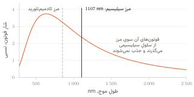
مثال 10.1 (بودجهٔ فوتونِ سه ماده) پرسش. با طیفِ جسمِ سیاهِ 5778 K که به 1000 W/m² مقیاس شده است (A-184، فرضِ آموزشی)، طولِ موجِ قطع، \(J_\text{max}\) و سهمِ \(E_g J_\text{max}\) را برای سیلیسیم (1.12 eV)، کادمیمتلورید (1.45 eV) و یک پروسکایتِ نمونه (1.60 eV) بیابید.
پاسخ.
sunlight as photons (blackbody 5778 K scaled to 1000 W/m2, A-184):
silicon Eg 1.12 eV, cutoff 1107 nm: J max 39.6 mA/cm2, Eg x J 44.3 %
CdTe Eg 1.45 eV, cutoff 855 nm: J max 28.3 mA/cm2, Eg x J 41.0 %
perovskite Eg 1.60 eV, cutoff 775 nm: J max 23.9 mA/cm2, Eg x J 38.3 %
photons below Eg pass through; above Eg the excess becomes
heat; Eg x J is the share left before voltage and fill-factor
losses: the root of the single-junction efficiency limitتفسیر. سیلیسیم با گافِ کوچکتر فوتونهای بیشتری میگیرد (39.6 mA/cm²) و با وجودِ ولتاژِ کمتر بیشترین سهم را دارد. در هر سه، بیش از نیمی از انرژیِ نور پیش از هر عیبِ ساخت از دست رفته است. محدودیتِ مدل: طیفِ واقعیِ مرجع (IEC 60904-3:2019، فصلِ ۱۲) نوارهای جذبِ بخارِ آب و اکسیژن دارد و شکلش با جسمِ سیاه فرق میکند؛ عددهای این مثال برای مقایسه درستاند، نه برای نقل. وارسی: طولِ موجِ قطعِ سیلیسیم \(1240/1.12 = 1107\ \text{nm}\) (E02، درست).
از سقفِ فوتون تا حدِ بازده. دو تلفاتِ دیگر هم بنیادیاند: سلولِ در حالِ کار باید در دمای محیط با محیط تبادلِ تابش کند و بخشی از جفتها پیش از رسیدن به اتصال بازترکیب میشوند؛ پس ولتاژِ سلول همیشه کمتر از \(E_g/q\) است. حسابِ دقیقِ اینها حدِ «تعادلِ تفصیلی» (به انگلیسی detailed-balance limit) را میدهد که برای یک پیوندِ تنها در نورِ خورشید حدودِ یکسوم است و برای سیلیسیم، با بازترکیبِ اجتنابناپذیرِ درونِ بلور، کمی کمتر. بهترین سلولهای آزمایشگاهیِ سیلیسیم به نزدیکِ این مرز رسیدهاند؛ پس بهبودِ بزرگتر یا از چندپیوندی (پشتهای) میآید (بخش 10.2.13) یا از کاهشِ تلفاتهای غیرِبنیادی در ماژول و نیروگاه.
خطای رایج. «نورِ شدیدتر فوتونهای پرانرژیتر دارد.» نه؛ شدت تعدادِ فوتونها را زیاد میکند. رنگ (طولِ موج) انرژیِ هر فوتون را تعیین میکند. به همین دلیل جریانِ سلول تقریباً با تابش متناسب است، اما ولتاژش فقط لگاریتمی با آن بالا میرود (بخش 10.2.4).
- انرژیِ فوتونِ 400 nm و 1000 nm را با معادلهٔ 10.1 حساب کنید (E01).
- طولِ موجِ قطعِ مادهای با گافِ 1.60 eV چیست؟
- چرا فوتونِ آبی در سلولِ سیلیسیمی بیشتر گرما میسازد تا فوتونِ سرخ؟
- اگر گاف کوچکتر شود، \(J_\text{max}\) و ولتاژِ سلول هر کدام چگونه تغییر میکنند؟
- چرا سقفِ بازدهِ پیوندِ تنها از سقفِ \(E_g J_\text{max}/G\) پایینتر است؟
10.2.3 نیمهرسانا، آلایش و حاملها
ایده. در بلورِ سیلیسیم هر اتم با چهار همسایه پیوند دارد و همهٔ الکترونهای ظرفیت در پیوندها گرفتارند. انرژیِ لازم برای آزاد کردنِ یک الکترون همان گافِ 1.12 eV است. الکترونِ آزادشده در نوارِ رسانش حرکت میکند و جای خالیاش، حفره، مانندِ یک بارِ مثبتِ متحرک در نوارِ ظرفیت جابهجا میشود. این دو حاملهای باراند (فصلِ ۶، بخش 6.2.5).
آلایش. اگر بهجای چند اتمِ سیلیسیم اتمی با پنج الکترونِ ظرفیت (مانندِ فسفر) بنشیند، یک الکترونِ اضافه آزاد میشود: سیلیسیمِ نوعِ n (حاملِ اکثریت الکترون). اتمی با سه الکترون (مانندِ بور یا گالیم) یک حفره میسازد: نوعِ p. غلظتِ آلاینده بسیار کم است (از مرتبهٔ یک اتم در میلیون یا کمتر) اما رسانندگی را چند مرتبه تغییر میدهد. این کتاب فقط مفهومِ آلایش را میآورد؛ روشها و تنظیمهای آن دانشِ فرایندِ کارخانهاند (بخش 10.3.3).
جذب، حاملهای اقلیت و طولِ پخش. فوتونِ جذبشده در ناحیهٔ نوعِ p یک الکترون میسازد که آنجا حاملِ اقلیت است. این الکترون با حرکتِ تصادفی (پخش) جابهجا میشود تا یا به پیوند برسد و جمع شود، یا با یک حفره بازترکیب شود و انرژیاش گرما شود. میانگینِ مسافتی که پیش از بازترکیب میپیماید طولِ پخش است و به طولِ عمرِ حامل بستگی دارد. هر ناخالصیِ فلزی، عیبِ بلور یا سطحِ بیحفاظ طولِ عمر را کوتاه میکند؛ این همان دلیلی است که خلوصِ سیلیسیم و غیرفعالسازیِ سطح (به انگلیسی surface passivation) در ساختِ سلول اینقدر مهماند (بخش 10.3.4).
جذبِ نور در عمق. شدتِ نور در ماده با ضریبِ جذبِ \(\alpha(\lambda)\) نمایی کم میشود: \(\Phi(x) = \Phi_0\,e^{-\alpha x}\). سیلیسیم گافِ غیرمستقیم دارد و نورِ نزدیکِ لبهٔ گاف را ضعیف جذب میکند.
مثال 10.2 (چرا ویفرِ نازک بافتدار و آینهٔ پشتی میخواهد) پرسش. با ضریبهای جذبِ تقریبیِ سیلیسیم در 600، 800 و 1000 nm (به ترتیب حدودِ 4140، 850 و 64 بر سانتیمتر؛ مقدارهای مرجعِ گردشده، A-184)، سهمِ جذبشده در ویفرِ 160 µm را با یک و دو بار گذرِ نور بیابید.
پاسخ. از \(1 - e^{-\alpha d}\) و \(1 - e^{-2\alpha d}\):
E04: 600 nm, 1/alpha 2.4 um: 160 um absorbs 100.0 % (100.0 % in 2 passes)
: 800 nm, 1/alpha 11.8 um: 160 um absorbs 100.0 % (100.0 % in 2 passes)
: 1000 nm, 1/alpha 156.2 um: 160 um absorbs 64.1 % ( 87.1 % in 2 passes)تفسیر. نورِ کوتاهموج در چند میکرومترِ نخست جذب میشود، پس سطحِ جلو باید بیعیب و غیرفعال باشد. نورِ نزدیکِ 1000 nm در یک گذر فقط دوسوم جذب میشود؛ بافتدهیِ سطح (هرمهای ریز که نور را مایل میکنند) و آینهٔ پشتی مسیرِ نور را چند برابر میکنند. وارسی: \(1 - e^{-64 \times 0.016} = 1 - e^{-1.024} = 0.641\) (درست).
خطای رایج. «ویفرِ ضخیمتر همیشه بهتر است.» ضخامتِ بیشتر نورِ بلندموج را بهتر میگیرد اما حاملها مسیرِ بلندتری تا اتصال دارند و سیلیسیمِ بیشتری مصرف میشود. صنعت با بافتدهی و غیرفعالسازی ضخامت را در دهههای اخیر کم کرده است؛ مرزِ پایینِ آن را شکنندگی و بازدهِ تولید تعیین میکند (بخش 10.3.2).
- حاملِ اکثریت در سیلیسیمِ نوعِ n چیست؟ حاملِ اقلیت؟
- چرا ناخالصیِ فلزیِ بسیار کم بازدهِ سلول را پایین میآورد؟
- نوری با \(1/\alpha = 156\ \mu\text{m}\) در 80 µm سیلیسیم چند درصد جذب میشود؟
- بافتدهیِ سطح دو کار انجام میدهد؛ کدامها؟
- چرا سطحِ جلو باید بیش از عمقِ ویفر از عیب پاک باشد؟
10.2.4 پیوندِ pn، دیود و جریانِ نوری
ایده. اگر لایهٔ نازکِ نوعِ n روی پایهٔ نوعِ p ساخته شود، الکترونهای n به سوی p و حفرههای p به سوی n پخش میشوند و اتمهای آلایندهٔ باردار را پشتِ سر میگذارند. این بارهای ثابت یک میدانِ الکتریکیِ درونی در ناحیهٔ تهی میسازند که پخشِ بیشتر را متوقف میکند. هر حاملِ اقلیتی که به این ناحیه برسد با میدان جارو میشود: الکترون به سمتِ n و حفره به سمتِ p. این جداسازیِ بارها همان جریانِ نوری است (شکل 10.2).
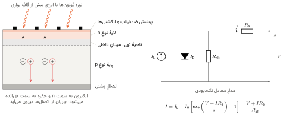
تعریفها و رابطه. در تاریکی، پیوند یک دیود است. با ولتاژِ گرماییِ \(V_t = k_\text{B} T/q\) (حدودِ 25.7 mV در 25 °C) و ضریبِ ایدهآلیِ \(n\):
\[ I_\text{D} = I_0\left[\exp\!\left(\frac{V}{n V_t}\right) - 1\right], \qquad I = I_\text{L} - I_\text{D} \tag{10.2}\]
که \(I_0\) جریانِ اشباعِ تاریک (معیارِ بازترکیب) و \(I_\text{L}\) جریانِ نوری (متناسب با تابش) است. علامتِ جریان «تولیدکننده» است: جریانِ مثبت از پایانهٔ مثبت بیرون میآید (قراردادِ D-010 در فصلِ ۷).
دو نقطهٔ ویژه. در اتصالِ کوتاه (\(V = 0\)) جریان \(I_\text{sc} \approx I_\text{L}\) است. در مدارِ باز (\(I = 0\)):
\[ V_\text{oc} = n V_t \ln\!\left(\frac{I_\text{L}}{I_0} + 1\right) \tag{10.3}\]
پس \(V_\text{oc}\) با لگاریتمِ جریانِ نوری بالا میرود و هر چه \(I_0\) (بازترکیب) کوچکتر، ولتاژ بیشتر. این رابطه کلیدِ فهمِ فناوریهاست: هر فناوریِ تازهٔ سلول در اصل راهی برای کوچک کردنِ \(I_0\) است (بخش 10.2.13).
مثال 10.3 (دو برابر شدنِ نور و دمای بیشتر) پرسش. برای ماژولِ ۷۲ سلولیِ PVM-550 با پارامترهای برازششدهٔ مثال 10.7 (\(a = n N_\text{s} V_t = 1.803\ \text{V}\))، (الف) \(n V_t\)ِ هر سلول را با \(V_t\) مقایسه کنید، (ب) اگر تابش دو برابر شود \(V_\text{oc}\) چقدر بالا میرود؟
پاسخ.
E03: thermal voltage at 25 C 25.69 mV;
fitted n Vt per cell a/72 = 25.05 mV (n 0.975)
E05: double the light: V_oc + a ln 2 = 1.25 V per module (17.4 mV per cell)تفسیر. ضریبِ ایدهآلیِ نزدیکِ یک یعنی بازترکیب بیشتر در بلور و سطحهاست، نه در ناحیهٔ تهی. دو برابر شدنِ نور جریان را دو برابر میکند اما ولتاژ را فقط 1.25 V از حدودِ 50 V بالا میبرد؛ به همین دلیل ولتاژِ رشته در صبح و عصر زود به نزدیکِ مقدارِ ظهر میرسد و اینورتر در تابشِ کم هم کار میکند. وارسی: \(1.803 \times \ln 2 = 1.250\) (درست).
اثرِ دما بر \(I_0\). جریانِ اشباع با دما بسیار تند بالا میرود (تقریباً با \(T^3 e^{-E_g/(k_\text{B} T)}\))؛ رشدِ \(I_0\) بر رشدِ \(V_t\) میچربد و \(V_\text{oc}\) با گرم شدن کم میشود: حدودِ −2 mV/K برای هر سلولِ سیلیسیمی، یعنی −0.27 %/K برای ماژولِ PVM-550. این همان پدیدهای است که ولتاژِ رشته را در زمستان بالا میبرد و در تابستان پایین میآورد (بخش 10.4.1).
خطای رایج. «دیودِ سلول همان دیودِ میانگذر است.» نه؛ دیودِ سلول خودِ پیوندِ pnِ سطحِ سلول است که نور را برق میکند. دیودِ میانگذر (به انگلیسی bypass diode) قطعهای جدا در جعبهتقسیم است که موازیِ گروهی از سلولها بسته میشود (بخش 10.3.15).
- میدانِ درونیِ پیوند از کجا میآید؟
- در معادلهٔ 10.3، اگر \(I_0\) ده برابر کوچک شود، \(V_\text{oc}\)ِ یک سلول با \(nV_t = 25\ \text{mV}\) چقدر بالا میرود؟
- چرا \(V_\text{oc}\) با گرما کم میشود اگرچه \(V_t\) با دما زیاد میشود؟
- ولتاژِ گرمایی در 65 °C چیست؟
- قراردادِ علامتِ «تولیدکننده» برای سلول یعنی چه؟
10.2.5 منحنیهای جریان–ولتاژ و توان–ولتاژ
ایده. اگر بارِ ماژول را از اتصالِ کوتاه تا مدارِ باز تغییر دهیم، جریان ابتدا تقریباً ثابت میماند (ناحیهٔ منبعِ جریان)، سپس در «زانو» تند کم میشود (ناحیهٔ منبعِ ولتاژ). حاصلضربِ ولتاژ و جریان در یک نقطه بیشینه است: نقطهٔ توانِ بیشینه (به انگلیسی maximum power point، MPP) که ردیابِ اینورتر دنبالش میگردد (فصلِ ۹، بخش 9.3.2).
تعریفها. ضریبِ پرشدگی (به انگلیسی fill factor) نشان میدهد منحنی چقدر «مربعی» است، و بازدهٔ ماژول نسبتِ توان به نورِ فرودی بر سطحِ کلِ ماژول \(A\) است:
\[ \text{FF} = \frac{V_\text{mp}\,I_\text{mp}}{V_\text{oc}\,I_\text{sc}}, \qquad \eta = \frac{P_\text{max}}{G\,A} = \frac{\text{FF}\,V_\text{oc}\,I_\text{sc}}{G\,A} \tag{10.4}\]
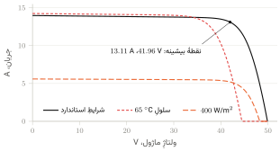
مثال 10.4 (ضریبِ پرشدگی و بازده از برگهٔ داده) پرسش. با جدول 10.1 ضریبِ پرشدگی و بازده را حساب کنید.
پاسخ.
E06: fill factor 41.96 x 13.11 / (49.9 x 13.98) = 0.789
efficiency 550 / (1000 x 2.583) = 21.29 %تفسیر. ضریبِ پرشدگیِ حدودِ 0.79 برای ماژولِ سیلیسیمیِ امروزی معمول است؛ نزدیکِ 0.85 برای سلولِ بسیار خوب و زیرِ 0.75 نشانهٔ مقاومتِ سریِ زیاد یا نشتی است. بازده روی سطحِ کلِ ماژول است (با قاب و فاصلهٔ سلولها)؛ بازدهِ سلول چند واحد بیشتر است. وارسی: \(0.789 \times 49.9 \times 13.98 = 550.4\ \text{W}\) (درست، با گردکردن).
چهار ناحیهٔ منحنی. ماژول فقط میانِ اتصالِ کوتاه و مدارِ باز تولید میکند. اگر جریانی بزرگتر از \(I_\text{L}\) به زور از آن بگذرد (مثلاً وقتی یک سلولِ سایهخورده در رشتهای پرجریان است)، ولتاژِ آن سلول منفی میشود و توان مصرف میکند: این ریشهٔ نقطهٔ داغ است (بخش 10.3.15). اگر ولتاژی بیش از \(V_\text{oc}\) از بیرون اعمال شود، جریان وارونه میشود: همان چیزی که در رشتههای موازیِ بیفیوز رخ میدهد (بخش 10.4.2).
خطای رایج. «توانِ ماژول \(V_\text{oc} \times I_\text{sc}\) است.» این حاصلضرب حدودِ 698 W است، اما هرگز همزمان رخ نمیدهد؛ توانِ واقعی \(\text{FF}\) برابرِ آن است. خطای مشابه: بازدهِ ماژول را با بازدهِ سلولِ تبلیغاتی یکی گرفتن.
- ضریبِ پرشدگیِ ماژولی با 45 V، 12 A مدارِ باز و اتصالِ کوتاه و 380 W بیشینه چیست؟
- در کدام ناحیهٔ منحنی ماژول مانندِ منبعِ جریان رفتار میکند؟
- چرا توانِ ماژول در ولتاژی بالاتر از \(V_\text{mp}\) کم میشود؟
- بازدهٔ سلول و بازدهٔ ماژول چرا متفاوتاند؟
- در شکل 10.3، چرا منحنیِ سلولِ گرم در \(V = 0\) کمی بالاتر است؟
10.2.6 زنجیرهٔ تلفات از نور تا برق
ایده. حال میتوان بازدهِ 21.3 % را به عاملهایش شکست. با معادلهٔ 10.4:
\[ \eta = \frac{E_g\,I_\text{sc}\,N_\text{s}/q}{G A} \times \frac{q V_\text{oc}}{N_\text{s} E_g} \times \text{FF} \tag{10.5}\]
عاملِ اول سهمِ نوری است که اگر هر فوتونِ جمعشده دقیقاً \(E_g\) میداد برق میشد، عاملِ دوم کسریِ ولتاژ و عاملِ سوم ضریبِ پرشدگی.
مثال 10.5 (بازدهِ PVM-550 به سه عامل) پرسش. با جدول 10.1 و \(E_g = 1.12\ \text{eV}\) سه عامل را بیابید و با مثال 10.1 مقایسه کنید.
پاسخ.
E07: loss chain: Eg x collected current / light = 43.6 %
x qV_oc/Eg 0.619 -> 27.0 %; x FF 0.789 -> 21.3 % (module)تفسیر. عاملِ نخست، 43.6 %، به سقفِ 44.3 %ِ مثال 10.1 نزدیک است: یعنی ماژول تقریباً همهٔ فوتونهای بالای گاف را که مدلِ ساده میشمارد جمع میکند و تلفاتِ نوری (بازتاب، سایهٔ انگشتیها، فاصلهٔ سلولها) در همین فاصلهٔ کوچک و در اختلافِ طیفِ واقعی با مدل پنهان است. بزرگترین تلفاتِ قابلِمهندسی کسریِ ولتاژ است: هر سلول 0.693 V میدهد در حالی که گاف 1.12 eV است. بخشی از این کسری بنیادی است (بخش 10.2.2) و بخشی بازترکیب؛ فناوریهای تازه دقیقاً همین را هدف میگیرند. وارسی: \(0.436 \times 0.619 \times 0.789 = 0.213\) (درست).
| گروهِ تلفات | سازوکار | چه آن را کم میکند | کجای کتاب |
|---|---|---|---|
| نوری | بازتاب، سایهٔ انگشتیها، جذب در شیشه و لایهها، فاصلهٔ سلولها | پوششِ ضدبازتاب، بافتدهی، اتصالِ پشتی، نیمسلول | بخش 10.3.4 |
| بنیادی | عبورِ فوتونِ زیرِ گاف، گرماییشدن | گافِ مناسب، چندپیوندی | بخش 10.2.13 |
| بازترکیب | عیبِ بلور، ناخالصی، سطح و اتصالهای فلزی | خلوص، غیرفعالسازی، اتصالِ گزینشی | بخش 10.3.3 |
| مقاومتی | مقاومتِ سری در لایهها، انگشتیها و نوارها؛ نشتیِ موازی | طراحیِ شبکهٔ فلزی، چندشینهای، نیمسلول | بخش 10.3.7 |
| ماژول و میدان | دما، زاویه، طیف، گرد و غبار، ناهمسانی، سایه | خنککاری، شستوشو، چیدمان | بخشِ پ و ت |
خطای رایج. «بازدهِ 21 % یعنی 79 % هدر میرود و میشود بیشترش را پس گرفت.» بیش از نیمی از آن تلفاتِ بنیادیِ پیوندِ تنهاست و هیچ بهبودِ ساختی آن را برنمیگرداند؛ اما همین تلفاتِ بنیادی به گرما تبدیل میشود و دمای ماژول را بالا میبرد (بخش 10.2.16).
- سه عاملِ مثال 10.5 را برای ماژولی با 45 V، 12 A، \(\text{FF} = 0.75\)، ۶۰ سلول و 1.7 m² بیابید.
- کسریِ ولتاژ چیست و چرا همهٔ آن قابلِ حذف نیست؟
- کدام تلفات با فناوریِ نیمسلول کم میشود؟
- چرا تلفاتِ بنیادی مسئلهٔ گرمایی هم هست؟
- اگر بازتاب 2 % کم شود، کدام یک از سه عامل تغییر میکند؟
10.2.7 مدلِ تکدیودیِ پنجپارامتری
ایده. سلولِ واقعی سه چیز بیش از دیودِ آرمانیِ معادلهٔ 10.2 دارد: جریان باید از لایهها، انگشتیها، نوارهای اتصال و لحیم بگذرد (مقاومتِ سری \(R_\text{s}\))، بخشی از جریان از راههای نشتی در لبهها و عیبها برمیگردد (مقاومتِ موازی \(R_\text{sh}\))، و بازترکیب با ضریبِ ایدهآلیِ دقیقاً یک انجام نمیشود. با افزودنِ اینها، مدلِ تکدیودی (به انگلیسی single-diode model) به دست میآید که مدارِ معادلش در شکل 10.2 آمد. برای ماژولی با \(N_\text{s}\) سلولِ سری:
\[ I = I_\text{L} - I_0\left[\exp\!\left(\frac{V + I R_\text{s}}{a}\right) - 1\right] - \frac{V + I R_\text{s}}{R_\text{sh}}, \qquad a = \frac{n N_\text{s} k_\text{B} T_\text{c}}{q} \tag{10.6}\]
که \(a\) ضریبِ ایدهآلیِ اصلاحشده (بر حسبِ ولت) و \(T_\text{c}\) دمای سلول است. پنج پارامتر \(I_\text{L}\)، \(I_0\)، \(a\)، \(R_\text{s}\) و \(R_\text{sh}\) در یک شرایطِ مشخص (تابش و دما) مدل را کامل میکنند.
| پارامتر | معنای فیزیکی | اثر بر منحنی | مقدارِ برازششدهٔ PVM-550 |
|---|---|---|---|
| \(I_\text{L}\) | جریانِ نوری، متناسب با تابش | جریانِ ناحیهٔ تخت | 13.997 A |
| \(I_0\) | جریانِ اشباعِ تاریک (بازترکیب) | \(V_\text{oc}\) (لگاریتمی) | 1.31e-11 A |
| \(a\) | ضریبِ ایدهآلی × ولتاژِ گرمایی × تعدادِ سلول | تیزیِ زانو، اثرِ دما | 1.803 V (\(n = 0.975\)) |
| \(R_\text{s}\) | مقاومتِ سری: فلز، اتصال، لایهها | شیبِ منحنی نزدیکِ \(V_\text{oc}\)؛ ضریبِ پرشدگی | 0.172 Ω |
| \(R_\text{sh}\) | مقاومتِ موازی: نشتی در لبه و عیب | شیبِ منحنی نزدیکِ \(I_\text{sc}\)؛ تابشِ کم | 146 Ω |
فرضها و مرزها. یک دیود همهٔ سازوکارهای بازترکیب را با یک \(n\) میانگین میگیرد (مدلِ دودیودی دو سازوکار را جدا میکند و برای تابشِ بسیار کم دقیقتر است)؛ همهٔ سلولها یکسان فرض میشوند؛ ناحیهٔ ولتاژِ منفی (شکستِ بهمنی) در مدل نیست و جدا ساخته میشود (بخش 10.3.15)؛ اثرِ ظرفیتیِ سلول، که در آزمونِ فلشِ سریع مهم است، هم نیست (بخش 10.6.1).
خطای رایج. «مقاومتِ موازیِ بزرگتر بد است.» برعکس: \(R_\text{sh}\) مسیرِ نشتی است و هر چه بزرگتر، نشتی کمتر. \(R_\text{s}\) باید کوچک و \(R_\text{sh}\) بزرگ باشد. خطای دیگر: یکی گرفتنِ \(n\) و \(a\)؛ \(a\) حاصلضربِ \(n\) در \(N_\text{s} V_t\) است و برای ماژول چند ولت است، نه عددی نزدیکِ یک.
- در معادلهٔ 10.6 چرا \(I\) در دو طرفِ رابطه آمده است؟
- کدام پارامتر بیشترین اثر را بر \(V_\text{oc}\) دارد و کدام بر شیبِ منحنی نزدیکِ \(I_\text{sc}\)؟
- \(a\) را برای ۶۰ سلول با \(n = 1.1\) در 25 °C حساب کنید.
- چرا مدلِ تکدیودی برای سلولِ سایهخورده در ولتاژِ منفی کافی نیست؟
- اگر \(R_\text{s}\) دو برابر شود، ضریبِ پرشدگی چه میشود؟ چرا؟
10.2.8 حلِ صریح با تابعِ لمبرت
ایده. معادلهٔ 10.6 ضمنی است: \(I\) در دو طرفش هست و جداکردنش با جبرِ معمولی ممکن نیست. سه راه هست: (۱) تکرارِ نقطهٔ ثابت، (۲) روشِ نیوتن (فصلِ ۳، بخش 3.5.2)، (۳) حلِ بسته با تابعِ لمبرت \(W\) که وارونِ \(w\,e^{w}\) است: اگر \(x = w e^{w}\)، آنگاه \(w = W(x)\). با بازچینیِ معادلهٔ 10.6 به شکلِ \(w e^{w} = \theta\):
\[ \begin{aligned} I &= \frac{R_\text{sh}(I_\text{L} + I_0) - V}{R_\text{s} + R_\text{sh}} - \frac{a}{R_\text{s}}\,W(\theta),\\ \theta &= \frac{R_\text{s} I_0 R_\text{sh}}{a (R_\text{s} + R_\text{sh})} \exp\!\left(\frac{R_\text{sh}\,\big(R_\text{s}(I_\text{L} + I_0) + V\big)}{a (R_\text{s} + R_\text{sh})}\right) \end{aligned} \tag{10.7}\]
و رابطهای همریخت برای \(V\) بر حسبِ \(I\).
سرریزِ عددی. نمای \(\theta\) برای ماژول به چند صد میرسد و \(e^{700}\) از بزرگترین عددِ قابلِ نمایش بیشتر است. چاره کار با لگاریتمِ آرگومان است: برای \(\ln x\) بزرگ، \(w + \ln w = \ln x\) با چند گامِ نیوتن حل میشود. تابعِ w_exp در کتابخانهٔ همراه همین کار را میکند (فصلِ ۵، بخش 5.2.3 دربارهٔ سرریز).
کد. دو روشِ صریحِ مدل:
def i(self, v):
"""Current at voltage(s) v (Lambert W, explicit)."""
v = np.asarray(v, dtype=float)
rs, rsh, a = self.r_s, self.r_sh, self.a
il0 = self.i_l + self.i_0
log_theta = (math.log(rs * self.i_0 * rsh / (a * (rs + rsh)))
+ rsh * (rs * il0 + v) / (a * (rs + rsh)))
w = w_exp(log_theta)
return (rsh * il0 - v) / (rs + rsh) - a * w / rs
def v(self, i):
"""Voltage at current(s) i (Lambert W, explicit)."""
i = np.asarray(i, dtype=float)
rsh, a = self.r_sh, self.a
log_psi = (math.log(self.i_0 * rsh / a)
+ rsh * (self.i_l + self.i_0 - i) / a)
w = w_exp(log_psi)
return (self.i_l + self.i_0 - i) * rsh - i * self.r_s - a * wمثال 10.6 (سه راه برای یک جریان) پرسش. جریانِ PVM-550 را در 40 V با تکرارِ نقطهٔ ثابت، نیوتن و تابعِ لمبرت بیابید و شمارِ گامها را مقایسه کنید.
پاسخ.
current of the PVM-550 at V = 40 V, three ways:
fixed point i <- i + f(i): 13.501897 A after 7 steps
Newton from 13 A: 13.501897 A after 4 steps
Lambert W (closed form): 13.501897 A
Newton converges fast from a good start; the Lambert W form
needs no start and no loop, which suits 8760 hours x 26
modules; both need care with overflow (chapter 3)تفسیر. هر سه به یک جواب میرسند. نیوتن با چهار گام از حدسِ خوب کافی است، اما حدسِ بد نزدیکِ زانو میتواند آن را دور کند. تکرارِ نقطهٔ ثابت این بار همگرا شد چون شیبِ تابع در این نقطه کوچک است؛ نزدیکِ \(V_\text{oc}\) شیبِ \(f\) بزرگ میشود و همین تکرار واگرا میشود (یک مسئلهٔ پلهٔ ۲ همین را در 49.8 V میآزماید). رابطهٔ لمبرت حلقه ندارد و برای ۸۷۶۰ ساعت و هزاران رشته بیدردسر است. وارسی: \(W(1) = 0.5671\) و \(W(10)\,e^{W(10)} = 10\) (E14، درست).
خطای رایج. «\(W\) را با کتابخانه حساب کن و تمام.» lambertw در بیشترِ کتابخانهها آرگومانِ خودِ \(x\) را میگیرد، نه \(\ln x\)؛ برای ماژول \(x\) سرریز میکند و جوابِ بینهایت یا nan برمیگرداند بیآنکه خطا دهد. همیشه با یک نقطهٔ معلوم (\(I_\text{sc}\)، \(V_\text{oc}\)) وارسی کنید.
- \(W(e)\) چیست؟ (\(w e^w = e\) را با حدس بیابید.)
- چرا تکرارِ نقطهٔ ثابت نزدیکِ \(V_\text{oc}\) واگرا میشود؟
- برای \(\ln x = 600\)، حدسِ اولِ \(w = \ln x - \ln \ln x\) چیست؟
- یک آزمونِ ساده برای کدِ مدل پیشنهاد کنید که به برگهٔ داده تکیه کند.
- اگر \(R_\text{s} \to 0\)، معادلهٔ 10.7 به چه رابطهٔ سادهتری میرسد؟
10.2.9 برازشِ پنج پارامتر به برگهٔ داده
ایده. برگهٔ داده پنج پارامتر را نمیدهد؛ چهار نقطه (\(I_\text{sc}\)، \(V_\text{oc}\)، \(V_\text{mp}\)، \(I_\text{mp}\)) و ضریبهای دمایی را میدهد. چهار معادله در شرایطِ استاندارد نوشته میشود:
- در اتصالِ کوتاه، \(I(0) = I_\text{sc}\)؛
- در مدارِ باز، \(I(V_\text{oc}) = 0\)؛
- در نقطهٔ بیشینه، \(I(V_\text{mp}) = I_\text{mp}\)؛
- در همان نقطه، \(\mathrm{d}P/\mathrm{d}V = 0\)، یعنی \(I_\text{mp} + V_\text{mp}\,\mathrm{d}I/\mathrm{d}V = 0\) (نقطه واقعاً بیشینه است).
چهار معادله برای پنج مجهول کم است. معادلهٔ پنجم از ضریبِ دماییِ \(V_\text{oc}\) میآید: \(n\) چنان انتخاب میشود که مدل، وقتی با معادلهٔ 10.8 به دمای دیگر برده شود، همان شیبِ \(\mathrm{d}V_\text{oc}/\mathrm{d}T\)ِ برگهٔ داده را بدهد. برای هر \(n\) آزمایشی، دو معادلهٔ غیرِخطی (\(R_\text{s}\) و \(\ln R_\text{sh}\)) با حلگرِ عددی حل میشوند و \(I_\text{L}\) و \(I_0\) از معادلههای ۱ و ۲ به دست میآیند؛ سپس \(n\) با ریشهیابیِ یکبعدی (فصلِ ۳) تنظیم میشود.
def fit(ds: Datasheet) -> SDM:
"""Five-parameter fit: n chosen so that dV_oc/dT matches the data sheet."""
def beta_err(n):
ref = _fit_at_n(ds, n)
v1 = at_conditions(ref, 1000, 20, ds.alpha_isc).voc
v2 = at_conditions(ref, 1000, 30, ds.alpha_isc).voc
return (v2 - v1) / 10 - ds.beta_voc
n = brentq(beta_err, 0.85, 1.25, xtol=1e-6)
return _fit_at_n(ds, n)مثال 10.7 (مدلِ PVM-550 از برگهٔ داده) پرسش. پنج پارامتر را از جدول 10.1 برازش دهید، چهار نقطه را وارسی کنید و نتیجه را با مدلِ صریحِ فصلِ ۹ و دیودِ آرمانیِ فصلِ ۶ مقایسه کنید (بستهٔ داده 1.1.0، دادهٔ ساختگیِ سازنده).
پاسخ.
single-diode model of the PVM-550 fitted to its data sheet:
I_L 13.9965 A, I_0 1.311e-11 A, n 0.975 (a 1.803 V),
R_s 0.1719 ohm, R_sh 145.7 ohm
check: I_sc 13.980 A, V_oc 49.900 V, MPP 41.96 V x 13.110 A = 550.1 W
fill factor 0.789; efficiency on 2.58 m2 21.32 % (A-183)
the explicit model of chapter 9: 550.1 W at 42.03 V;
the chapter 6 ideal diode without R_s gave 13.56 kW per string
instead of 14.30: series resistance shapes the kneeتفسیر. مدل چهار نقطه را دقیق بازمیسازد و \(n = 0.975\) بهدستآمده برای سیلیسیمِ بلوری معقول است. مقاومتِ سریِ 0.17 Ω یعنی حدودِ 2.4 mΩ برای هر سلول (همراهِ سهمِ نوارها و لحیم)؛ در جریانِ 13.1 A، تلفاتِ \(I^2 R_\text{s}\) حدودِ 30 W از 580 W است. قولِ فصلِ ۶: دیودِ آرمانیِ بیمقاومت برای یک رشته 13.56 kW میداد، نه 14.30 kWِ برگهٔ داده؛ با \(R_\text{s}\) و \(R_\text{sh}\)، زانوی منحنی درست شکل میگیرد و اختلاف از میان میرود. وارسی: \(41.96 \times 13.11 = 550.1\ \text{W}\) (درست).
یکتایی و شرطِ مسئله. برازش از نظرِ عددی بدحالت است: \(R_\text{sh}\) فقط شیبِ کوچکِ نزدیکِ اتصالِ کوتاه را تعیین میکند و چهار نقطهٔ شرایطِ استاندارد آن را خوب مقید نمیکنند. دو برازشِ متفاوت میتوانند در شرایطِ استاندارد یکسان و در تابشِ کم متفاوت باشند. چاره: برازش با ماتریسِ توان در چند تابش و دما (IEC 61853-1:2011، اندازهگیریِ آزمایشگاهی) یا وارسی با نقطهٔ بازدهِ تابشِ کمِ برگهٔ داده (بخش 10.2.11). این همان مرزِ «برازش در برابرِ شاهد» است: مدلِ برازششده به برگهٔ داده فرض است، مدلِ برازششده به اندازهگیری شاهد.
خطای رایج. «برازش موفق بود چون چهار نقطه درست درآمد.» آن چهار نقطه ورودیِ برازش بودند؛ آزمونِ واقعی نقطهای است که در برازش نبود: ضریبِ دماییِ توان، بازده در 200 W/m² یا یک منحنیِ اندازهگیریشده (مثال 10.8).
- چهار معادلهٔ شرایطِ استاندارد را بنویسید و بگویید کدام از مشتق میآید.
- چرا ضریبِ دماییِ \(V_\text{oc}\)، و نه \(P_\text{max}\)، برای معادلهٔ پنجم انتخاب شد؟
- \(R_\text{s} = 0.172\ \Omega\) در 13.11 A چه تلفاتی دارد؟
- چرا \(R_\text{sh}\) در برازش بدحالت است؟ چه دادهای آن را بهتر مقید میکند؟
- تفاوتِ «مدلِ برازششده به برگهٔ داده» و «مدلِ برازششده به اندازهگیری» در زبانِ این کتاب چیست؟
10.2.10 اثرِ دما و تابش
ایده. پنج پارامترِ شرایطِ استاندارد را میتوان با قاعدههای فیزیکی به هر تابشِ \(G\) و دمای سلولِ \(T_\text{c}\) برد (روشِ دِ سوتو، به انگلیسی De Soto). جریانِ نوری با تابش و کمی با دما، جریانِ اشباع با دما بسیار تند، \(a\) متناسب با دمای مطلق، و نشتی با تابش تغییر میکنند:
\[ \begin{aligned} I_\text{L} &= \frac{G}{G_\text{STC}}\left[I_\text{L,ref} + \mu_I\,(T_\text{c} - T_\text{ref})\right],\\ I_0 &= I_\text{0,ref}\left(\frac{T_\text{c}}{T_\text{ref}}\right)^{3} \exp\!\left(\frac{E_{g,\text{ref}}}{k_\text{B} T_\text{ref}} - \frac{E_g(T_\text{c})}{k_\text{B} T_\text{c}}\right),\\ a &= a_\text{ref}\,\frac{T_\text{c}}{T_\text{ref}}, \qquad R_\text{sh} = R_\text{sh,ref}\,\frac{G_\text{STC}}{G}, \qquad R_\text{s} = R_\text{s,ref} \end{aligned} \tag{10.8}\]
با \(T\) بر حسبِ کلوین، \(\mu_I\) ضریبِ دماییِ مطلقِ \(I_\text{sc}\) (آمپر بر کلوین) و \(E_g(T) = 1.121\,[1 - 0.0002677\,(T - T_\text{ref})]\) الکترونولت برای سیلیسیم.
def at_conditions(ref: SDM, g_wm2: float, t_cell_c: float,
alpha_isc: float) -> SDM:
"""De Soto-style translation of the STC parameters to irradiance G and
cell temperature T: I_L with G and alpha, I_0 with T^3 exp(-Eg/kT),
a with T, R_sh with 1/G, R_s constant."""
t = t_cell_c + 273.15
eg = EG_REF * (1 - 0.0002677 * (t - T_REF))
i_l = g_wm2 / 1000 * (ref.i_l + alpha_isc * (t - T_REF))
i_0 = (ref.i_0 * (t / T_REF) ** 3
* math.exp(EG_REF * Q_E / (K_B * T_REF) - eg * Q_E / (K_B * t)))
return SDM(i_l, i_0, ref.a * t / T_REF, ref.r_s,
ref.r_sh * 1000 / max(g_wm2, 1.0))مثال 10.8 (مدل در شش شرایط و آزمونِ ضریبِ توان) پرسش. با مدلِ مثال 10.7، \(V_\text{oc}\)، \(V_\text{mp}\) و \(P\) را در شش ترکیبِ تابش و دما بیابید. ضریبِ دماییِ توانِ مدل را با −0.35 %/Kِ برگهٔ داده و \(V_\text{oc}\) و \(P\) را با قاعدهٔ خطیِ برگهٔ داده مقایسه کنید.
پاسخ.
the fitted model against temperature and irradiance:
G W/m2 T C V_oc V V_mp V P W P/P_stc
1000 25 49.90 41.96 550.1 1.000
1000 45 47.19 39.12 515.3 0.937
1000 65 44.47 36.30 479.9 0.872
600 25 48.98 41.90 330.1 0.600
200 25 47.00 40.83 107.3 0.195
1000 -10 54.58 46.95 609.1 1.107
model coefficient of P_max -0.319 %/K against the data sheet -0.35 %/K
a five-parameter fit matches the four STC points and dV_oc/dT
exactly; the P_max coefficient is a check, not a fit targetE08: V_oc at -15 C: linear 55.29 V, fitted model 55.24 V
26 modules: 1438 V / 1436 V
E09: P_max at 65 C: linear 473.0 W, fitted model 479.9 Wتفسیر. برای \(V_\text{oc}\) مدل و قاعدهٔ خطی تقریباً یکیاند (مدل با همین شیب برازش شد). برای توان، مدل −0.319 %/K میدهد در برابرِ −0.35 %/Kِ برگهٔ داده: در 65 °C اختلافِ 7 W (حدودِ 1.5 %). این آزمونِ مستقل است چون ضریبِ توان ورودیِ برازش نبود. علتِ احتمالی: مدل \(R_\text{s}\) را ثابت میگیرد در حالی که مقاومتِ فلز و نوارها با دما بالا میرود، و قانونِ \(T^3\) برای \(I_0\) تقریبی است. در مطالعهٔ انرژی (فصلِ ۱۵) یا ضریبِ توانِ برگهٔ داده را بر مدل تحمیل میکنند یا مدل را با اندازهگیری در چند دما برازش میدهند. وارسی: \((479.9/550.1 - 1)/40 = -0.319\ \%/\text{K}\) (درست).
سه قاعدهٔ سرانگشتی. (۱) جریان با تابش خطی و با دما کمی بالا میرود (+0.048 %/K)؛ (۲) ولتاژ با دما کم میشود (حدودِ −0.27 %/K) و با تابش لگاریتمی بالا میرود؛ (۳) توان حاصلِ هر دوست و در گرما حدودِ −0.3 تا −0.4 %/K کم میشود. ماژولی که در ظهرِ تابستان 60 °C است حدودِ 12 % کمتر از برچسبش میدهد؛ همین است که دمای سلول را به یکی از بزرگترین تلفاتهای سالانه تبدیل میکند (مثال 10.59).
خطای رایج. دمای هوا را بهجای دمای سلول در معادلهٔ 10.8 گذاشتن. در ظهرِ تابستان سلول 20 تا 30 K از هوا داغتر است (بخش 10.2.16). خطای دیگر: علامتِ اختلافِ دما در محاسبهٔ \(V_\text{oc}\)ِ سرد؛ در −15 °C، \(T - T_\text{ref} = -40\ \text{K}\) و ولتاژ بالا میرود.
- با قاعدهٔ خطی، \(V_\text{oc}\)ِ PVM-550 را در −25 °C و 70 °C حساب کنید.
- چرا \(I_\text{sc}\) با دما کمی بالا میرود؟ (راهنما: گافِ نواری با دما چه میشود؟)
- در معادلهٔ 10.8 چرا \(R_\text{sh}\) با تابش کم میشود؟
- توانِ ماژول در 800 W/m² و 50 °C را با قاعدهٔ خطی برآورد کنید.
- چرا ضریبِ دماییِ توانِ مدل یک «آزمونِ مستقل» است؟
10.2.11 بازده در تابشِ کم
ایده. اگر توان دقیقاً با تابش متناسب بود، بازده ثابت میماند. اما در تابشِ کم \(V_\text{oc}\) لگاریتمی پایین میآید (معادلهٔ 10.3)؛ اگر نشتی با تابش ثابت بماند، سهمِ بزرگتری از جریانِ کوچک را هم میبرد. در تابشِ زیاد تلفاتِ \(I^2 R_\text{s}\) با مجذورِ جریان بالا میرود. پس بازده در تابشِ میانه بیشینه است. در مدلِ دِ سوتو \(R_\text{sh}\) با \(1/G\) بزرگ میشود (معادلهٔ 10.8)، پس سهمِ نشتی در همهٔ تابشها تقریباً یکی است و افتِ تابشِ کمِ مدل بیشتر از لگاریتمِ \(V_\text{oc}\) میآید؛ اینکه ماژولِ واقعی همینطور رفتار کند، پرسشِ اندازهگیری است. برگهٔ داده معمولاً بازدهِ نسبی در 200 W/m² را میدهد و آزمایشگاه با IEC 61853-1:2011 ماتریسِ کاملِ توان در چند تابش و دما را اندازه میگیرد.
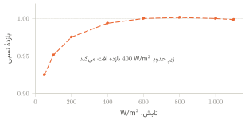
مثال 10.9 (منحنیِ بازدهِ نسبی) پرسش. بازدهِ ماژول را در 50 تا 1100 W/m² و 25 °C با مدلِ برازششده حساب کنید.
پاسخ.
relative efficiency against irradiance at 25 C (fitted model):
G W/m2 P_mp W efficiency % relative
50 25.4 19.72 0.925
100 52.3 20.29 0.951
200 107.3 20.79 0.975
400 218.7 21.19 0.994
600 330.1 21.32 1.000
800 440.7 21.35 1.001
1000 550.1 21.32 1.000
1100 604.3 21.29 0.999
efficiency peaks near 600 .. 800 W/m2: below, V_oc falls with
the log of the current and the shunt takes a larger share;
above, I^2 R_s grows; a data sheet gives the 200 W/m2 pointتفسیر. در 200 W/m² بازدهِ نسبی 0.975 است؛ یعنی ماژول 2.5 % کمتر از سهمِ خطیِ تابش میدهد. برگهٔ دادهٔ واقعی این عدد را از اندازهگیری میدهد و اگر با مدل فرق داشت، مدل (ضریبِ ایدهآلی، \(R_\text{sh}\) و قاعدهٔ تغییرِ آن با تابش) باید با ماتریسِ توان بازبرازش شود (بخش 10.2.9). در اقلیمِ نیروگاهِ P بیشترِ انرژی در تابشِ بالای 600 W/m² میآید، پس اثرِ سالانهٔ تابشِ کم کوچک است اما در سایتی ابری بزرگتر است. وارسی: \(107.3/(0.2 \times 550.1) = 0.975\) (درست).
خطای رایج. «ماژولِ بهتر در تابشِ کم یعنی تولیدِ بیشتر در زمستان.» بازدهِ تابشِ کم فقط یکی از عاملهای زمستان است؛ زاویهٔ تابش، سایهٔ ردیفها و دمای پایین (که بازده را بالا میبرد) اثرهای بزرگتری دارند.
- چرا بازده در تابشِ بسیار کم افت میکند؟ دو سازوکار را نام ببرید.
- چرا بازده در تابشِ بسیار زیاد هم کمی افت میکند؟
- در شکل 10.4، بیشینهٔ بازده تقریباً در کدام تابش است؟
- برای وارسیِ رفتارِ تابشِ کمِ مدل کدام عددِ برگهٔ داده مفید است؟
- ماتریسِ توانِ IEC 61853-1:2011 چه چیزی به برگهٔ داده میافزاید؟
10.2.12 مدلِ دودیودی و کی به آن نیاز است
ایده. در سلولِ سیلیسیمی دو سازوکارِ بازترکیب سهمِ جدا دارند: بازترکیب در بلور و سطحها (رفتاری نزدیکِ ضریبِ ایدهآلیِ یک) و بازترکیب در ناحیهٔ تهی (رفتاری نزدیکِ ضریبِ دو). در ولتاژهای نزدیکِ نقطهٔ کار سازوکارِ نخست چیره است و یک دیود با \(n\)ِ نزدیکِ یک کافی است؛ در ولتاژ و تابشِ کم، سهمِ دومی بزرگتر میشود. مدلِ دودیودی هر سازوکار را با دیودِ خودش میآورد:
\[ I = I_\text{L} - I_{01}\left[\exp\!\left(\frac{V + I R_\text{s}}{a_1}\right) - 1\right] - I_{02}\left[\exp\!\left(\frac{V + I R_\text{s}}{a_2}\right) - 1\right] - \frac{V + I R_\text{s}}{R_\text{sh}} \tag{10.9}\]
با \(a_1\) متناظر با \(n \approx 1\) و \(a_2\) با \(n \approx 2\). هفت پارامتر به جای پنج: برگهٔ داده برای برازشِ آن کافی نیست و منحنیهای اندازهگیریشده در چند تابش (ماتریسِ توانِ IEC 61853-1:2011) یا منحنیِ تاریک لازم است.
کی ارزشش را دارد. (۱) سایتهای ابری با سهمِ بزرگِ انرژی در تابشِ کم؛ (۲) تشخیصِ عیب (افزایشِ \(I_{02}\) نشانهٔ آسیب در ناحیهٔ پیوند است)؛ (۳) پژوهش و مقایسهٔ فناوریها. برای نیروگاهِ P، با بیشترِ انرژی در تابشِ بالای 600 W/m²، مدلِ تکدیودی بس است و پیچیدگیِ بیشتر بدونِ دادهٔ اندازهگیریشده فقط دقتِ ظاهری میافزاید.
خطای رایج. «مدلِ پیچیدهتر همیشه دقیقتر است.» مدلی با پارامترهای بیشتر از داده، روی دادههای برازش خوب و بیرون از آن بد عمل میکند (فصلِ ۳، بخش 3.5.7)؛ پیچیدگی را دادهٔ موجود تعیین میکند، نه سلیقه.
- دو سازوکارِ بازترکیبِ مدلِ دودیودی کداماند و هر کدام کجا چیره است؟
- چرا برگهٔ داده برای برازشِ هفت پارامتر کافی نیست؟
- افزایشِ \(I_{02}\) در طولِ عمر نشانهٔ چیست؟
- برای نیروگاهِ P چرا مدلِ تکدیودی بس است؟
10.2.13 فناوریهای سلول و ماژول
ایده. همهٔ فناوریهای سیلیسیمِ بلوری یک پیوند و یک گاف دارند؛ تفاوتشان در این است که بازترکیب را کجا و چگونه کم میکنند و نور را چگونه بهتر میگیرند. چون \(V_\text{oc}\) با \(\ln(I_\text{L}/I_0)\) بالا میرود (معادلهٔ 10.3)، هر بار که \(I_0\) ده برابر کوچک شود، هر سلول حدودِ 60 mV ولتاژ میگیرد. تاریخِ صنعت در دو دههٔ اخیر تاریخِ همین مبارزه با بازترکیب در سطحها و اتصالهای فلزی است.
| فناوری | ایدهٔ اصلی | ویفرِ رایج | ویژگیهای میدانیِ معمول (تقریبی) |
|---|---|---|---|
| سطحِ پشتیِ آلومینیومی (Al-BSF) | اتصالِ کاملِ آلومینیوم در پشت | نوعِ p | فناوریِ قدیمی؛ بازترکیبِ زیاد در پشت |
| گسیلنده و پشتِ غیرفعال (PERC) | لایهٔ غیرفعالسازِ پشت با روزنههای کوچکِ اتصال | نوعِ p | ضریبِ توانِ حدودِ −0.35 %/K؛ حساس به تخریبِ نوری در ویفرِ بوردار |
| اتصالِ غیرفعالِ اکسیدِ تونلی (TOPCon) | لایهٔ اکسیدِ بسیار نازک و سیلیسیمِ آلاییده زیرِ فلز | نوعِ n | ضریبِ توانِ کمتر؛ دوطرفگیِ بیشتر |
| ناهمپیوند (HJT) | لایههای سیلیسیمِ بیشکل روی بلور؛ فرایندِ دمای پایین | نوعِ n | کمترین ضریبِ دمایی در این جدول؛ دوطرفگیِ زیاد |
| تماسِ پشتیِ درهم (IBC) | همهٔ اتصالها در پشت؛ جلوی بیسایه | معمولاً نوعِ n | بازدهِ بالا؛ معمولاً یکرو |
| لایهٔ نازکِ کادمیمتلورید | لایهٔ چندمیکرونی روی شیشه | (ویفر ندارد) | ضریبِ دماییِ کم؛ پاسخِ طیفیِ متفاوت؛ چرخهٔ بازیافتِ ویژه |
| پشتهای (پروسکایت روی سیلیسیم) | دو پیوند با دو گاف | نوعِ n زیرین | بازدهِ آزمایشگاهیِ بسیار بالا؛ پایداریِ بلندمدت در حالِ اثبات |
چندپیوندی و مرزِ بازده. در یک سلولِ پشتهای (به انگلیسی tandem) لایهٔ بالایی با گافِ بزرگتر فوتونهای پرانرژی را با ولتاژِ بالا میگیرد و لایهٔ پایینی فوتونهای کمانرژی را؛ تلفاتِ گرماییشدن کم میشود و مرزِ تعادلِ تفصیلی بالا میرود. سلولهای پشتهایِ پروسکایت–سیلیسیم در آزمایشگاه از مرزِ پیوندِ تنها گذشتهاند؛ پرسشِ مهندسیِ امروزشان پایداری در گرما، رطوبت و نور در چند دهه است، یعنی همان چیزی که آزمونهای تأییدِ صلاحیت فقط بخشی از آن را میسنجند (بخش 10.3.18).
انتخاب برای نیروگاه. برای نیروگاهِ P انتخابِ فناوری با سه پرسش انجام میشود، نه با بازدهِ تبلیغاتی: (۱) انرژیِ سالانه در اقلیمِ سایت با ضریبِ دما، دوطرفگی و تابشِ کم (فصلِ ۱۵)؛ (۲) قابلیتِ اطمینان با سازوکارهای تخریبِ ویژهٔ هر فناوری (بخش 10.3.12)؛ (۳) هزینه و تأمین (فصلهای ۱۸ و ۳۹). PVM-550ِ بستهٔ داده یکروی تکبلور است؛ گزینهٔ دوطرفه در بخش 10.2.17 سنجیده میشود.
مثال 10.10 (ضریبِ دما در انرژیِ تابستان) پرسش. دو ماژولِ همتوان، یکی با −0.35 %/K و دیگری با −0.26 %/K (فرضی، مقدارهای آموزشی): در سلولِ 60 °C توانِ نسبیِ هر کدام چیست و اختلاف چند درصد است؟
پاسخ. \(1 - 0.0035 \times 35 = 0.8775\) و \(1 - 0.0026 \times 35 = 0.909\)؛ اختلاف \(0.909/0.8775 - 1 = 3.6\ \%\).
تفسیر. در ساعتهای داغ ماژولِ با ضریبِ کمتر حدودِ 3.6 % بیشتر میدهد؛ اما در سال، با سهمِ ساعتهای سرد و میانه، اختلاف کمتر است و باید با مدلِ سالانه (مثال 10.59) سنجیده شود. وارسی: \((60 - 25) = 35\ \text{K}\) (درست).
خطای رایج. «بازدهِ بالاتر یعنی انرژیِ بیشتر برای هر کیلووات.» بازدهِ بالاتر سطح را کم میکند، نه لزوماً انرژیِ هر کیلوواتِ برچسب را. انرژیِ هر کیلووات (بازدهِ ویژه، kWh/kWp) را ضریبِ دما، تابشِ کم، طیف و دوطرفگی تعیین میکنند.
- چرا کم کردنِ \(I_0\) ولتاژ را بالا میبرد؟ ده برابر کم شدنِ \(I_0\) چند میلیولت برای هر سلول است؟
- ایدهٔ مشترکِ PERC، TOPCon و HJT چیست؟
- چرا سلولِ پشتهای میتواند از مرزِ پیوندِ تنها بگذرد؟
- سه پرسشِ انتخابِ فناوری برای نیروگاه کداماند؟
- ماژولِ با بازدهِ بالاتر در کدام هزینهها صرفهجویی میکند؟
10.2.14 خواندنِ برگهٔ داده
ایده. برگهٔ داده (به انگلیسی datasheet) ادعای سازنده است، نه شاهدِ مستقل؛ اما زبانِ مشترکِ خرید، طراحی و پذیرش است. هر عدد در آن شرطی دارد و طراح باید آن شرط را بداند.
| بخش | عددها | شرط و دامِ رایج |
|---|---|---|
| الکتریکی در شرایطِ استاندارد | \(P_\text{max}\)، \(V_\text{mp}\)، \(I_\text{mp}\)، \(V_\text{oc}\)، \(I_\text{sc}\)، بازده | 1000 W/m²، سلولِ 25 °C، طیفِ مرجعِ AM1.5؛ در میدان تقریباً هرگز همزمان رخ نمیدهد |
| الکتریکی در دمای کارِ اسمی | همان عددها در 800 W/m² و دمای اسمی | تعریفِ دمای اسمی (NOCT یا NMOT) را ببینید |
| رواداری و رده | 0/+5 W | فلشِ کارخانه با عدمِ قطعیتِ خودش (بخش 10.2.15) |
| ضریبهای دمایی | \(P_\text{max}\)، \(V_\text{oc}\)، \(I_\text{sc}\) | درصد یا مقدارِ مطلق؛ علامتها |
| حدها | بیشینهٔ ولتاژِ سامانه، فیوزِ سری، دمای کار | حدِ طراحیِ رشته و فیوز (بخش 10.4.1، بخش 10.4.2) |
| مکانیکی | ابعاد، جرم، بارهای آزمون، نوعِ قاب و نقطههای نصب | بارِ آزمون به روشِ نصب بستگی دارد (فصلِ ۳۰) |
| تابشِ کم و دوطرفگی | بازدهِ نسبی در 200 W/m²، ضریبِ دوطرفگی | روشِ اندازهگیری را بخواهید |
| گواهیها و ضمانت | استانداردها، ضمانتِ محصول و توان | گواهی چه چیزی را نمیگوید (بخش 10.3.18) |
| بستهبندی | شمارِ ماژول در پالت و کانتینر | ورودیِ برنامهٔ حمل و بازرسی (مثال 10.60) |
دمای اسمی. NOCT (دمای کارِ اسمیِ سلول) دمای سلول در 800 W/m²، هوای 20 °C، بادِ 1 m/s و نصبِ باز است؛ بعدها تعریفِ NMOT (دمای کارِ اسمیِ ماژول، با ماژولِ در حالِ تولید) جای آن را گرفت و ویرایشِ تازهٔ سریِ تأییدِ صلاحیت آزمونش را برداشته است (IEC 61215-2:2021). برای طراح هر دو یک عددند: یک نقطه از رفتارِ گرماییِ ماژول در یک نصبِ مشخص.
مثال 10.11 (سه عدد که برگهٔ داده مستقیم نمیدهد) پرسش. با جدول 10.1: (الف) ضریبهای دماییِ مطلقِ \(V_\text{oc}\) و \(I_\text{sc}\)؛ (ب) \(V_\text{oc}\)ِ رشتهٔ ۲۶ ماژولی در −15 °C با قاعدهٔ خطی؛ (ج) بیشینهٔ جریانِ رشته در 1200 W/m² و سلولِ 72 °C.
پاسخ. (الف) \(\mu_V = 49.90 \times (-0.0027) = -0.1347\ \text{V/K}\) و \(\mu_I = 13.98 \times 0.00048 = 0.00671\ \text{A/K}\). (ب) و (ج):
E08: V_oc at -15 C: linear 55.29 V, fitted model 55.24 V
26 modules: 1438 V / 1436 V
E17: current bound 1.2 x 13.98 + 0.00671 x 47 = 17.09 A; x 20 = 342 Aتفسیر. ولتاژِ سردِ رشته 1438 V زیرِ حدِ 1500 V است (بخش 10.4.1) و جریانِ 17.1 A ورودیِ انتخابِ کابل و فیوز است. ضریبِ \(1.2\) برای تابشِ بالای استاندارد (لبهٔ ابر، آلبیدو) یک فرضِ آموزشی است (A-190)؛ ضریبهای الزامی را استانداردِ طراحیِ آرایه (IEC 62548-1:2023، فصلِ ۶) تعیین میکند. وارسی: \(1.2 \times 13.98 = 16.78\) و \(16.78 + 0.32 = 17.09\) (درست).
خطای رایج. ضریبهای دمایی را با علامتِ اشتباه یا بر حسبِ درصد بهجای مقدارِ مطلق به کار بردن. خطای دیگر: عددهای ستونِ NOCT یا NMOT را عددهای «واقعیِ میدان» گرفتن؛ آنها یک شرطِ دیگرند، نه میانگینِ سالانه.
- چرا شرایطِ استاندارد در میدان تقریباً هرگز رخ نمیدهد؟
- ضریبِ مطلقِ \(V_\text{oc}\)ِ رشتهٔ ۲۶ ماژولی چند ولت بر کلوین است؟
- بیشینهٔ ولتاژِ سامانه و فیوزِ سریِ برگهٔ داده هر کدام کدام طراحی را محدود میکنند؟
- چرا بارِ آزمونِ مکانیکی به روشِ نصب وابسته است؟
- سه ردیف از جدول 10.5 را نام ببرید که در پذیرشِ ماژول به کار میآیند.
10.2.15 رواداری، ردهبندیِ توان و عدمِ قطعیتِ فلش
ایده. کارخانه هر ماژول را زیرِ شبیهسازِ خورشیدیِ فلشی (به انگلیسی flash tester) میآزماید (IEC 60904-1:2020، با شبیهسازی که IEC 60904-9:2020 ردهاش را میدهد) و آن را در ردهٔ توان (به انگلیسی power bin) میگذارد. برچسبِ 550 W با رواداریِ 0/+5 W یعنی فلشِ کارخانه برای این ماژول عددی میانِ 550.0 و 555.0 W داده است. این تصمیمِ مرتبسازی با ابزارِ سازنده است؛ عدمِ قطعیتِ آن ابزار جدا است.
مثال 10.12 (برچسب در برابرِ توانِ واقعی) پرسش. با رواداریِ 0/+5 W و عدمِ قطعیتِ گستردهٔ فلشِ کارخانه ±3 % با ضریبِ پوششِ ۲ (A-185)، ماژولی که 552 W فلش شده است واقعاً در چه بازهای است؟
پاسخ.
data-sheet tolerance and binning (A-185):
power class 550 W, tolerance 0 / +5 W: flashed power in the
factory must lie in 550.0 .. 555.0 W for this label
factory flash uncertainty +-3 % (k 2): a module flashed at 552 W
may truly be between 535 and 569 W
the label is a sorting decision by the maker's flasher; a site
re-measurement needs its own uncertainty (chapter 2, section E)تفسیر. رواداریِ مثبت فقط میگوید فلشِ کارخانه زیرِ 550 W را رد کرده است؛ نمیگوید توانِ واقعی (با مرجعِ مستقل) زیرِ 550 W نیست. عدمِ قطعیتِ ±3 % شش برابرِ پهنای رده است. برای پذیرش، قرارداد باید بگوید کدام اندازهگیری، با کدام آزمایشگاهِ تأییدشده (ISO/IEC 17025:2017) و کدام قاعدهٔ تصمیم ملاک است (فصلِ ۲، بخش 2.4.5.6؛ بخش 10.6.1). وارسی: \(552 \times 0.97 = 535\) و \(552 \times 1.03 = 569\) (درست).
ردهبندیِ جریان. برخی سازندگان افزون بر توان، ماژولها را با جریان هم ردهبندی میکنند تا ماژولهای یک رشته جریانهای نزدیک داشته باشند؛ ناهمسانیِ سری را کم میکند (بخش 10.4.9). برای طراح، ردهبندیِ تنگتر یعنی ناهمسانیِ کمتر، اما فقط تا وقتی ماژولها یکسان پیر شوند.
خطای رایج. «میانگینِ فلشِ کارخانهٔ محموله 552.9 W است، پس محموله 0.5 % بیش از برچسب است.» این میانگین با همان فلشی است که ردهبندی کرد؛ اگر آن فلش 0.5 % بالا بخواند، کلِ «اضافه» خطای ابزار است (مثال 10.54).
- رواداریِ 0/+5 W دربارهٔ چه چیزی ادعا میکند و دربارهٔ چه چیزی نه؟
- پهنای رده و عدمِ قطعیتِ فلش را مقایسه کنید. نتیجه برای پذیرش چیست؟
- چرا قرارداد باید آزمایشگاه و قاعدهٔ تصمیم را نام ببرد؟
- ردهبندیِ جریان چه سودی دارد و کی بیاثر میشود؟
- اگر فلشِ کارخانه 0.4 % بالا بخواند، ماژولِ واقعیِ 548 W با کدام برچسب ممکن است فروخته شود؟
10.2.16 دمای سلول در میدان
ایده. ماژول هر وات نوری را که برق نکند گرما میکند: در 1000 W/m² حدودِ 790 W/m². این گرما با همرفت (باد)، تابش به آسمان و زمین، و هدایت به قاب و سازه بیرون میرود. فصلهای ۴ و ۶ دو مدل دادند (بخش 4.2.8 و بخش 6.3.14)؛ اینجا مدلِ فایمن (به انگلیسی Faiman) با اثرِ باد را جایگزینِ قاعدهٔ NOCT میکنیم:
\[ T_\text{c} = T_\text{a} + \frac{T_\text{NOCT} - 20}{800}\,G, \qquad T_\text{c} = T_\text{a} + \frac{G}{U_0 + U_1\,v} \tag{10.10}\]
(رابطهٔ چپ قاعدهٔ NOCT و رابطهٔ راست مدلِ فایمن است؛ دماها بر حسبِ درجهٔ سلسیوس و \(G\) بر حسبِ W/m².)
با \(U_0\) (ضریبِ ثابتِ انتقالِ گرما، W/(m²·K)) و \(U_1\) (ضریبِ باد، W·s/(m³·K)) و \(v\) سرعتِ باد در ارتفاعِ ماژول. برای نصبِ باز، A-186 مقدارهای \(U_0 = 25\) و \(U_1 = 6.84\) را میگذارد؛ بادِ بستهٔ داده در 100 m است و با قانونِ توانی (فصلِ ۴) به 2 m برده میشود.
مثال 10.13 (قاعدهٔ NOCT در برابرِ فایمن در یک سال) پرسش. دمای ماژول را در ساعتهایی که تابشِ صفحهٔ آرایه بیش از 600 W/m² است با دو مدل حساب و مقایسه کنید. سپس صدکِ ۹۸امِ دمای ماژول را بیابید.
پاسخ.
module temperature over the data-pack year, hours above 600 W/m2:
NOCT rule (chapter 6): mean 48.9 C, max 70.7 C
Faiman with wind at 2 m: mean 42.3 C, max 71.7 C (U0 25, U1 6.84; A-186)
mean difference -6.6 K: the wind term cools windy hours;
mounting (open rack, roof) changes U0module temperature percentiles over the data-pack year (Faiman):
all 8760 h: 98th percentile 56.5 C, maximum 71.7 C
daylight hours (POA > 50 W/m2): 98th percentile 60.1 C
open racks at 1200 m stay below the 70 C reference of the
module safety standard; a roof or a hot desert site may not
(IEC TS 63126:2025 adds two higher temperature levels)تفسیر. با باد، میانگینِ دمای سلول در ساعتهای پرتابش 6.6 K کمتر از قاعدهٔ NOCT است؛ با ضریبِ −0.32 %/K این حدودِ 2 % توانِ بیشتر در همان ساعتهاست و دلیلِ اصلیِ کمتر شدنِ ساعتهای زیرِ کفِ پنجرهٔ اینورتر در مثال 10.46. بیشینهها نزدیکاند، چون داغترین ساعتها ساعتهای کمبادند. مرز: \(U_0\) و \(U_1\) برای این نصب فرضاند؛ مقدارِ واقعی از اندازهگیریِ دمای پشتِ ماژول در سایت (فصلِ ۱۲) برازش میشود. وارسی: در 1000 W/m²، هوای 35 °C و بادِ 1 m/s: \(35 + 1000/31.84 = 66.4\ ^\circ\text{C}\) (E10، درست).
نصب. ماژولِ روی سازهٔ باز از دو طرف خنک میشود؛ ماژولِ چسبیده به بام یا روی سطحِ داغ \(U_0\)ِ بسیار کمتری دارد و دهها درجه داغتر میشود. استانداردِ ایمنیِ ماژول برای محیطهایی نوشته شده است که صدکِ ۹۸امِ دمای ماژول از 70 °C بیشتر نشود (IEC 61730-1:2023)؛ برای محیطهای داغتر IEC TS 63126:2025 دو ترازِ دماییِ بالاتر میافزاید. نیروگاهِ P با 56.5 °C برای همهٔ ساعتها در محدودهٔ معمول است.
خطای رایج. دمای سلول را با دمای پشتِ ماژول یکی گرفتن. حسگرِ پشتِ ماژول چند درجه سردتر از سلول است (فصلهای ۱۲ و ۵۲)؛ مدلها تفاوت را با یک جملهٔ ثابت میدهند.
- ماژول در 1000 W/m² چند وات بر مترمربع گرما دفع میکند؟
- با معادلهٔ 10.10، دمای سلول در 800 W/m²، هوای 20 °C و بادِ 3 m/s چیست؟
- چرا بیشینهٔ دما در دو مدل نزدیک است اما میانگینها نه؟
- چرا ماژولِ نصبشده روی بام داغتر است؟ کدام ضریب کم میشود؟
- صدکِ ۹۸امِ دما چرا برای انتخابِ استانداردِ ایمنی مهم است؟
10.2.17 ماژولِ دوطرفه
ایده. ماژولِ دوطرفه (به انگلیسی bifacial) با شیشهٔ پشت یا پشتپوشِ شفاف از نورِ بازتابیده از زمین و آسمانِ پشت هم برق میسازد. ضریبِ دوطرفگی \(B_\text{f}\) نسبتِ بازدهِ پشت به جلو است (حدودِ 0.7 تا 0.9 بسته به فناوری، جدول 10.4). اگر تابشِ پشت \(G_\text{rear}\) باشد، تابشِ همارزِ جلو \(G_\text{front} + B_\text{f}\,G_\text{rear}\) است.
مثال 10.14 (سودِ دوطرفگی) پرسش. با تابشِ پشتِ 12 % از تابشِ افقی و \(B_\text{f} = 0.70\) (A-187، فرضی) سودِ سالانه را نسبت به تابشِ جلو برآورد کنید.
پاسخ.
bifacial module, rear irradiance 12 % of GHI (albedo, row gaps; A-187):
bifaciality 0.70: effective gain 7.6 % of front POA
the gain depends on ground albedo, table height, row spacing and
shading of the rear by the structure: a model and a measurement
campaign, not a data-sheet number, set the design valueتفسیر. حدودِ 7.6 % تابشِ بیشتر، اما سودِ انرژی کمتر از آن است: سازه و جعبهتقسیم بخشی از پشت را میپوشانند، ناهمسانیِ تابشِ پشت در طولِ ردیف ناهمسانیِ الکتریکی میسازد، و جریانِ بیشتر رشته را به حدِ پنجره یا کابل نزدیکتر میکند. آلبیدوی خاکِ روشنِ بیابان، ارتفاعِ ردیف و فاصلهٔ ردیفها همه اثر دارند؛ پس عددِ طراحی از مدلِ هندسیِ پشت و اندازهگیریِ آلبیدو میآید (فصلهای ۱۲ و ۱۵). وارسی: \(0.12 \times 1000 \times 0.70 = 84\ \text{W/m}^2\) (E11، درست).
پیامد برای طراحیِ برق. برچسبِ ماژولِ دوطرفه در شرایطِ استاندارد فقط جلو است؛ جریانِ واقعی در میدان میتواند چند درصد بیشتر باشد. پس بیشینهٔ جریانِ رشته، فیوز و کابل باید با سهمِ پشت حساب شوند (بخش 10.4.2). اندازهگیریِ ماژولِ دوطرفه روشِ ویژه دارد (یک مشخصهٔ فنیِ سریِ IEC 60904؛ ویرایشِ جاریِ آن پیش از استناد باید تأیید شود).
- تابشِ همارزِ جلو با 900 W/m² جلو، 100 W/m² پشت و \(B_\text{f} = 0.8\) چیست؟
- چرا سودِ انرژیِ دوطرفگی کمتر از سودِ تابش است؟
- کدام ویژگیهای میدان تابشِ پشت را زیاد میکنند؟
- چرا ماژولِ دوطرفه جریانِ طراحیِ رشته را بالا میبرد؟
10.2.18 زاویهٔ تابش و بازتاب
ایده. هر چه نور مایلتر به شیشه برسد، سهمِ بیشتری بازتابیده میشود (قانونِ فرنل). ضریبِ اصلاحِ زاویهٔ تابش (به انگلیسی incidence angle modifier، IAM) سهمِ نورِ رسیده به سلول را نسبت به تابشِ عمود میدهد. مدلِ سادهٔ ASHRAE:
\[ K(\theta) = 1 - b_0\left(\frac{1}{\cos\theta} - 1\right) \tag{10.11}\]
با \(b_0 \approx 0.05\) برای شیشهٔ معمولی. برای نورِ پخشیده یک ضریبِ میانگین (اینجا 0.95) به کار میرود.
مثال 10.15 (تلفاتِ زاویه در یک سال) پرسش. \(K\) را در \(30^\circ\) تا \(80^\circ\) بیابید و تلفاتِ سالانهٔ زاویه را برای صفحهٔ 25° حساب کنید.
پاسخ.
E12: IAM (b0 0.05): 30 deg 0.992, 60 deg 0.950, 75 deg 0.857, 80 deg 0.762incidence-angle losses over the year, tilt 25 deg (b0 0.05):
beam 1570 kWh/m2 -> 1535 after IAM (2.2 % lost)
diffuse and ground 580 kWh/m2 x 0.95 (5 % lost)
total 2150 -> 2086 kWh/m2: 3.0 % of the plane-of-array light
most beam arrives near normal incidence; the loss is in the
mornings, evenings and winter; anti-reflection glass and
soiling change b0 (chapter 14 uses a measured IAM table)تفسیر. تا \(60^\circ\) تلفات کوچک است؛ بیشترِ نورِ مستقیم نزدیکِ عمود میرسد و فقط 2.2 %ِ آن میرود. سهمِ پخشیده با 5 % تلفات نسبتاً بیشتر میبازد چون از همهٔ زاویهها میآید. جمعاً 3.0 %. شیشهٔ ضدبازتاب \(b_0\) را کم میکند و گرد و غبار آن را زیاد. وارسی: \(1 - 0.05\,(1/\cos 60^\circ - 1) = 0.95\) (درست).
- \(K(70^\circ)\) را با معادلهٔ 10.11 حساب کنید.
- چرا تلفاتِ زاویه برای نورِ پخشیده بیشتر است؟
- اثرِ پوششِ ضدبازتابِ فرسوده یا گرد و غبار بر \(b_0\) چیست؟
10.2.19 طیفِ نور و ارتفاع
ایده. شرایطِ استاندارد طیفِ مرجعِ AM1.5 را فرض میکند (IEC 60904-3:2019). طیفِ واقعی با جرمِ هوا (زاویهٔ خورشید)، بخارِ آب، ذرههای معلق و ابر تغییر میکند. سلولِ سیلیسیمی فوتونهای سرخ و فروسرخِ نزدیک را خوب میگیرد؛ سلولِ کادمیمتلورید با گافِ بزرگتر به آبی نزدیکتر است و در هوای مرطوب (که فروسرخ را میگیرد) نسبتاً بهتر عمل میکند. اثرِ طیف را با ضریبِ ناهمسانیِ طیفی \(M\) نشان میدهند: نسبتِ جریانِ واقعی به جریانی که با همان تابشِ کل در طیفِ مرجع میآمد.
در نیروگاهِ P. در ارتفاعِ 1200 m جرمِ هوا کمتر و هوا خشکتر است؛ ظهرهای صاف کمی «آبیتر» از مرجعاند و صبح و عصرها «سرختر». برای سیلیسیم اثرِ سالانه معمولاً در حدِ یک یا دو درصد است و در مدلِ انرژیِ فصلِ ۱۵ با دادهٔ طیفی یا مدلِ تجربی میآید؛ این فصل آن را نادیده میگیرد و در زنجیرهٔ تلفات (مثال 10.59) علامت میزند.
دو پیامد برای اندازهگیری. (۱) حسگرِ تابشسنجِ گرمایی (پیرانومتر) همهٔ طولموجها را یکسان میسنجد، اما سلولِ مرجع مانندِ ماژول پاسخِ طیفی دارد؛ مقایسهٔ ماژول با سلولِ مرجعِ همفناوری خطای طیفی را کم میکند (فصلِ ۱۲). (۲) فلشِ کارخانه طیفِ شبیهساز را دارد؛ ردهٔ شبیهساز (IEC 60904-9:2020) تطابقِ طیفی را میسنجد و یکی از منبعهای عدمِ قطعیتِ مثال 10.12 است.
- جرمِ هوا چیست و در صبح بزرگتر است یا ظهر؟
- چرا سلولِ مرجعِ همفناوری برای پایشِ عملکرد بهتر از پیرانومتر است؟
- اثرِ طیف در کدام بخشِ زنجیرهٔ انرژی میآید؟
10.3 ب. از سلول تا ماژول: محصول
بخشِ ب ماژول را محصولی صنعتی میبیند: از سیلیسیمِ خالص و ویفر تا سلول، از سلول تا ماژول، و از خطِ مونتاژ تا کانتینر. سپس عیبهای ساخت و مواد را به سازوکارهای خرابی در میدان پیوند میدهد، نقطهٔ داغ و ترکِ سلول را با مدل میسنجد، و نشان میدهد گواهیِ تأییدِ صلاحیت، ضمانت و پذیرشِ پروژه هر کدام چه میگویند. مرز: فرایندهای ساختِ سلول فقط در سطحِ مفهومی و کنترلِ فرایند میآیند؛ هیچ دستورِ ساخت، غلظت، دما یا تنظیمِ تجهیزی در این کتاب نیست. فصلهای ۴۱ تا ۴۸ کارخانه را در سطحِ چیدمانِ خط، برنامهٔ کنترل و سامانهٔ کیفیت کامل میکنند.
10.3.1 زنجیرهٔ ارزش: از سیلیسیم تا ساختگاه
ایده. ماژولِ سیلیسیمِ بلوری حاصلِ زنجیرهای از کارخانههای جداست که اغلب در شرکتها و کشورهای مختلفاند (شکل 10.5): (۱) پالایش سیلیسیم تا خلوصِ بسیار بالا؛ (۲) رشدِ شمش: ذوب و رشدِ آهستهٔ یک تکبلورِ استوانهای از یک بذر؛ (۳) ویفرسازی: برشِ شمش به ورقههای نازک با سیمِ الماسه؛ (۴) ساختِ سلول؛ (۵) آزمون و ردهبندیِ سلول؛ (۶) مونتاژِ ماژول؛ (۷) آزمونِ نهایی و بستهبندی؛ (۸) حمل، بازرسیِ ورودی و نصب در ساختگاه.
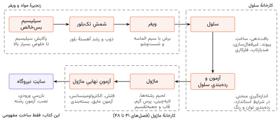
چرا زنجیره برای طراحِ نیروگاه مهم است. (۱) هر حلقه عیبهای خودش را دارد که در حلقههای بعد پنهان میشوند: ریزترکِ ویفر پس از پرس دیده نمیشود مگر با تصویربرداری (بخش 10.3.9). (۲) برگهٔ دادهٔ ماژول از سلولِ یک تأمینکننده است؛ اگر سازنده تأمینکنندهٔ سلول یا مادهٔ کپسولهکننده را عوض کند، گواهیِ صلاحیت ممکن است دیگر همان محصول را پوشش ندهد (بخش 10.3.18). (۳) برخی بازارها و قراردادها ردیابیِ منشأ را تا سیلیسیمِ خام میخواهند؛ اسنادِ زنجیرهٔ تأمین از ورودیهای خرید است (فصلهای ۳۹ و ۴۰).
مثال 10.16 (از ماژول به ویفر) پرسش. نیروگاهِ P ۱۰۹٬۲۰۰ ماژولِ ۱۴۴ نیمسلولی دارد. اگر بازدهِ تولیدِ خطِ سلول 98 % و خطِ ماژول 99.5 % باشد (A-207، فرضی)، چند ویفرِ کامل باید وارد خطِ سلول شود؟
پاسخ.
E28: 109,200 x 72 = 7,862,400 full cells; yields 98 % (cell) x 99.5 % (module)
-> 8,063,173 wafers into the cell line (200,773 lost)تفسیر. ۱۴۴ نیمسلول از ۷۲ ویفرِ کامل بریده میشوند. با دو درصد ضایعات، بیش از دویست هزار ویفر برای این نیروگاه ساخته و دور ریخته میشود؛ بازدهِ تولید هم هزینه است و هم نشانهٔ پایداریِ فرایند: خطی که ضایعاتش ناگهان بالا میرود احتمالاً عیبهایی هم بیرون میفرستد که آزمونِ پایانی آنها را نمیگیرد. وارسی: \(7\,862\,400/0.9751 = 8\,063\,173\) (درست).
خطای رایج. «سازندهٔ ماژول سلول را هم میسازد.» بسیاری از سازندگانِ ماژول سلول را میخرند و بسیاری از سازندگانِ سلول ویفر را؛ نامِ روی برچسب فقط مونتاژگرِ نهایی را نشان میدهد. برای ممیزیِ کارخانه (فصلِ ۴۰) باید معلوم باشد هر حلقه کجاست.
- هشت حلقهٔ زنجیرهٔ شکل 10.5 را به ترتیب نام ببرید.
- چرا عیبِ یک حلقه ممکن است در آزمونِ حلقهٔ بعد دیده نشود؟
- اگر سازنده تأمینکنندهٔ سلول را عوض کند، چه پرسشی دربارهٔ گواهی پیش میآید؟
- بازدهِ تولیدِ پایینتر علاوه بر هزینه چه نشانهای است؟
10.3.2 شمش و ویفر
ایده. سلولِ تکبلور به بلورِ بیمرزدانه نیاز دارد تا حاملها بدونِ برخورد با مرزِ دانهها به پیوند برسند. شمش با بیرونکشیدنِ آهستهٔ یک بذرِ تکبلور از سیلیسیمِ مذاب رشد میکند (روشِ چوخرالسکی، به انگلیسی Czochralski)؛ آلاینده (برای نوعِ p یا n) در مذاب است و غلظتش در طولِ شمش کمی تغییر میکند، پس مقاومتِ ویژه از سر تا تهِ شمش تغییر میکند. سیلیسیمِ چندبلور (ریختهگری در قالب) ارزانتر بود اما مرزِ دانهها بازده را کم میکرد و امروز سهمِ کمی دارد.
ویفر. شمش مربعیشکل (با گوشههای گرد) و با سیمِ الماسه به ورقههایی با ضخامتِ حدودِ صد و چند ده میکرومتر بریده میشود. ابعادِ ویفر در سالهای اخیر بزرگ شده است و ابعادِ ماژول و جریانش را تعیین میکند: ویفرِ بزرگتر یعنی جریانِ بیشتر برای هر سلول و، برای ماندن در حدِ جریانِ اینورتر و کابل، نیمسلول (بخش 10.3.7).
| ویژگیِ کنترلشده | چرا مهم است | چه چیزی را در سلول تغییر میدهد |
|---|---|---|
| ضخامت و تغییرِ آن | شکنندگی در دستگاهها؛ جذبِ نورِ بلندموج | بازدهِ تولید؛ جریان |
| مقاومتِ ویژه | غلظتِ آلاینده | ولتاژ و طولِ عمرِ حامل |
| طولِ عمرِ حاملِ اقلیت | ناخالصی و عیبِ بلور | ولتاژِ مدارِ باز |
| آسیبِ سطحی از برش | ترکهای میکروسکوپی | باید در گامِ نخستِ سلول برداشته شود |
| ابعاد و گوشهها | جایگیری در دستگاهها و ماژول | سطحِ فعال و جریان |
خطای رایج. «ویفرِ نازکتر همیشه ارزانتر است.» ویفرِ نازک سیلیسیمِ کمتری میخواهد اما در برش، جابهجایی و لحیمکاری بیشتر میشکند و ریزترک میگیرد؛ هزینهٔ واقعی با بازدهِ تولید و قابلیتِ اطمینان سنجیده میشود.
- چرا سلولِ تکبلور از چندبلور بهتر است؟
- چرا مقاومتِ ویژه در طولِ شمش تغییر میکند و این برای ردهبندیِ سلول چه پیامدی دارد؟
- بزرگتر شدنِ ویفر چه اثری بر جریانِ ماژول دارد؟
- آسیبِ سطحیِ برش چرا باید برداشته شود؟
10.3.3 ساختِ سلول در سطحِ مفهومی
ایده. ساختِ سلول ویفرِ خام را به یک پیوندِ pn با سطحهای غیرفعال، پوششِ ضدبازتاب و اتصالهای فلزی تبدیل میکند. گامها، در زبانِ عملکردی (چه چیزی ساخته میشود، نه چگونه):
- برداشتنِ آسیبِ برش و بافتدهی: سطح تمیز و ناهموار میشود تا نور کمتر بازتابد و مایلتر وارد شود (مثال 10.2).
- ساختِ پیوند: یک لایهٔ نازک با آلایشِ مخالفِ پایه روی سطح ساخته میشود؛ لبهها جدا میشوند تا جلو و پشت اتصالِ کوتاه نشوند.
- غیرفعالسازیِ سطحها: لایههای دیالکتریک یا لایههای ویژه پیوندهای ناقصِ سطح را میپوشانند و بازترکیبِ سطح را کم میکنند.
- پوششِ ضدبازتاب: لایهای با ضخامتِ کسری از طولِ موج که بازتاب را کم میکند و رنگِ آبیِ تیرهٔ سلول را میدهد.
- فلزکاری: انگشتیهای باریک و شینهها (یا بیشینه) روی جلو و اتصال در پشت چاپ یا لایهنشانی میشوند و با یک گامِ گرمایی به سیلیسیم میچسبند.
- پایدارسازی یا بازسازی: در برخی فناوریها یک گامِ نور یا جریان رفتارِ تخریبِ نوری را پیش از فروش تثبیت میکند (بخش 10.3.14).
- آزمون و ردهبندی: منحنیِ هر سلول زیرِ شبیهساز اندازهگیری و سلول بر پایهٔ بازده، جریان و رنگ ردهبندی میشود (بخش 10.3.5).
کنترلِ فرایند. هر گام یک یا چند ویژگیِ قابلِاندازهگیری دارد که با نمونهبرداریِ آماری پایش میشود: بازتابِ سطح پس از بافتدهی، مقاومتِ لایهٔ آلاییده، ضخامت و ضریبِ شکستِ پوشش، هندسهٔ انگشتیها، طولِ عمرِ حامل پس از غیرفعالسازی، و در پایان منحنیِ \(I\)–\(V\). نمودارهای کنترلِ آماری (فصلِ ۳، بخش 3.4.3؛ فصلِ ۴۱) رانشِ فرایند را پیش از آنکه سلولِ معیوب بسازد نشان میدهند. مرز: مقدارهای هدف و تنظیمها دانشِ فرایندِ کارخانهاند و در این کتاب نمیآیند.
خطِ ساختِ سلول با مواد و گازهای خطرناک، کورهها و لیزر کار میکند و ایمنیِ آن سامانهٔ مدیریتِ ایمنیِ ویژه، مجوزهای محیطِ زیستی و کارکنانِ آموزشدیده میخواهد. این بخش فقط برای فهمِ پیامدِ کیفیت است: خریدار و مهندسِ نیروگاه باید بدانند کدام گام بر کدام ویژگی و کدام خرابی اثر میگذارد تا ممیزی و پذیرش را درست بخواهند (فصلهای ۴۰ و ۴۱).
خطای رایج. «آزمونِ پایانیِ سلول همهچیز را میگیرد.» آزمونِ پایانی عملکردِ امروز را میسنجد، نه پایداریِ فردا را: چسبندگیِ ضعیفِ فلز، آلودگیِ سطح یا غیرفعالسازیِ ناپایدار ممکن است ماهها بعد در گرما و رطوبت آشکار شوند. پایداری را کنترلِ فرایند و آزمونهای شتابیافته تضمین میکنند.
- هفت گامِ مفهومیِ ساختِ سلول را به ترتیب نام ببرید.
- چرا لبههای سلول پس از ساختِ پیوند جدا میشوند؟
- برای هر یک از گامهای ۱، ۳ و ۵ یک ویژگیِ قابلِاندازهگیری نام ببرید.
- چرا آزمونِ پایانی پایداری را تضمین نمیکند؟
10.3.4 مقایسهٔ معماریهای سلول در سطحِ فرایند
ایده. فناوریهای جدول 10.4 در ترتیب و نوعِ گامها فرق دارند. مقایسه در سطحِ گامها نشان میدهد کجا ریسکِ کیفیت متفاوت است و خریدار در ممیزی چه چیزی را باید بپرسد.
مثال 10.17 (سه جریانِ فرایند در کنارِ هم) پرسش. جریانِ فرایندِ مفهومیِ PERC، TOPCon و HJT را گام به گام مقایسه کنید، تفاوتهای کلیدی را بیابید و برای هر یک یک ویژگیِ کنترلیِ حساس و یک پرسشِ ممیزی پیشنهاد کنید (سطحِ آموزشی، بیدستور).
پاسخ.
| گام | PERC (پایهٔ p) | TOPCon (پایهٔ n) | HJT (پایهٔ n) |
|---|---|---|---|
| بافتدهی | دارد | دارد | دارد (تمیزیِ سطح بسیار حساس) |
| ساختِ پیوندِ جلو | لایهٔ آلاییدهٔ نوعِ n | لایهٔ آلاییدهٔ نوعِ p | لایهٔ سیلیسیمِ بیشکلِ آلاییده |
| غیرفعالسازیِ پشت | لایهٔ دیالکتریک با روزنههای لیزری | اکسیدِ بسیار نازک + سیلیسیمِ آلاییده (اتصالِ غیرفعال) | لایههای بیشکلِ ذاتی و آلاییده |
| لایهٔ رسانای شفاف | ندارد | ندارد | دارد (هر دو رو) |
| فلزکاری | چاپ و گامِ گرمایی | چاپ و گامِ گرمایی | خمیرِ دمای پایین؛ گامِ گرماییِ ملایم |
| پایدارسازیِ تخریبِ نوری | معمولاً لازم | معمولاً لازم نیست | لازم نیست |
| ویژگیِ کنترلیِ حساس | کیفیتِ روزنههای پشت | یکنواختیِ لایهٔ نازکِ اکسید | تمیزیِ سطح و یکنواختیِ لایهها |
| پرسشِ ممیزی | پایدارسازیِ نوری چگونه پایش میشود؟ | ضخامتِ لایهها چگونه پایش میشود؟ | زمانِ مجاز میانِ گامها و انبارش چیست؟ |
تفسیر. سه نکته: (۱) TOPCon از نظرِ گامها به PERC نزدیک است و میتواند روی خطهای موجود با افزودنِ گام بسازد؛ ریسکِ تازهاش در لایههای بسیار نازک است. (۲) HJT فرایندِ دمای پایین دارد: گامِ گرماییِ شدید ندارد اما به تمیزیِ سطح و انبارشِ میانگامها بسیار حساس است و خمیرِ فلزِ ویژه میخواهد. (۳) پایهٔ نوعِ n تخریبِ نوریِ وابسته به بور را ندارد (بخش 10.3.14). پیامد برای خریدار: ممیزیِ کارخانه باید به گامهای ویژهٔ هر فناوری بپردازد، نه یک فهرستِ عمومی (فصلِ ۴۰). وارسی: همهٔ ردیفها کارکردیاند و هیچ مقدارِ تنظیمی ندارند.
خطای رایج. «فناوریِ تازهتر یعنی ریسکِ کمتر.» فناوریِ تازه بازدهِ بیشتر دارد اما سابقهٔ میدانیِ کوتاهتر؛ سازوکارهای تخریبِ تازه (مثلاً حساسیتِ برخی لایهها به رطوبت یا به پتانسیلِ زیاد) ممکن است پس از چند سال کشف شوند. شاهدِ میدانیِ چندساله و آزمونهای فراتر از حداقلِ گواهی (بخش 10.3.18) این ریسک را کم میکنند.
- تفاوتِ اصلیِ غیرفعالسازیِ پشت در PERC و TOPCon چیست؟
- چرا HJT خمیرِ فلزِ دمای پایین میخواهد؟
- کدام معماری به پایدارسازیِ تخریبِ نوری نیاز دارد و چرا؟
- یک پرسشِ ممیزی برای کارخانهٔ TOPCon بنویسید.
- چرا سابقهٔ میدانی در انتخابِ فناوری وزن دارد؟
10.3.5 آزمون و ردهبندیِ سلول
ایده. هر سلول در پایانِ خط زیرِ شبیهساز اندازهگیری و بر پایهٔ بازده (یا جریان در یک ولتاژِ مرجع)، رنگ (برای ظاهرِ یکنواختِ ماژول) و تصویرِ الکترولومینسانس (برای ترک و ناحیههای تاریک) در ردهها گذاشته میشود. ماژول از سلولهای یک رده ساخته میشود، چون در رشتهٔ سری ضعیفترین سلول جریان را تعیین میکند.
تصویرِ الکترولومینسانس. اگر به سلول یا ماژول جریانِ مستقیم (مانندِ یک دیود در جهتِ مستقیم) داده شود، ناحیههای سالم نورِ فروسرخِ ضعیفی گسیل میکنند که با دوربینِ حساس دیده میشود؛ ترکها، انگشتیهای قطع و ناحیههای پرعیب تاریک دیده میشوند. این همان روشی است که در کارخانهٔ ماژول، پیش و پس از پرس، و در بازرسیِ ورودی و پایشِ میدان به کار میرود (IEC TS 60904-13:2018).
خطای رایج. «سلولهای یک رده یکساناند.» یک رده پهنا دارد و دستگاهِ اندازهگیری عدمِ قطعیت دارد؛ ناهمسانیِ باقیمانده در ماژول کوچک است اما صفر نیست و با پیری بیشتر میشود (بخش 10.4.9).
- سلولها بر پایهٔ چه ویژگیهایی ردهبندی میشوند؟
- چرا ماژول از سلولهای یک رده ساخته میشود؟
- تصویرِ الکترولومینسانس چه عیبهایی را نشان میدهد که منحنیِ \(I\)–\(V\) نشان نمیدهد؟
10.3.6 ماژول بهصورتِ فهرستِ مواد
ایده. ماژول یک بستهٔ چندلایه است که باید سلولهای شکننده را بیستوپنج سال یا بیشتر از رطوبت، تنشِ مکانیکی، فرابنفش و ولتاژ حفظ کند و همزمان نور را بگذراند و جریان را بیرون دهد (شکل 10.6). هر لایه یک کارکرد دارد و هر کارکرد یک سازوکارِ خرابی وقتی ماده یا فرایند ضعیف باشد.
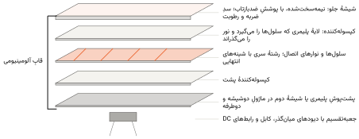
| جزء | کارکرد | مادهٔ رایج | سهمِ تقریبیِ جرم |
|---|---|---|---|
| شیشهٔ جلو | سدِ مکانیکی و رطوبت؛ گذرِ نور | شیشهٔ کمآهنِ نیمهسختشده با پوششِ ضدبازتاب | بیشترین سهم |
| کپسولهکننده (دو لایه) | نگهداشتنِ سلولها، چسباندنِ لایهها، گذرِ نور، عایق | پلیمرهای گرمانرم یا شبکهایشونده (کوپلیمرِ اتیلن–وینیلاستات، پلیاولفین) | کم |
| سلولها | تبدیلِ نور | سیلیسیم با فلزکاری | کم |
| نوارها و سیمهای اتصال | بردنِ جریان از سلول به سلول و به شینهها | مسِ روکشدار با لحیم | کم |
| پشتپوش یا شیشهٔ پشت | سدِ رطوبت و عایقِ پشت | ورقهٔ چندلایهٔ پلیمری؛ یا شیشه در ماژولِ دوشیشه | متوسط |
| قاب | سختی، نقطهٔ نصب، زمینکردن | آلومینیومِ آنودایزشده | قابلِتوجه |
| درزگیر و چسب | آببندیِ لبه، چسباندنِ قاب و جعبه | سیلیکون یا نوارِ چسب | کم |
| جعبهتقسیم | محفظهٔ اتصالها و دیودها | پلیمرِ مقاوم به فرابنفش، با درزگیری | کم |
| دیودهای میانگذر | محدودکردنِ گرما در سایه (بخش 10.3.15) | دیودِ شاتکی (معمولاً سه عدد) | کم |
| کابل و رابط | خروجِ DC تا رشته | کابلِ خورشیدیِ دوعایقه؛ رابطِ قفلشونده | کم |
پیوند با استانداردها. جعبهتقسیم، رابط و کابل هر کدام استانداردِ محصولِ خود را دارند (IEC 62790:2020، IEC 62852:2014+AMD1:2020 و IEC 62930:2017)؛ گواهیِ ایمنیِ ماژول (IEC 61730-1:2023) ترکیبِ آنها را در یک محصول میسنجد. پس فهرستِ موادِ گواهیشده بخشی از محصول است: تعویضِ کپسولهکننده یا پشتپوش بدونِ ارزیابیِ دوباره، محصولِ دیگری میسازد (بخش 10.3.18).
مثال 10.18 (جرم و حجمِ مواد در نیروگاهِ P) پرسش. با جرمِ 28 kg برای هر ماژول و سهمِ شیشهٔ حدودِ 70 %ِ جرم و قابِ حدودِ 10 % (A-207، فرضی)، جرمِ شیشه و آلومینیومِ نیروگاه را برآورد کنید. این عددها در کدام فصلها به کار میآیند؟
پاسخ. کلِ جرم \(109\,200 \times 28 = 3\,057\,600\ \text{kg}\)، یعنی حدودِ 3060 t؛ شیشه حدودِ \(0.7 \times 3060 = 2140\ \text{t}\) و آلومینیوم حدودِ 306 t.
تفسیر. این عددها ورودیِ سه کارند: حمل و بارگیری (۱۷۷ کانتینر، مثال 10.60)، ارزیابیِ چرخهٔ عمر و کربن (فصلِ ۳۳) و برنامهٔ پایانِ عمر و بازیافت (فصلِ ۵۳). شیشه و آلومینیوم بیشترِ جرماند و بازیافتشان سادهتر است؛ نقره، مس و سیلیسیمِ سلول جرمِ کمی دارند اما ارزشِ بازیافتشان بیشتر است. وارسی: \(0.7 + 0.1 = 0.8\)؛ بقیه کپسولهکننده، پشتپوش، سلول و جعبه (معقول).
- چهار کارکردِ کپسولهکننده را نام ببرید.
- چرا فهرستِ مواد بخشی از گواهی است؟
- کدام اجزا استانداردِ محصولِ جداگانه دارند؟
- جرمِ ماژولها در کدام سه کارِ پروژه به کار میآید؟
10.3.7 اتصالِ سلولها، شینهها و نیمسلول
ایده. جریانِ هر سلول از انگشتیهای نازک به شینهها (به انگلیسی busbars) و از آنجا با نوار یا سیمِ اتصال (به انگلیسی interconnect ribbon) به پشتِ سلولِ بعد میرود. هر چه نوارها بیشتر و نزدیکتر باشند، مسیرِ جریان در انگشتیها کوتاهتر است (چندشینهای)، اما سایهٔ بیشتری روی سلول میافتد. ماژولهای امروزی دو کارِ دیگر هم میکنند: سلولها را نصف میکنند و دو نیمهٔ ماژول را موازی میبندند (شکل 10.9).
چرا نیمسلول. تلفاتِ اتصال با \(I^2 R\) است. با نصف کردنِ سلول، جریانِ هر نیمسلول نصف و طولِ مسیر هم نصف میشود؛ تعدادِ نیمسلولها دو برابر است. پس تلفاتِ کل:
\[ \frac{P_\text{half}}{P_\text{full}} = \frac{144 \times (I/2)^2 \times (r/2)}{72 \times I^2 \times r} = \frac{1}{4} \tag{10.12}\]
با دو نیمهٔ موازی، ولتاژ و جریانِ ماژول همان ماژولِ ۷۲ سلولی است. سودِ دوم: سایهٔ لبهٔ پایینِ ماژولِ عمودی فقط نیمهٔ پایین را درگیر میکند و نیمهٔ بالا کار میکند.
مثال 10.19 (سودِ نیمسلول در PVM-550) پرسش. با مقاومتِ اتصالِ 0.8 mΩ برای هر سلولِ کامل (A-200، فرضی)، تلفاتِ اتصال را برای ۷۲ سلولِ کامل و ۱۴۴ نیمسلول در 13.11 A حساب کنید.
پاسخ.
interconnect loss, full cells against half-cut cells (A-200):
full cells: 72 x I^2 x r = 72 x 13.11^2 x 0.8 mohm = 9.9 W (1.80 %)
half cells: 144 x (I/2)^2 x (r/2) = 2.5 W (0.45 %)
ratio 0.25: each half carries half the current over
half the path; the two halves of the module run in parallel,
so the module keeps its voltage and current class
gain 7.4 W per module, about 811 kW over Plant P at STCتفسیر. حدودِ 7.4 W، یعنی 1.3 % توانِ بیشتر برای هر ماژول، از یک تغییرِ ساده در برش و چیدمان. هزینه: برشِ لیزری لبههای تازه میسازد که اگر خوب غیرفعال نشوند بازترکیب را زیاد میکنند، و شمارِ لحیمها دو برابر میشود: هر اتصالِ لحیم یک نقطهٔ ممکنِ خستگی در چرخههای گرمایی است (بخش 10.3.12). وارسی: \(72 \times 13.11^2 \times 0.0008 = 9.9\ \text{W}\) (درست).
خطای رایج. «نیمسلول جریانِ ماژول را نصف میکند.» جریانِ هر نیمسلول نصف است، اما دو نیمه موازیاند و جریانِ ماژول همان است. برای طراحِ رشته، ماژولِ نیمسلولی مانندِ ماژولِ ۷۲ سلولی رفتار میکند (PVM-550: \(N_\text{s} = 72\) در مدل).
- چرا شینههای بیشتر تلفاتِ انگشتیها را کم میکنند و چه هزینهای دارند؟
- معادلهٔ 10.12 را برای برشِ سلول به سه بخش (با سه گروهِ موازی) بنویسید.
- چرا ولتاژِ ماژولِ نیمسلولی با ماژولِ ۷۲ سلولیِ کامل یکی است؟
- دو هزینهٔ کیفیتیِ نیمسلول را نام ببرید.
10.3.8 انتخابِ مواد و پیامدهایش
ایده. هر ماده با یک تنش در میدان روبهروست و انتخابش یک سازوکارِ خرابی را کم یا زیاد میکند. جدولِ زیر نقشهٔ مفهومیِ این پیوندهاست؛ بخش 10.3.17 آن را به شاهدِ بازرسی میبرد.
| انتخاب | تنشِ اصلی | سازوکارِ خرابی اگر ضعیف باشد | نشانه در میدان |
|---|---|---|---|
| کپسولهکنندهٔ اتیلن–وینیلاستات در برابرِ پلیاولفین | گرما و رطوبت؛ ولتاژ | تولیدِ اسید و خوردگیِ فلزکاری؛ تخریبِ ناشی از پتانسیل | تیرگی، زرد شدن، افتِ توان |
| پشتپوشِ پلیمری در برابرِ شیشهٔ پشت | فرابنفشِ پشت، رطوبت، سایش | ترک و پودر شدنِ پشتپوش؛ افتِ عایق | خطای عایق، نشتیِ جریانِ زمین |
| ضخامتِ شیشه و قاب | برف، باد، جابهجایی | خمش و ریزترک | ناحیههای تاریک در تصویر |
| لحیم و نوار | چرخهٔ گرمایی | خستگی و قطعِ اتصال | افزایشِ مقاومتِ سری؛ نقطهٔ داغ |
| درزگیرِ لبه | رطوبت | نفوذِ رطوبت از لبه | خوردگیِ لبه، لایهلایه شدن |
| جعبهتقسیم و چسب | گرما، فرابنفش | جداشدن، نفوذِ آب، دیودِ داغ | قوس، آتش، دیودِ اتصالکوتاه |
| رابط | جفت شدن با رابطِ ناهمسان | مقاومتِ تماسِ زیاد | گرم شدن، قوس (بخش 10.4.13) |
ماژولِ دوشیشه. شیشه در پشت رطوبت را بهتر از پلیمر میگیرد و سلولها را در محورِ خنثیِ خمش میگذارد (تنشِ کمتر در خمش)، اما ماژول سنگینتر و شکستِ شیشه در حمل محتملتر است و لبهها باید خوب آببند باشند. انتخابِ میانِ آنها پرسشِ اقلیم، حمل و ضمانت است، نه برتریِ مطلق.
خطای رایج. «همهٔ ماژولهای یک توان و یک فناوری یکساناند.» دو ماژولِ 550 W با کپسولهکننده یا پشتپوشِ متفاوت در محیطِ گرم و مرطوب سرنوشتِ کاملاً متفاوتی دارند. فهرستِ مواد را در قرارداد ثابت کنید و تعویضش را منوط به تأیید و آزمونِ دوباره بگذارید.
- برای پشتپوشِ پلیمری دو سازوکارِ خرابی و نشانهٔ میدانیِ هر کدام را بنویسید.
- چرا ماژولِ دوشیشه در خمش بهتر است؟
- چرا ثابت کردنِ فهرستِ مواد در قرارداد مهم است؟
- کدام انتخابِ ماده بیشترین پیوند را با تخریبِ ناشی از پتانسیل دارد؟
10.3.9 خطِ مونتاژ و دروازههای کیفیت
ایده. کارخانهٔ ماژول سلولها را به محصولِ نهایی میرساند (شکل 10.7): بازرسیِ ورودیِ مواد؛ برشِ سلول به نیمسلول؛ لحیمِ رشتهها (سلولها با نوار به رشتههای سری)؛ چیدمانِ لایهها (شیشه، کپسولهکننده، رشتهها و شینهها، کپسولهکننده، پشتپوش)؛ پرسِ گرم (به انگلیسی lamination) که لایهها را زیرِ خلأ و گرما یکی میکند؛ لبهگیری، قاب و جعبهتقسیم؛ پخت و خنکسازی؛ آزمونها؛ برچسب و بستهبندی.
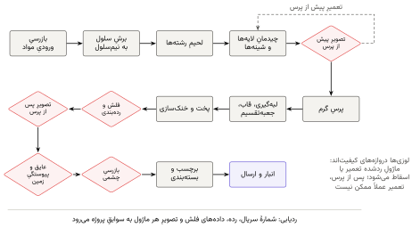
دروازههای کیفیت. یک دروازه نقطهای است که محصول فقط با معیارِ مشخص از آن میگذرد:
- بازرسیِ ورودی: گواهی و نمونهبرداریِ مواد با فهرستِ موادِ تأییدشده (بخش 10.3.10).
- تصویرِ پیش از پرس: الکترولومینسانس یا بازرسیِ نوری برای ترک، لحیمِ ناقص، فاصلهٔ نادرست؛ تعمیر هنوز ممکن است.
- پس از پرس: درجهٔ شبکهای شدنِ کپسولهکننده (با نمونهبرداری)، حباب و جابهجاییِ سلول؛ تعمیر عملاً ممکن نیست.
- فلش و ردهبندی: منحنیِ هر ماژول، برچسبِ توان (بخش 10.2.15).
- تصویرِ پس از پرس: عیبهایی که پرس ساخته است.
- آزمونِ عایق و پیوستگیِ زمین: ایمنیِ هر ماژول.
- بازرسیِ چشمی و بستهبندی: ظاهر، برچسب، تطابقِ سریال با دادهها.
ردیابی. هر ماژول یک شمارهٔ سریال دارد که دادههای فلش، تصویرها، رده و دستهٔ مواد را به آن پیوند میدهد. خریدار باید این دادهها را برای هر ماژول بخواهد و نگه دارد (مثال 10.60): در ادعای ضمانت یا کشفِ یک عیبِ سری، تنها راهِ یافتنِ ماژولهای همدسته همین است.
کنترلِ فرایند در برابرِ آزمونِ پایانی. دروازهها عیبهای دیدنی را میگیرند. اما چسبندگیِ ضعیفِ کپسولهکننده یا لحیمِ سرد امروز دیده نمیشوند و سالها بعد در چرخهٔ گرما و رطوبت آشکار میشوند. اینها را کنترلِ فرایند (پایشِ آماریِ پارامترهای پرس، نیروی لحیم، آزمونِ دورهای چسبندگی) تضمین میکند، و آزمونهای شتابیافتهٔ دورهای روی نمونههای تولید (فصلهای ۴۰ و ۴۱).
- چرا تصویرِ پیش از پرس ارزشِ ویژه دارد؟
- کدام دروازه ایمنیِ برقیِ ماژول را میسنجد؟
- ردیابی در یک ادعای ضمانتِ سری چه کمکی میکند؟
- دو عیب را نام ببرید که دروازهها نمیگیرند و بگویید چه چیزی آنها را مهار میکند.
10.3.10 نمونهبرداری و پذیرشِ محموله
ایده. بازرسیِ صددرصدِ همهٔ ویژگیها گران یا ناممکن است (برخی آزمونها ویرانگرند). پس از هر محموله یک نمونه با اندازهٔ \(n\) بازرسی میشود و اگر شمارِ معیوبها از عددِ پذیرش \(c\) بیشتر نباشد، محموله پذیرفته میشود. احتمالِ پذیرشِ محمولهای که سهمِ \(p\) معیوب دارد، با فرضِ نمونهٔ تصادفی، از توزیعِ دوجملهای (فصلِ ۳، بخش 3.4.2) است:
\[ P_\text{a}(p) = \sum_{k=0}^{c} \binom{n}{k} p^{k} (1 - p)^{n-k} \tag{10.13}\]
نمودارِ \(P_\text{a}\) بر حسبِ \(p\) منحنیِ مشخصهٔ عملکرد (به انگلیسی operating characteristic) است. استانداردهای نمونهبرداریِ وصفی، مانندِ ISO 2859-1:2026، طرحها را بر پایهٔ حدِ کیفیتِ پذیرش و اندازهٔ محموله جدول کردهاند؛ این کتاب جدولها را نقل نمیکند و فقط سازوکار را میسازد.
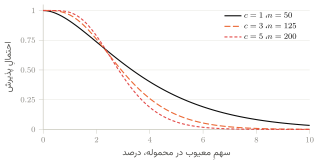
مثال 10.20 (سه طرحِ نمونهبرداری) پرسش. برای سه طرحِ آموزشی (\(n = 50, c = 1\)؛ \(n = 125, c = 3\)؛ \(n = 200, c = 5\)، A-201) احتمالِ پذیرشِ محمولههایی با 0.2 تا 8 % معیوب را حساب کنید.
پاسخ.
acceptance sampling by attributes: probability of accepting
a lot against its true share of defective modules (A-201):
defect % n 50, c 1 n 125, c 3 n 200, c 5
0.2 0.995 1.000 1.000
0.5 0.974 0.996 0.999
1.0 0.911 0.963 0.984
2.0 0.736 0.759 0.787
3.0 0.555 0.481 0.443
5.0 0.279 0.124 0.062
8.0 0.083 0.008 0.001
a larger sample separates good and bad lots more sharply;
no plan proves a lot free of defects: the contract names
the plan, the acceptance number and what happens to a
rejected lot (sorting, return, claim)تفسیر. طرحِ کوچک محمولهای با 2 % معیوب را 74 % وقتها میپذیرد و محمولهای با 5 % را هنوز 28 %؛ طرحِ بزرگتر منحنیِ تندتری دارد و محمولههای خوب و بد را بهتر جدا میکند. دو ریسک همیشه هست: ریسکِ تولیدکننده (ردِ محمولهٔ خوب) و ریسکِ مصرفکننده (پذیرشِ محمولهٔ بد). قرارداد طرح، عددِ پذیرش و سرنوشتِ محمولهٔ ردشده (جداسازیِ صددرصد، بازگشت، ادعا) را تعیین میکند. وارسی: برای \(n = 50\)، \(c = 1\) و \(p = 0.02\): \(0.98^{50} = 0.364\) و \(50 \times 0.02 \times 0.98^{49} = 0.372\)؛ جمع 0.736 (درست).
خطای رایج. «نمونهٔ ۵۰ تایی بیعیب بود، پس محموله بیعیب است.» با \(n = 50\)، محمولهای با 1 % معیوب در 60 % موارد هیچ معیوبی در نمونه نشان نمیدهد (\(0.99^{50} = 0.605\)). نمونهبرداری احتمال میدهد، نه اثبات.
- با معادلهٔ 10.13، \(P_\text{a}\) را برای \(n = 20\)، \(c = 0\) و \(p = 5\ \%\) حساب کنید.
- ریسکِ تولیدکننده و مصرفکننده را با مثالِ ماژول توضیح دهید.
- چرا طرحِ بزرگتر منحنیِ تندتری دارد؟
- چرا آزمونهای ویرانگر فقط با نمونه ممکناند؟
- سرنوشتِ محمولهٔ ردشده را چه سندی تعیین میکند؟
10.3.11 بستهبندی، حمل و آسیبِ پنهان
ایده. ماژول در پالتهای عمودی یا افقی بسته و با کامیون، کشتی و دوباره کامیون حمل میشود. لرزش و ضربهها ریزترک میسازند که با چشم دیده نمیشوند و توانِ امروز را هم کم نمیکنند، اما در چرخههای گرمایی و بارِ برف و باد گسترش مییابند و ناحیههای سلول را جدا میکنند (بخش 10.3.16). IEC 62759-1:2022 روشِ شبیهسازیِ حملِ بستههای کاملِ ماژول و آزمونهای محیطیِ پس از آن را میدهد؛ آزمونِ بستهبندی در طراحیِ محصول است، نه در هر محموله.
بازرسیِ دریافت. در ساختگاه: پلمب و نشانگرهای ضربهٔ کانتینر، آسیبِ پالت، تطابقِ سریالها با فهرستِ بستهبندی، ماژولهای شکسته، و تصویرِ الکترولومینسانس روی نمونه برای ریزترک (مثال 10.60). پالتِ آسیبدیده پیش از باز شدن عکاسی و قرنطینه میشود؛ بیمه و ادعای حمل به همین شاهد وابسته است (فصلِ ۳۱).
جابهجایی در ساختگاه. راه رفتن روی ماژول، نگهداشتنِ ماژول از جعبهتقسیم یا کابل، خم کردنِ ماژول هنگامِ نصب و گذاشتنِ ماژول روی سنگ و خاک، همه ریزترک یا آسیبِ پشتپوش میسازند. دستورالعملِ نصبِ سازنده بخشی از شرطِ ضمانت است و پیمانکار باید آموزشش را ثبت کند (فصلِ ۴۹).
- چرا ریزترکِ حمل امروز توان را کم نمیکند اما خطرناک است؟
- سه شاهدِ بازرسیِ دریافتِ کانتینر را نام ببرید.
- چرا پالتِ آسیبدیده پیش از باز شدن عکاسی میشود؟
- سه خطای رایجِ جابهجایی در ساختگاه را بنویسید.
10.3.12 عیبها و سازوکارهای خرابی
ایده. هر خرابیِ ماژول در میدان سه بخش دارد: یک ریشه (ماده، طراحی، فرایندِ کارخانه، حمل یا نصب)، یک تنشِ میدانی که آن را فعال میکند (گرما، رطوبت، فرابنفش، ولتاژ، بارِ مکانیکی، چرخهٔ گرمایی)، و یک نشانه که با ابزاری دیده میشود. فهمِ این سه برای دو کار لازم است: پیشگیری (انتخابِ ماده و کنترلِ فرایند) و تشخیص (بازرسی و پایش).
| سازوکار | ریشهٔ رایج | تنشِ فعالکننده | ابزارِ تشخیص | زمانِ معمولِ ظهور |
|---|---|---|---|---|
| ریزترک و ترکِ سلول | ویفرِ نازک، لحیم، حمل، نصب | بارِ برف و باد، چرخهٔ گرمایی | تصویرِ الکترولومینسانس | از حمل تا سالها بعد |
| لایهلایه شدن | چسبندگیِ ضعیف، پرسِ ناقص، آلودگی | گرما و رطوبت، فرابنفش | دیداری، عکسِ نزدیک | سالها |
| خوردگیِ فلزکاری و نوار | رطوبت، اسیدِ کپسولهکننده | گرما و رطوبت | افزایشِ \(R_\text{s}\)، تصویر | سالها |
| نقطهٔ داغ | سایه، ترک، لحیمِ بد، سلولِ نشتی | جریانِ رشته در سلولِ ضعیف | تصویرِ گرمایی | هر زمان |
| نفوذِ رطوبت | درزگیرِ لبه، پشتپوشِ ترکخورده | باران، شبنم، رطوبت | آزمونِ عایق، نشتیِ زمین | سالها |
| تخریبِ ناشی از پتانسیل | مواد و طراحیِ حساس | ولتاژ نسبت به قاب، رطوبت، گرما | منحنیِ \(I\)–\(V\)، تصویر | ماهها تا سالها |
| تخریبِ نوری | نوعِ ویفر و آلاینده | نور (و گرما) | منحنیِ \(I\)–\(V\) | ساعتها تا سالها |
| ترکِ پشتپوش | پلیمرِ ضعیف در برابرِ فرابنفش | فرابنفشِ پشت، سایش، گرما | دیداری، آزمونِ عایق | چند تا ده سال |
| خرابیِ جعبهتقسیم و دیود | چسب، اتصال، دیودِ کمرده | گرما، اضافهولتاژِ صاعقه | تصویرِ گرمایی، منحنی | هر زمان |
| شکستِ شیشه | ضربه، تنشِ نصب، تگرگ | بارِ مکانیکی، ضربه | دیداری | هر زمان |
منحنیِ وان. آهنگِ خرابی در طولِ عمر شکلِ وان دارد (فصلِ ۳، بخش 3.4.17): خرابیهای زودرس (عیبِ ساخت و حمل، در ماههای نخست)، خرابیهای تصادفی (تگرگ، صاعقه)، و خرابیهای فرسایشی (پشتپوش، کپسولهکننده، خوردگی، پس از سالها). آزمونهای تأییدِ صلاحیت بیشتر خرابیهای زودرس را غربال میکنند؛ خرابیهای فرسایشی را فقط آزمونهای طولانیتر و شاهدِ میدانی نشان میدهند (بخش 10.3.18).
مرزِ مسئولیت. ریشهٔ هر خرابی به یکی از سه طرف برمیگردد: کارخانهٔ سلول (ویفر، فرایند)، کارخانهٔ ماژول (مواد، لحیم، پرس، دروازهها) یا ساختگاه (حمل، نصب، سایه، شستوشو). بخش 10.3.19 این مرزها را برای ادعای ضمانت جدا میکند.
- سه بخشِ هر خرابی کداماند؟ برای «خوردگیِ نوار» هر سه را بنویسید.
- کدام سازوکارها با تصویرِ الکترولومینسانس و کدام با تصویرِ گرمایی بهتر دیده میشوند؟
- منحنیِ وان را با سه نمونه از جدول 10.10 توضیح دهید.
- ترکِ پشتپوش ریشه در کدام طرف دارد و با کدام آزمون دیده میشود؟
10.3.13 تخریبِ ناشی از پتانسیل
ایده. در رشتهای با ولتاژِ نزدیکِ 1500 V، سلولهای یک سرِ رشته صدها ولت نسبت به قابِ زمینشده اختلافِ پتانسیل دارند. این میدان از شیشه و کپسولهکننده میگذرد و در گرما و رطوبت یونها را به سوی سلول میراند؛ در برخی فناوریها مسیرهای نشتی (کاهشِ \(R_\text{sh}\)) و در برخی دیگر بارِ سطحی و افتِ غیرفعالسازی میسازد. اثر در ماژولهای نزدیکِ قطبی که بیشترین اختلاف را دارد بیشتر است و توانِ آنها را میتواند در چند ماه بهشدت کم کند.
پتانسیلِ ماژولها. فصلِ ۹ (مثال 9.43) نشان داد: در آرایهٔ شناور، پتانسیلها حدودِ \(\pm V/2\) است؛ با زمینکردنِ قطبِ منفی، همهٔ ماژولها نسبت به زمین مثبتاند. اینکه کدام علامتِ پتانسیل برای یک ماژول خطرناک است به فناوری و ساختِ آن بستگی دارد، پس تصمیمِ زمینکردن باید با گزارشِ آزمونِ تخریبِ ناشی از پتانسیل در هر دو قطبیت گرفته شود.
آزمون و پیشگیری. روشهای آزمونِ تخریبِ ناشی از پتانسیل در IEC TS 62804-1:2025 آمدهاند (روشهای تاریک برای نشتی و روشهای با فرابنفش برای قطبش)؛ ویرایشِ تازهٔ IEC 61215-2:2021 هم یک آزمونِ تخریبِ ناشی از پتانسیل در توالیِ تأییدِ صلاحیت دارد. پیشگیری: موادِ مقاوم (کپسولهکننده و شیشهٔ مناسب)، زمینکردنِ کارکردیِ یک قطب، یا ولتاژِ جبرانیِ شبانه (بخش 9.4.15 و بخش 10.4.17).
مثال 10.21 (کدام ماژولها در خطرند؟) پرسش. در رشتهٔ ۲۶ ماژولیِ نیروگاهِ P در ولتاژِ مدارِ بازِ سرد (1436 V، مثال 10.29)، پتانسیلِ ماژولِ اول و آخر را نسبت به زمین برای آرایهٔ شناور و قطبِ منفیِ زمینشده بیابید. اگر ماژول به پتانسیلِ منفی حساس باشد، کدام چیدمان بهتر است؟
پاسخ. شناور: ماژولِ سمتِ منفی حدودِ \(-1436/2 = -718\ \text{V}\) و سمتِ مثبت \(+718\ \text{V}\). قطبِ منفیِ زمینشده: از حدودِ صفر تا \(+1436\ \text{V}\). برای ماژولِ حساس به پتانسیلِ منفی، زمینکردنِ قطبِ منفی همهٔ ماژولها را از ناحیهٔ خطرناک بیرون میبرد.
تفسیر. این تصمیم سه پیامد دارد که باید با هم سنجیده شوند: (۱) سازگاریِ اینورتر با زمینکردنِ کارکردی و پایشِ عایق؛ (۲) تغییرِ رفتارِ خطای زمین و حفاظت (فصلِ ۶)؛ (۳) شاهدِ سازندهٔ ماژول برای همان قطبیت. اگر ماژولِ انتخابی به هیچ قطبیتی حساس نباشد (گزارشِ آزمون)، آرایهٔ شناور با پایشِ عایق سادهتر است. وارسی: با ولتاژِ کارِ گرم (965 V، مثال 10.58) پتانسیلها کمتر و خطر کمتر است؛ بدترین حالت ولتاژِ زیادِ صبحهای سرد و مرطوب است.
خطای رایج. «ماژولِ نوعِ n از تخریبِ ناشی از پتانسیل در امان است.» سازوکار و قطبیتِ حساس فرق میکند اما حساسیت میتواند وجود داشته باشد؛ شاهد گزارشِ آزمون است، نه نامِ فناوری.
- چرا ماژولهای نزدیکِ یک قطب بیشتر آسیب میبینند؟
- سه تنشی که این تخریب را تند میکنند کداماند؟
- چرا تصمیمِ زمینکردن به گزارشِ آزمونِ ماژول وابسته است؟
- ولتاژِ جبرانیِ شبانه چه میکند؟
10.3.14 تخریبِ نوری و گرمایی–نوری
ایده. برخی سلولها در نخستین ساعتها یا روزهای نوردهی چند درصد توان از دست میدهند و سپس پایدار میشوند: تخریبِ نوری (به انگلیسی light-induced degradation)، که در ویفرهای نوعِ p با آلایندهٔ بور با پیوندِ بور و اکسیژن شناخته میشود. نوعِ دیگری، تخریبِ نوری در دمای بالا (به انگلیسی LeTID)، آهستهتر است، در ماهها تا چند سال رخ میدهد و بخشی از آن بعداً برمیگردد؛ در سلولهای PERC گزارش شده است. برخی سلولهای نوعِ n حساسیت به فرابنفش نشان دادهاند. ویفرِ نوعِ p با آلایندهٔ گالیم و ویفرِ نوعِ n تخریبِ بور–اکسیژن را ندارند.
پیامد برای پذیرش. فلشِ کارخانه معمولاً پیش از پایدارسازی است. اگر ماژولی 2 % تخریبِ نوری داشته باشد، اندازهگیریِ آزمایشگاهی پس از نوردهی 2 % کمتر از برچسب خواهد بود بیآنکه عیبی در کار باشد. پس روشِ اندازهگیریِ پذیرش باید پایدارسازی را مشخص کند (روشِ آن در سریِ IEC 61215 آمده است) و ضمانتِ سالِ اول معمولاً همین افت را میپوشاند (بخش 10.3.22).
مثال 10.22 (سهمِ تخریبِ نوری در ضمانتِ سالِ اول) پرسش. ضمانتِ توانِ PVM-550 برای سالِ اول 98 % است (A-189). اگر ماژولی 1.5 % تخریبِ نوری و 0.4 % تخریبِ عادی در سالِ اول داشته باشد و فلشِ کارخانهاش 552 W بوده باشد، توانِ پایانِ سالِ اول را با کفِ ضمانت مقایسه کنید.
پاسخ. \(552 \times (1 - 0.015) \times (1 - 0.004) = 541.5\ \text{W}\)؛ کفِ ضمانت \(0.98 \times 550 = 539.0\ \text{W}\).
تفسیر. ماژول 2.5 W بالای کف است؛ اما با عدمِ قطعیتِ اندازهگیریِ میدانیِ چند درصد (بخش 10.6.1)، چنین اختلافی را نمیتوان با یک اندازهگیری به ادعا تبدیل کرد. وارسی: \(552 \times 0.985 = 543.7\)؛ \(543.7 \times 0.996 = 541.5\) (درست).
- تخریبِ نوری و تخریبِ نوری در دمای بالا در زمان و برگشتپذیری چه فرقی دارند؟
- چرا فلشِ پیش از پایدارسازی برای پذیرش دام است؟
- کدام ویفرها تخریبِ بور–اکسیژن ندارند؟
10.3.15 نقطهٔ داغ و دیودِ میانگذر
ایده. در رشتهٔ سری همهٔ سلولها یک جریان دارند. اگر یک سلول سایه بخورد، جریانِ نوریاش کم میشود؛ اما رشته جریانِ سلولهای سالم را از آن میگذراند. سلولِ سایهخورده برای عبورِ این جریان به ولتاژِ منفی (بایاسِ معکوس) رانده میشود و بهجای تولید، مصرف میکند: توانِ \(|V_\text{cell}|\,I\) روی چند صد سانتیمترمربع گرما میشود. این نقطهٔ داغ (به انگلیسی hot spot) است که کپسولهکننده و پشتپوش را میسوزاند و میتواند آتش بسازد.
دیودِ میانگذر. ماژول به سه زیررشته (هر کدام ۲۴ سلولِ همارز) تقسیم شده و هر زیررشته یک دیود در جعبهتقسیم دارد (شکل 10.9). اگر ولتاژِ زیررشته از حدودِ \(-0.6\ \text{V}\) منفیتر شود، دیود هدایت میکند و جریانِ رشته را از کنارِ زیررشته میگذراند. پس ولتاژِ معکوسِ سلولِ سایهخورده حداکثر به اندازهٔ مجموعِ ولتاژِ مستقیمِ ۲۳ سلولِ دیگر (بهعلاوهٔ افتِ دیود) است.
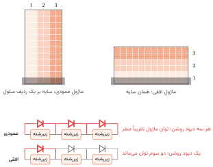
مدلِ سلول در بایاسِ معکوس. مدلِ تکدیودی ناحیهٔ منفی را ندارد. مدلِ بیشاپ (به انگلیسی Bishop) یک جریانِ نشتیِ وابسته به ولتاژ میافزاید که نزدیکِ ولتاژِ شکستِ بهمنی \(V_\text{br}\) تند بالا میرود:
\[ I = I_\text{L} - \frac{V}{R_\text{sh}}\left[1 + a_\text{br}\left(1 - \frac{V}{V_\text{br}}\right)^{-m}\right] \quad (V < 0) \tag{10.14}\]
برای هر سلول در مدلِ همراه، پارامترهای ماژول بر ۷۲ تقسیم میشوند و مقاومتِ موازیِ هر سلول جدا گذاشته میشود (A-188)؛ سلولِ «نشتی» (\(R_\text{sh}\)ِ کوچک) و «سخت» (\(R_\text{sh}\)ِ بزرگ، \(V_\text{br}\)ِ منفیتر) رفتارِ بسیار متفاوتی دارند:
def cell_sdm(frac_light: float = 1.0, r_sh: float = 10.0) -> pc.SDM:
"""One cell of the PVM-550 (module parameters / 72; shunt 10 ohm per
cell, A-188), photocurrent scaled by the share of light it receives."""
m = pvyear10.ref_sdm()
return pc.SDM(m.i_l * frac_light, m.i_0, m.a / N_CELL,
m.r_s / N_CELL, r_sh)
def cell_voltage(c: pc.SDM, i: float, v_br: float = -15.0) -> float:
"""Voltage of a cell at current i: forward from the model, reverse
(i above the photocurrent) from the breakdown model, clamped at
the breakdown voltage."""
if i <= c.i_l:
return float(c.v(i))
f = lambda v: float(pc.cell_reverse_current(v, c.i_l, c.r_sh, v_br)) - i
lo = v_br * 0.99999
return v_br if f(lo) < 0 else brentq(f, lo, 0.0)
def substring_voltage(cells: list, i: float, bypass: bool = True) -> float:
"""Sum of the cell voltages, clamped by the bypass diode at -V_BYP."""
v = sum(cell_voltage(c, i) for c in cells)
return max(v, -V_BYP) if bypass else vمثال 10.23 (سه سلولِ سایهخورده) پرسش. در زیررشتهٔ ۲۴ سلولی با جریانِ رشتهٔ 12.5 A، یک سلول 20 % نور میگیرد. برای سه نوع سلول (A-188) ولتاژِ لازمِ سلول، ولتاژِ زیررشته، وضعِ دیود و گرمای سلول را بیابید. بیدیود چه میشد؟
پاسخ.
one cell at 20 % light in a 24-cell substring, string current 12.5 A (A-188):
cell (shunt, breakdown) cell V needed substring V bypass heat
10 ohm, -15 V -10.45 V 3.50 V off 131 W
100 ohm, -15 V -12.51 V 1.47 V off 156 W
300 ohm, -25 V -21.43 V -7.46 V on (3.1 A) 51 W
a leaky cell carries the string current at a modest reverse
voltage, the diode never turns on and the cell takes over
130 W; a hard cell would need more than the other 23 cells
give, so the diode conducts and limits the cell to about the
substring voltage at a smaller current: tens of watts on
0.0179 m2, still a hot spot that thermal imaging finds;
without the diode that cell would take 268 Wتفسیر. نتیجهٔ شگفت: دیود همیشه نجات نمیدهد. سلولِ نشتی جریانِ رشته را با ولتاژِ معکوسِ کمتر از مجموعِ ولتاژِ ۲۳ سلولِ دیگر عبور میدهد، زیررشته هنوز مثبت است و دیود خاموش میماند؛ همهٔ 131 W در همان سلول گرما میشود. سلولِ سخت ولتاژِ بیشتری میخواهد، زیررشته منفی میشود، دیود روشن میشود و جریانِ سلول به 3.1 A میرسد: 51 W، هنوز نقطهٔ داغ. بیدیود، 268 W روی یک سلول یعنی آسیبِ قطعی. وارسی: \(10.45 \times 12.5 = 130.6\ \text{W}\) (درست). مدل ماژول را ۷۲ سلولِ کاملِ همارز میگیرد؛ در ماژولِ نیمسلولی جریانِ هر نیمه نصف و سطحِ هر نیمسلول هم نصف است و چگالیِ گرما در همین مرتبه میماند.
پیامد برای میدان. (۱) سایهٔ پایدار (تیر، کابل، علف، فضلهٔ پرنده، گرد و غبارِ لبه) را باید حذف کرد؛ دیود چارهٔ کامل نیست. (۲) تصویربرداریِ گرمایی (IEC TS 62446-3:2017) نقطههای داغ را در بازرسیِ ساختگاه و بهرهبرداری پیدا میکند (فصلهای ۵۰ و ۵۲). (۳) آزمونِ تحملِ نقطهٔ داغ و آزمونِ گرماییِ دیودِ میانگذر در توالیِ تأییدِ صلاحیتاند (بخش 10.3.18).
خطای رایج. «سایهٔ کوچک اثرِ کوچک دارد.» سایهٔ یک سلول میتواند یکسومِ ماژول (یک زیررشته) را با دیود از مدار خارج کند یا بدونِ روشن شدنِ دیود یک نقطهٔ صدواتی بسازد؛ اثر نه با سطحِ سایه، بلکه با جای آن تعیین میشود.
- چرا سلولِ سایهخورده به ولتاژِ منفی رانده میشود؟
- دیودِ میانگذر کی روشن میشود؟ با جملهٔ «مجموعِ ولتاژِ ۲۳ سلولِ دیگر» توضیح دهید.
- چرا سلولِ نشتی گرمای بیشتری از سلولِ سخت در مثال 10.23 دارد؟
- چه ابزاری نقطهٔ داغ را در میدان پیدا میکند؟
- سه منبعِ سایهٔ پایدار در نیروگاهِ زمینی را نام ببرید.
10.3.16 ترکِ سلول و توانِ ماژول
ایده. ترکی که بخشی از سلول را از شبکهٔ فلزی جدا کند، آن بخش را غیرفعال میکند: جریانِ نوریِ سلول با سطحِ فعالش کم میشود. چون سلول در زیررشتهٔ سری است، جریانِ کلِ زیررشته (و بدونِ دیود، کلِ رشته) به آن محدود میشود؛ ترکِ بزرگتر سلول را مانندِ سلولِ سایهخورده به بایاسِ معکوس میبرد.
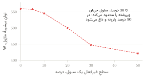
مثال 10.24 (یک سلول، شش اندازهٔ ترک) پرسش. با مدلِ سلولِ مثال 10.23، توانِ بیشینهٔ ماژول را وقتی یک سلول 0 تا 50 % سطحِ فعالش را از دست بدهد بیابید و وضعِ سلولِ ترکخورده را در نقطهٔ بیشینه گزارش کنید.
پاسخ.
module power with one cell losing active area (crack, A-188):
inactive % module P_mp W loss % cracked cell at MPP
0 559.7 0.0 +0.58 V, producing
5 558.2 0.3 +0.52 V, producing
10 545.4 2.6 +0.47 V, producing
20 500.4 10.6 +0.51 V, producing
30 447.3 20.1 +0.50 V, producing
50 421.5 24.7 -9.84 V, heat 129 W
a small crack costs its share of current in the whole series
substring; a larger one drives the cracked cell into reverse:
the module keeps most of its power but that one cell becomes
a hot spot (with a soft cell the bypass diode stays off)تفسیر. تا 10 % اثر کوچک است. از 20 تا 30 %، ردیاب نقطهٔ بیشینه را در جریانِ کمترِ سلولِ ترکخورده میگذارد و ماژول 10 تا 20 % میبازد، اما سلول هنوز تولید میکند. در 50 % ردیاب جریانِ بیشتری را ترجیح میدهد: سلول به −9.84 V رانده میشود، زیررشته تقریباً هیچ ولتاژی نمیدهد (دیود خاموش میماند چون سلول نشتی است) و سلول 129 W گرما میکند: افتِ توان «فقط» 25 % است اما یک نقطهٔ داغ ساخته شده است. وارسی: \(1 - 421.5/559.7 = 24.7\ \%\) (درست). مقدارِ پایه (559.7 W) با مدلِ سلول به سلول کمی بیش از برچسب است چون مقاومتِ موازیِ هر سلول در این مدل بزرگتر از سهمِ ماژول گذاشته شده است (A-188).
خطای رایج. «ترکهای تصویرِ الکترولومینسانس که توان را کم نکردهاند بیخطرند.» ترکِ امروز که هنوز ناحیهای را جدا نکرده، در چرخههای گرمایی و بارِ برف و باد باز میشود؛ پس پذیرشِ ماژول با ترک نه با منحنیِ \(I\)–\(V\) بلکه با معیارِ تصویرِ قرارداد تصمیمگیری میشود (مثال 10.60).
- چرا ترکِ یک سلول جریانِ کلِ زیررشته را محدود میکند؟
- در شکل 10.10، چرا شیبِ افت پس از 30 % کم میشود؟
- چرا ترکِ بیاثرِ امروز ممکن است فردا مهم شود؟
- ترکها در کدام حلقههای زنجیره ساخته میشوند؟
10.3.17 از فهرستِ مواد تا شاهدِ بازرسی
ایده. مثالِ کارشدهٔ دومِ این فصل همهٔ آنچه را آمد به یک ابزارِ پذیرش تبدیل میکند: برای هر جزءِ فهرستِ مواد، سازوکارهای محتمل و شاهدی که در بازرسیِ ورودی یا بعدتر آن را نشان میدهد.
مثال 10.25 (نقشهٔ جزء، خرابی و شاهد) پرسش. برای اجزای جدول 10.8، سازوکارهای محتمل (جدول 10.10) و شاهدِ بازرسیِ ورودی را بنویسید. کدام شاهد در کارخانه، کدام در ساختگاه و کدام فقط در بهرهبرداری به دست میآید؟
پاسخ.
| جزء | سازوکارِ محتمل | شاهد پیش از حمل (کارخانه) | شاهد در دریافت (ساختگاه) | شاهدِ بعدی |
|---|---|---|---|---|
| سلول | ریزترک، تخریبِ نوری | تصویرِ پس از پرس هر ماژول؛ رده | تصویرِ نمونه پس از حمل | پایشِ رشته؛ تصویرِ دورهای |
| نوار و لحیم | خستگی، خوردگی | کنترلِ فرایندِ لحیم؛ آزمونِ کشش (نمونه) | منحنیِ نمونه (\(R_\text{s}\)) | تصویرِ گرمایی |
| کپسولهکننده | لایهلایه شدن، اسید، پتانسیل | گواهیِ دسته؛ درجهٔ شبکهای شدن (نمونه)؛ گزارشِ آزمونِ پتانسیل | تطابقِ دسته با فهرستِ مواد | دیداری؛ منحنی |
| پشتپوش یا شیشهٔ پشت | ترک، افتِ عایق | گواهیِ ماده و تطابق با گواهیِ ماژول | دیداری؛ آزمونِ عایقِ نمونه | آزمونِ عایقِ رشتهها |
| شیشهٔ جلو | شکست، فرسایشِ پوشش | گواهیِ شیشه | دیداریِ صددرصد | بازدهِ شستوشو (بخش 10.5.3) |
| قاب و چسب | جداشدن، خوردگی | آزمونِ چسبندگی (نمونه) | دیداری؛ پیوستگیِ زمین | بازدید |
| جعبهتقسیم و دیود | جداشدن، دیودِ معیوب | آزمونِ دیود؛ گواهیِ جعبه | دیداری؛ منحنیِ نمونه | تصویرِ گرمایی |
| کابل و رابط | ناهمسانیِ رابط، آسیبِ عایق | نوعِ رابط و گواهی | تطابقِ نوعِ رابط با رابطهای میدان | تصویرِ گرمایی اتصالها |
| بستهبندی | آسیبِ حمل | آزمونِ طراحیِ بستهبندی (IEC 62759-1:2022) | پلمب، نشانگرِ ضربه، پالت | — |
تفسیر. سه الگو دیده میشود: (۱) بیشترِ شاهدهای مواد (کپسولهکننده، پشتپوش) فقط در کارخانه و با سند به دست میآیند؛ پس بازرسیِ ساختگاه باید تطابقِ سند با فهرستِ موادِ گواهیشده را بسنجد. (۲) شاهدهای آسیبِ حمل فقط در ساختگاه به دست میآیند. (۳) سازوکارهای فرسایشی شاهدِ ورودی ندارند و به پایش در بهرهبرداری سپرده میشوند. وارسی: هر ردیف دستکم یک شاهد دارد و هر سازوکارِ جدول 10.10 در دستکم یک ردیف آمده است.
- چرا شاهدِ کپسولهکننده بیشتر سندی است تا آزمونی در ساختگاه؟
- برای «ناهمسانیِ رابط» شاهدِ دریافت چیست؟
- کدام سازوکارها شاهدِ ورودی ندارند و چه چیزی جایش را میگیرد؟
- یک ردیف برای «درزگیرِ لبه» به جدول 10.11 بیفزایید.
10.3.18 تأییدِ صلاحیت، ایمنی و آنچه گواهی نمیگوید
ایده. پیش از فروش، نمونههایی از یک طرحِ ماژول (با فهرستِ موادِ مشخص) در آزمایشگاه از دو خانوادهٔ آزمون میگذرند:
- تأییدِ صلاحیتِ طراحی و تأییدِ نوع (IEC 61215-1:2021 و IEC 61215-2:2021): توالیهایی از تنشهای شتابیافته (چرخهٔ گرمایی، گرما و رطوبت، رطوبت و یخزدگی، پیشآمادگیِ فرابنفش، بارِ مکانیکیِ ایستا و چرخهای، تگرگ، تحملِ نقطهٔ داغ، آزمونِ گرماییِ دیودِ میانگذر، آزمونِ تخریبِ ناشی از پتانسیل و آزمونِ خمش در ویرایشِ تازه) با اندازهگیریِ توان، عایق و نشتیِ تَر پیش و پس از هر توالی؛ هدف کشفِ ضعفهای طراحی است که زود خود را نشان میدهند.
- تأییدِ صلاحیتِ ایمنی (IEC 61730-1:2023 برای ساخت و IEC 61730-2:2023 برای آزمون): حفاظت در برابرِ برقگرفتگی، آتش و آسیبِ مکانیکی؛ فاصلههای عایقی، مواد، جعبهتقسیم و رابط، و آزمونهای ایمنی پس از تنش.
یک نهادِ گواهیدهنده نتیجهٔ آزمونها را بررسی و برای همان طرح و فهرستِ مواد گواهی صادر میکند و معمولاً کارخانه را هم بهطورِ دورهای بازرسی میکند. تغییرِ طرح یا مواد پس از گواهی، بر پایهٔ رهنمودِ IEC TS 62915:2023، آزمونِ دوبارهای را لازم میکند که دامنهاش به نوعِ تغییر بستگی دارد. IEC 62941:2019 الزامهای سامانهٔ کیفیتِ کارخانهٔ ماژول را بر پایهٔ سامانهٔ مدیریتِ کیفیتِ عمومی میافزاید تا محصولِ تولیدی همان محصولِ گواهیشده بماند.
| گواهی نشان میدهد | گواهی نشان نمیدهد |
|---|---|
| نمونههای یک طرح با یک فهرستِ مواد، در یک زمان، توالیِ مشخصی از آزمونها را گذراندهاند | که هر ماژولِ تحویلی همان مواد و همان کیفیت را دارد |
| طرح ضعفهای زودرسِ شناختهشده را ندارد | عمرِ ۲۵ یا ۳۰ ساله، یا آهنگِ تخریبِ سالانه |
| ماژول از نظرِ ساخت و عایق برای یک ردهٔ کاربرد ایمن است | عملکرد در اقلیمِ ویژهٔ سایت (گرمای بیابان، نمک، آمونیاک، برف) |
| کارخانه در زمانِ بازرسی سامانهٔ کنترلِ تولید داشت | نبودِ عیبِ سری در یک دستهٔ تولید |
| سازگاری با اینورتر، زمینکردن، روشِ نصب و روشِ شستوشوی پروژه | |
| آسیبِ حمل و نصب |
آزمونهای اقلیمیِ ویژه. برای سایتهای ویژه آزمونهای جداگانه هست: خوردگیِ مهِ نمک (IEC 61701:2020) برای سایتهای نزدیکِ دریا و دریاچههای شور، خوردگیِ آمونیاک (IEC 62716:2013) برای نزدیکِ دامداری، و ترازهای دماییِ بالاتر (IEC TS 63126:2025). اینکه کدام برای نیروگاهِ P لازم است پرسشِ ارزیابیِ سایت است (فصلهای ۱۲ و ۲۹)؛ نیروگاهِ P در ارتفاعِ 1200 m و دور از دریاست اما خاکِ شور یا گردِ نمکیِ یک دریاچهٔ خشک در منطقه را باید بررسی کرد.
مثال 10.26 (چند نمونه، چه احتمالی؟) پرسش. فرض کنید یک عیبِ سری 1 % از تولید را دربرمیگیرد و برنامهٔ آزمونِ گواهی روی ۱۰ ماژولِ تصادفی انجام شده است (فرضی). احتمالِ اینکه دستکم یکی از نمونهها معیوب باشد چیست؟ برای 10 % چطور؟
پاسخ. \(1 - 0.99^{10} = 0.096\) و \(1 - 0.90^{10} = 0.651\).
تفسیر. گواهی برای کشفِ ضعفِ طراحی ساخته شده است که همهٔ نمونهها را درگیر میکند؛ عیبی که یک درصد از تولید را درگیر میکند به احتمالِ بیش از 90 % از برنامهٔ آزمون عبور میکند. افزون بر این، نمونههای گواهی اغلب پیش از تولیدِ انبوه ساخته شدهاند. پس شاهدِ کیفیتِ محمولهٔ پروژه باید جداگانه ساخته شود: ممیزیِ کارخانه، بازرسیِ حینِ تولید، نمونهبرداریِ پروژه و آزمونِ آزمایشگاهیِ مستقل (بخش 10.6.6). وارسی: \(0.99^{10} = 0.904\) (درست).
آزمونهای فراتر از حداقل. چون گواهی حداقل است، خریدارانِ بزرگ اغلب آزمونهای طولانیتر (چند برابرِ توالیهای گواهی) یا ترکیبیِ تنشها را روی نمونههایی از تولیدِ واقعی میخواهند. این آزمونها رتبهبندی و مقایسهاند، نه پیشبینیِ عمر؛ اما ضعفهای فرسایشی را بهتر از گواهی آشکار میکنند.
خطای رایج. «ماژول گواهیِ IEC 61215 دارد، پس بیستوپنج سال کار میکند.» گواهی گذرنامهٔ ورود است، نه ضمانتِ عمر (فصلِ ۴ همین را دربارهٔ آزمونهای شتابیافته گفت). خطای دیگر: گواهیِ یک خانوادهٔ محصول را برای مدلِ دیگری از همان سازنده با موادِ دیگر پذیرفتن.
- دو خانوادهٔ آزمونِ ماژول کداماند و هدفِ هر کدام چیست؟
- سه چیزی را که گواهی نشان نمیدهد نام ببرید.
- چرا تغییرِ کپسولهکننده پس از گواهی آزمونِ دوباره لازم دارد؟
- با مثال 10.26، برای اینکه احتمالِ کشفِ عیبِ 1 % به 50 % برسد چند نمونه لازم است؟
- نیروگاهِ نزدیکِ ساحل کدام آزمونِ ویژه را باید بخواهد؟
10.3.19 نقشها: کارخانهٔ سلول، کارخانهٔ ماژول، ساختگاه
ایده. کیفیتِ ماژولِ نصبشده حاصلِ کارِ سه طرفِ جداست و هر خرابی ریشه در یکی دارد. جدا کردنِ این مسئولیتها برای ادعای ضمانت و پیشگیری لازم است.
| طرف | چه میسازد یا انجام میدهد | عیبهای ریشهدار در آن | شاهدی که باید نگه دارد |
|---|---|---|---|
| کارخانهٔ سلول | سلول از ویفر | بازترکیبِ زیاد، تخریبِ نوری، فلزکاریِ ضعیف، ریزترکِ تولید | دادههای رده و تصویرِ هر دسته؛ کنترلِ فرایند |
| کارخانهٔ ماژول | ماژول از سلول و مواد | لحیمِ بد، پرسِ ناقص، موادِ تعویضی، آلودگی، ترکِ مونتاژ | فهرستِ مواد، دادهٔ فلش و تصویرِ هر سریال، سوابقِ دروازهها |
| حمل | جابهجایی تا ساختگاه | ریزترک، شکستِ شیشه | گزارشِ بستهبندی، نشانگرها، اسنادِ تحویل |
| ساختگاه (پیمانکار) | دریافت، انبارش، نصب، اتصال | ترکِ نصب، رابطِ ناهمسان، سایه، گشتاورِ نادرستِ گیره | گزارشِ دریافت، آموزشِ نصاب، آزمونهای راهاندازی |
| بهرهبردار | شستوشو، نگهداری | خراش و آسیبِ شستوشو، آبِ نامناسب | سوابقِ شستوشو و روش، پایش |
پیامد برای قرارداد. ضمانتنامهٔ ماژول معمولاً آسیبِ ناشی از حمل، نصبِ خلافِ دستورالعمل و روشهای شستوشوی تأییدنشده را استثنا میکند. پس خریدار باید (۱) شاهدِ هر طرف را در زمانِ خودش بگیرد و (۲) روشهای نصب و شستوشو را از پیش به تأییدِ سازندهٔ ماژول برساند (بخش 10.5.9). بیشاهد، اختلاف دربارهٔ ریشهٔ یک ترک در سالِ سوم قابلِحل نیست.
- ریزترکی که در تصویرِ ورودی دیده نشد و در سالِ دوم ظاهر شد ممکن است ریشه در کدام طرفها داشته باشد؟
- چرا تأییدِ روشِ شستوشو توسطِ سازندهٔ ماژول لازم است؟
- کارخانهٔ ماژول برای هر سریال چه دادهای باید بدهد؟
10.3.20 تخریبِ بلندمدت
ایده. توانِ ماژول با سالها آرام کم میشود: کدر شدنِ کپسولهکننده، خوردگیِ آرام، افزایشِ مقاومتِ اتصالها، بازترکیبِ بیشتر. مطالعههای گستردهٔ میدانی برای سیلیسیمِ بلوری میانهٔ حدودِ نیم درصد در سال گزارش کردهاند، با پراکندگیِ زیاد میانِ محصولها، اقلیمها و نصبها. تخریب معمولاً در سالِ اول بیشتر است (تخریبِ نوری، بخش 10.3.14) و سپس تقریباً خطی.
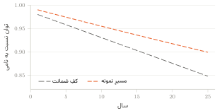
مثال 10.27 (کفِ ضمانت در برابرِ مسیرِ نمونه) پرسش. ضمانتِ خطیِ 98 % در سالِ اول و افتِ 0.55 % در هر سال پس از آن را با مسیری که 1 % در سالِ اول و 0.4 % در هر سال میبازد مقایسه کنید (A-189، فرضی). میانگینِ ۲۵ ساله هر کدام چیست؟
پاسخ.
degradation against a linear power warranty (A-189):
warranty: 98 % after year 1, -0.55 %/yr -> 0.848 in year 25
module degrading 1 % then 0.4 %/yr -> 0.899 in year 25
25-year mean output: warranty floor 0.914, typical 0.944
the warranty is a floor that triggers a claim, not a forecast;
a claim needs measured power with known uncertaintyتفسیر. میانگینِ ۲۵ سالهٔ مسیرِ نمونه 0.944 و کفِ ضمانت 0.914 است؛ اختلافِ سه درصد در انرژیِ طولِ عمر. مدلِ مالی باید مسیرِ مورد انتظار را به کار ببرد (فصلِ ۱۵) و ضمانت را فقط بیمهٔ سناریوی بد بداند. وارسی: \(0.98 - 0.0055 \times 24 = 0.848\) (درست).
خطای رایج. «تخریبِ 0.5 % در سال یعنی پس از ۲۵ سال 12.5 % کمتر، پس انرژیِ کل 12.5 % کمتر.» انرژیِ کل با میانگینِ مسیر کم میشود (حدودِ نصفِ افتِ پایانی)، نه با افتِ سالِ آخر.
- چرا تخریب در سالِ اول بیشتر است؟
- میانگینِ ۲۵ سالهٔ مسیری با افتِ ثابتِ 0.5 % در سال (بیافتِ سالِ اول) را تقریب بزنید.
- چرا مدلِ مالی نباید کفِ ضمانت را بهجای مسیرِ مورد انتظار بگذارد؟
10.3.21 پایانِ عمر: رابطِ ماژول با بازیافت
ایده. هر تصمیمِ ماژول یک پیامدِ پایانِ عمر هم دارد که در خرید دیده نمیشود: پس از ۲۵ تا ۳۵ سال (یا زودتر برای ماژولهای شکسته و معیوب)، حدودِ 3000 t ماده از نیروگاهِ P بیرون میآید (مثال 10.18). شیشه و آلومینیوم جرمِ اصلیاند و بازیافتِ سادهتری دارند؛ نقره، مس و سیلیسیمِ سلول جرمِ کمی دارند اما ارزشِ بیشتری؛ کپسولهکننده و پشتپوشِ پلیمری جداسازی را دشوار میکنند و برخی پشتپوشها ترکیبهای فلوئوردار دارند که سوزاندنشان مجاز نیست. ماژولِ دوشیشه بیپشتپوشِ پلیمری است اما جداسازیِ دو شیشه از کپسولهکننده کارِ ویژهای است.
رابطهای امروز برای فردا. (۱) فهرستِ مواد هر محموله (برای ارزیابیِ موادِ خطرناک و ارزشِ بازیافت) در پروندهٔ نیروگاه بماند؛ (۲) مسئولیتِ جمعآوری و بازیافت در قراردادِ خرید یا مقرراتِ کشور معلوم شود؛ (۳) ماژولهای شکسته در دورهٔ بهرهبرداری (تگرگ، حمل، نصب) از روزِ اول مسیرِ مجاز داشته باشند و در زمین رها نشوند. برنامهٔ کامل در فصلِ ۵۳ و ارزیابیِ چرخهٔ عمر در فصلِ ۳۳ میآید.
- سه دستهٔ مواد را با جرم و ارزشِ بازیافتشان مقایسه کنید.
- کدام سندِ امروز برای بازیافتِ سی سال بعد لازم است؟
- ماژولهای شکسته در دورهٔ بهرهبرداری چه مسیری باید داشته باشند؟
10.3.22 ضمانتِ محصول و ضمانتِ توان
ایده. ماژول معمولاً دو ضمانت دارد: ضمانتِ محصول (عیبِ مواد و ساخت، برای سالهایی معمولاً کمتر از عمرِ نیروگاه) و ضمانتِ توان (کفِ توان در هر سال، مانندِ شکل 10.11). ارزشِ هر دو به سه چیز بستگی دارد: (۱) شرطِ اندازهگیری (کدام آزمایشگاه، با کدام عدمِ قطعیت، پس از پایدارسازی، با کدام قاعدهٔ تصمیم)؛ (۲) استثناها (حمل، نصب، شستوشو، سایه، دستکاری)؛ (۳) توانِ مالیِ ضمانتدهنده یا بیمهٔ پشتیبانِ آن.
مثال 10.28 (ادعای ضمانت در سالِ دهم) پرسش. کفِ ضمانتِ سالِ دهم برای ماژولِ 550 W با A-189 چیست؟ اگر آزمایشگاه 505 W با عدمِ قطعیتِ گستردهٔ ±2.5 % اندازه بگیرد، آیا افتِ زیرِ کف ثابت شده است؟
پاسخ. کف \(0.98 - 0.0055 \times 9 = 0.9305\)، یعنی \(550 \times 0.9305 = 511.8\ \text{W}\). بازهٔ اندازهگیری \(505 \pm 12.6\)، یعنی 492.4 تا 517.6 W.
تفسیر. مرزِ بالای بازه (517.6 W) از کف بیشتر است؛ با قاعدهٔ «باید ثابت شود»، ادعا پذیرفته نمیشود هرچند اندازهگیری زیرِ کف است. اگر ضمانتنامه قاعدهٔ دیگری داشته باشد (مثلاً کسرِ رواداریِ اندازهگیری به سودِ خریدار)، نتیجه فرق میکند. این همان قاعدهٔ تصمیمِ فصلِ ۲ است (بخش 2.4.5.6)؛ نوشتنِ آن پیش از خرید از چانهزنی پس از خرابی ارزانتر است. وارسی: \(505 \times 0.025 = 12.6\) (درست).
خطای رایج. «ضمانتِ ۳۰ ساله یعنی خطرِ ماژول با سازنده است.» اگر سازنده تا سالِ پانزدهم دیگر نباشد یا ادعا به شرطِ اندازهگیریِ ناممکن بسته باشد، ضمانت ارزشی ندارد. ارزیابیِ ضمانت بخشی از ارزیابیِ تأمینکننده است (فصلهای ۳۹ و ۴۰).
- ضمانتِ محصول و ضمانتِ توان چه فرقی دارند؟
- کفِ ضمانتِ سالِ بیستم با A-189 چیست؟
- سه شرطی را که ارزشِ ضمانت را تعیین میکنند نام ببرید.
- در مثال 10.28، اندازهگیری حداکثر چقدر باید باشد تا افت زیرِ کف ثابت شود؟
10.4 پ. مهندسیِ آرایه
بخشِ پ ماژول را در میدان میگذارد: رشته را با دو مرزِ دمایی اندازه میکند، جریانها و فیوزها را وارسی میکند، چیدمانِ عددِ صحیحِ رشته، جعبهٔ تجمیع و اینورتر را میسازد، تابشِ صفحهٔ آرایه، شیب و فاصلهٔ ردیفها را با دادهٔ یک سال حساب میکند، تلفاتهای ناهمسانی، سایه، گرد و غبار، برف و پیری را میسنجد، کابل، جداسازی و زمینکردن را میچیند، و با نسبتِ DC/AC و پنجرهٔ ولتاژِ اینورتر و رابطهای سامانهٔ شستوشو پایان مییابد. همهٔ محاسبهها با مدلِ سالانهٔ pvyear10 (تابشِ صفحهٔ آرایه با مدلِ هِی–دیویس، تلفاتِ زاویه، دمای فایمن و مدلِ تکدیودی) و بستهٔ دادهٔ 1.1.0ِ سناریوی S0 انجام میشوند.
10.4.1 اندازهٔ رشته در دو مرزِ دمایی
ایده. رشته با \(N\) ماژولِ سری دو مرز دارد. مرزِ بالا: ولتاژِ مدارِ باز در سردترین ساعتِ روشن نباید از بیشینهٔ ولتاژِ سامانه (ماژول، کابل، جعبهٔ تجمیع و اینورتر؛ اینجا 1500 V) بیشتر شود؛ صبحِ سردِ زمستان، پیش از آنکه اینورتر شروع به کار کند، رشته در مدارِ باز است. مرزِ پایین: ولتاژِ نقطهٔ بیشینه در گرمترین ساعت باید بالای کفِ پنجرهٔ ردیابِ اینورتر بماند (اینجا 933 V، D-012)؛ وگرنه اینورتر از نقطهٔ بیشینه دور میشود (فصلِ ۹، بخش 9.5.4). با \(V_\text{oc}\) و \(V_\text{mp}\)ِ یک ماژول در آن دماها:
\[ N_\text{max} = \left\lfloor \frac{V_\text{sys}}{V_\text{oc}(T_\text{min})} \right\rfloor, \qquad N_\text{min} = \left\lceil \frac{V_\text{floor}}{V_\text{mp}(T_\text{c,max})} \right\rceil \tag{10.15}\]
و هر \(N\) میانِ این دو پذیرفتنی است. انتخابِ دماها خودش یک تصمیمِ مستند است: \(T_\text{min}\) دمای هوای کمینهٔ طراحی (نه کمینهٔ یک سالِ داده) است چون سلول در سپیدهدمِ سرد تقریباً همدمای هواست؛ \(T_\text{c,max}\) دمای سلول در گرمترین ساعتِ پرتابش است (A-190: −15 °C و 72 °C؛ کمینهٔ بستهٔ داده −8.6 °C است).
def string_limits(n_mod: int, t_min_c: float, t_hot_c: float,
g_max: float = 1200.0, v_sys: float = 1500.0,
v_floor: float = 933.0) -> dict:
"""Voltage and current bounds of a string: V_oc at the coldest cell
temperature (full irradiance, conservative), V_mp at the hottest, and
the short-circuit current at the highest irradiance and temperature."""
ref = pvyear10.ref_sdm()
cold = pc.at_conditions(ref, 1000.0, t_min_c, DS.alpha_isc)
hot = pc.at_conditions(ref, 1000.0, t_hot_c, DS.alpha_isc)
v_oc = n_mod * cold.voc
v_mp = n_mod * hot.mpp()[0]
i_sc = DS.isc * g_max / 1000 + DS.alpha_isc * (t_hot_c - 25)
return {"v_oc_cold": v_oc, "ok_v_sys": v_oc <= v_sys,
"v_mp_hot": v_mp, "ok_floor": v_mp >= v_floor, "i_sc_max": i_sc}مثال 10.29 (مرزهای رشتهٔ نیروگاهِ P) پرسش. با مدلِ برازششده و A-190، ولتاژِ مدارِ باز در −15 °C و ولتاژِ نقطهٔ بیشینه در سلولِ 72 °C را برای رشتههای ۲۴ تا ۲۸ ماژولی بیابید و با 1500 V و 933 V بسنجید. مرزِ جریان چیست؟
پاسخ.
string limits (data-pack minimum air -8.6 C; design low -15 C,
hot cell 72 C; A-190):
modules V_oc at -15 C V_mp at 72 C 1500 V 933 V floor
24 1326 V 848 V ok below
25 1381 V 883 V ok below
26 1436 V 918 V ok below
27 1492 V 954 V ok ok
28 1547 V 989 V EXCEEDS ok
string current bound at 1200 W/m2 and 72 C: 17.09 A
26 modules keep 1500 V with margin; 27 is close and leaves
no room for a colder winter or for low-light V_oc errors;
at a 72 C cell the 26-module V_mp is 15 V below the floor: a
static worst case; the year shows how rare it is (c_window)تفسیر. ۲۶ ماژول با 64 V حاشیه زیرِ 1500 V است؛ ۲۷ ماژول فقط 8 V حاشیه دارد که برای زمستانی سردتر از طراحی یا خطای مدل در سپیدهدم کافی نیست (مثال 10.57)؛ ۲۸ ماژول مرز را میشکند. در سوی دیگر، ۲۶ ماژول در بدترین حالتِ ایستا 15 V زیرِ کف است. این یک ناسازگاریِ ظاهری است: یکی از دو مرز همیشه با فرضِ بدبینانه شکسته میشود. پاسخ را دادهٔ یک سال میدهد: آن «بدترین حالت» در سال چند ساعت رخ میدهد و چقدر انرژی میبرد (مثال 10.46)؟ وارسی: \(1500/55.24 = 27.2\)، پس \(N_\text{max} = 27\)؛ \(933/(918/26) = 26.4\)، پس \(N_\text{min} = 27\) (هر دو با معادلهٔ 10.15).
چرا ۲۶ و نه ۲۷. دو مرز با فرضهای ایستا هیچ عددِ مشترکی نمیدهند جز ۲۷ که مرزِ ایمنی (ولتاژِ سامانه) را با حاشیهٔ بسیار کم نگه میدارد. اما دو مرز هموزن نیستند: شکستنِ مرزِ بالا ایمنی و آسیبِ تجهیز است، شکستنِ مرزِ پایین چند کیلوواتساعت انرژی. پس مرزِ بالا با حاشیه محترم شمرده میشود و مرزِ پایین با شاهدِ انرژی سنجیده میشود: این همان منطقِ D-012 در فصلِ ۹ و ۲۶ ماژولِ A-015 است.
خطای رایج. (۱) \(V_\text{oc}\)ِ سرد را با \(V_\text{mp}\) مقایسه کردن یا برعکس. (۲) دمای هوا را برای مرزِ پایین گذاشتن (سلول 20 تا 35 K داغتر است). (۳) کمینهٔ دمای یک سالِ داده را دمای طراحی گرفتن؛ دمای طراحی از آمارِ بلندمدت میآید (فصلِ ۱۲). (۴) فراموش کردنِ اینکه حدِ 1500 V کمترینِ حدهای همهٔ اجزای مدار است، نه فقط اینورتر.
- چرا مرزِ بالا با \(V_\text{oc}\) و مرزِ پایین با \(V_\text{mp}\) سنجیده میشود؟
- با معادلهٔ 10.15 و \(V_\text{oc}(-25\ ^\circ\text{C}) = 58.7\ \text{V}\)، \(N_\text{max}\) را بیابید.
- اگر کفِ پنجره 880 V بود، \(N_\text{min}\) چه میشد؟
- چرا دمای سلول در سپیدهدمِ سرد تقریباً با هوا برابر است؟
- چرا دو مرز هموزن نیستند؟
10.4.2 جریانها، جریانِ برگشتی و فیوزِ رشته
ایده. جریانِ رشته در تابشِ بیش از استاندارد (لبهٔ ابر، بازتابِ برف، سهمِ پشتِ ماژولِ دوطرفه) و دمای بالا از \(I_\text{sc}\)ِ برگهٔ داده بیشتر میشود؛ کابل، فیوز، کلید و ورودیِ اینورتر باید آن را تحمل کنند. خطرِ دوم جریانِ برگشتی است: اگر در یکی از \(N_\text{p}\) رشتهٔ موازی اتصالِ کوتاه رخ دهد (یا ولتاژش بسیار کم شود)، رشتههای سالم جریانشان را به آن میفرستند، تا حدودِ \((N_\text{p} - 1)\) برابرِ جریانِ یک رشته (فصلِ ۶، بخش 6.4.4). ماژول فقط تا فیوزِ سریِ برگهٔ داده (25 A) جریانِ معکوس را تحمل میکند.
مثال 10.30 (فیوزِ رشته در جعبهٔ تجمیعِ ۲۰ رشتهای) پرسش. در جعبهٔ تجمیع با ۲۰ رشتهٔ موازی، بیشینهٔ جریانِ برگشتی به یک رشتهٔ معیوب چیست و آیا فیوزِ رشته لازم است؟ با کرانِ پایینِ آموزشیِ \(1.5\,I_\text{sc}\) و کرانِ بالای فیوزِ سری (A-202)، ردهٔ فیوز را انتخاب کنید.
پاسخ.
string fuses in a 20-string combiner (A-202):
a short in one string draws the other 19 strings' current: up to 332 A
module maximum series fuse (data sheet) 25 A: the reverse current is
13 times that, so every string needs a fuse
lower bound 1.5 x I_sc = 21.0 A, upper bound 25 A: a 25 A gPV fuse
the factors and the rule for both poles come from IEC 62548-1
and the earthing scheme; this is a teaching check, not a rule
with two strings or fewer in parallel no fuse may be needed:
(N - 1) I_sc stays below the module's fuse ratingتفسیر. 332 A سیزده برابرِ تحملِ ماژول است؛ بیفیوز، رشتهٔ معیوب میسوزد. تنها ردهٔ میانِ دو کران فیوزِ 25 A از نوعِ ویژهٔ فتوولتائیک (gPV) است: هم از کرانِ پایینِ 21.0 A (و جریانِ عادیِ 17.1 A، مثال 10.11) بیشتر است و هم از تحملِ 25 Aِ ماژول بیشتر نیست؛ همان انتخابِ فصلهای ۶ و ۲۶. مرزِ کار: ضریبهای الزامی، فیوز در یک یا هر دو قطب و هماهنگی با زمینکردن را IEC 62548-1:2023 و مهندسِ حفاظت تعیین میکنند؛ فیوزِ DC باید برای ولتاژِ DCِ سامانه ردهبندی شده باشد. وارسی: \(19 \times 13.98 \times 1.25 = 332\ \text{A}\) (درست).
جریانِ کلِ جعبه و اینورتر. جعبهٔ ۲۰ رشتهای در شرایطِ استاندارد 262 A و در کرانِ بالا حدودِ 342 A میدهد (E17)؛ قاعدهٔ آموزشیِ \(1.25\,I_\text{sc}\) برای هر رشته 350 A برای کابل و کلیدِ جعبه میدهد (مثال 10.31). اینورتر هم بیشینهٔ جریانِ ورودی دارد؛ با نسبتِ DC/AC بالا، این حد جدا از توان باید وارسی شود (بخش 10.4.18).
خطای رایج. «فیوز از ماژول در برابرِ اضافهبار محافظت میکند.» رشته منبعِ جریانِ محدود است و خودش اضافهبار نمیسازد؛ فیوز در برابرِ جریانِ برگشتیِ رشتههای موازی است. خطای دیگر: فیوزِ AC در مدارِ DC؛ قطعِ قوسِ DC قطعهای با ردهٔ DC میخواهد (بخش 6.4.6).
- چرا جریانِ رشته ممکن است از \(I_\text{sc}\)ِ برگهٔ داده بیشتر شود؟ سه دلیل.
- با دو رشتهٔ موازی، بیشینهٔ جریانِ برگشتی چیست و آیا فیوز لازم است؟
- چرا فیوز باید از جریانِ عادی بیشتر و از فیوزِ سریِ ماژول کمتر باشد؟
- ماژولِ دوطرفه چه اثری بر انتخابِ فیوز دارد؟
10.4.3 چیدمانِ عددِ صحیح: رشته، جعبهٔ تجمیع، اینورتر
ایده. چیدمان باید در هر سطح عددِ صحیح باشد: ماژول در رشته، رشته در جعبهٔ تجمیع، جعبه در اینورتر، اینورتر در نیروگاه. فصلِ ۳ نشان داد که تقسیمِ ساده به عددِ صحیح نمیرسد (۱۷۵ بر ۱۲)؛ فصلِ ۶ با ۲۴ رشته در هر جعبه (A-014) کار کرد. اینجا با ده اینورترِ 5 MW و هدفِ حدودِ 60 MWp، چیدمانی میخواهیم که در همهٔ سطحها صحیح و برای همهٔ اینورترها یکسان باشد (یک طراحی، یک فهرستِ یدکی).
مثال 10.31 (از 60 MWp به عددهای صحیح) پرسش. شمارِ رشتههای لازم برای 60 MWp را بیابید و برای ۴۲۰ رشته در هر اینورتر، اندازههای ممکنِ جعبهٔ تجمیع را بسنجید. جریانِ طراحیِ خروجیِ جعبه را با قاعدهٔ آموزشیِ \(1.25\,I_\text{sc}\) حساب کنید (A-191).
پاسخ.
integer layout of 60 MWp (A-191):
strings needed: 60e6 / (26 x 550) = 4195.8
16 strings per combiner: 26.25 combiners per inverter
18 strings per combiner: 23.33 combiners per inverter
20 strings per combiner: 21.00 combiners per inverter (integer)
21 strings per combiner: 20.00 combiners per inverter (integer)
24 strings per combiner: 17.50 combiners per inverter
choice (D-013): 420 strings per inverter = 21 combiners x 20
strings; 4200 strings, 60.06 MWp
combiner output, 20 x I_sc x 1.25 = 350 A for cable and switch
sizing (the factor and its basis come from the standard)تفسیر. ۴۲۰ بر ۲۰ و ۲۱ بخشپذیر است. ۲۱ جعبهٔ ۲۰ رشتهای انتخاب میشود (D-013): جعبهٔ ۲۰ رشتهای در اندازهٔ رایجِ تجهیز است، جریانش (350 A) با یک کابلِ آلومینیومیِ تکرشته به اینورتر میرسد، و ۲۱ جعبه در سه ستونِ هفتتایی گردِ ایستگاهِ اینورتر مینشیند (شکل 10.12). ظرفیتِ هر بلوک \(420 \times 26 \times 550 = 6.006\ \text{MWp}\) و نسبتِ DC/AC برابرِ 1.20 است (E23). این چیدمان A-014ِ فصلِ ۶ (۲۴ رشته در هر جعبه) را جایگزین میکند. وارسی: \(10 \times 21 \times 20 \times 26 = 109\,200\) ماژول (درست).
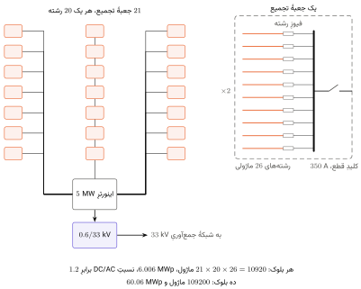
هندسهٔ میز. هر میز (به انگلیسی table) دو ردیف ماژولِ عمودی در ارتفاع و ۲۶ ماژول در طول دارد: ۵۲ ماژول، یعنی دو رشتهٔ کامل روی یک میز. پس سیمکشیِ رشته روی خودِ میز بسته میشود و هر جعبهٔ تجمیع ده میز را جمع میکند. نیروگاه \(109\,200/52 = 2100\) میز دارد؛ همین عدد در پایهٔ شستوشوی رباتی به کار میرود (مثال 10.52). طولِ هر میز با ۲۶ ماژولِ 1.134 m و فاصلههای کوچکِ میانشان حدودِ 30 m است.
خطای رایج. «هر اینورتر میتواند شمارِ رشتهٔ متفاوتی داشته باشد تا عدد درست دربیاید.» ممکن است، اما هر تفاوت یک طراحی، یک نقشه، یک ردیفِ یدکی و یک خطای احتمالیِ ساخت بیشتر است. چیدمانِ یکسان در پیمانکاری و بهرهبرداری صرفهجویی میکند (فصلهای ۲۴ و ۴۹).
- چرا ۴۲۰ رشته در هر اینورتر انتخاب شد؟ \(60.06\ \text{MWp}\) از کجا میآید؟
- اگر هر جعبه ۲۴ رشته داشت، چند جعبه برای هر اینورتر لازم بود؟ مشکل چیست؟
- چرا میزِ ۵۲ ماژولی سیمکشیِ رشته را ساده میکند؟
- جریانِ طراحیِ جعبهٔ ۲۱ رشتهای را با قاعدهٔ \(1.25\,I_\text{sc}\) حساب کنید.
10.4.4 تابشِ صفحهٔ آرایه
ایده. بستهٔ داده تابشِ افقیِ کل (GHI)، مستقیمِ عمود (DNI) و پخشیدهٔ افقی (DHI) را میدهد (فصلِ ۲)؛ ماژول نورِ صفحهٔ خودش (POA) را میگیرد. تبدیلِ افقی به صفحهٔ شیبدار جابهجایی (به انگلیسی transposition) نام دارد و سه جزء دارد: مستقیم که با هندسه دقیق حساب میشود، پخشیدهٔ آسمان که به مدلِ آسمان بستگی دارد، و بازتابِ زمین. مدلِ هِی–دیویس (به انگلیسی Hay–Davies) سهمی از پخشیده را که از گردِ قرصِ خورشید میآید مانندِ نورِ مستقیم و بقیه را یکنواخت میگیرد:
\[ \begin{aligned} G_\text{POA} &= G_\text{b} + G_\text{d} + G_\text{g}, \qquad G_\text{b} = \text{DNI}\,\cos\theta,\\ G_\text{d} &= \text{DHI}\left[A_i R_\text{b} + (1 - A_i)\,\frac{1 + \cos\beta}{2}\right], \qquad A_i = \frac{\text{DNI}}{G_\text{0n}}, \quad R_\text{b} = \frac{\cos\theta}{\cos\theta_z},\\ G_\text{g} &= \text{GHI}\,\rho_\text{g}\,\frac{1 - \cos\beta}{2} \end{aligned} \tag{10.16}\]
که \(\theta\) زاویهٔ تابش بر صفحه، \(\theta_z\) زاویهٔ سرسو، \(\beta\) شیب، \(G_\text{0n}\) تابشِ بیرونِ جو و \(\rho_\text{g}\) آلبیدوی زمین (0.2، A-183) است. چون دادهٔ بستهٔ داده میانگینِ ساعتی است، هندسه هم با میانگینِ شش زیرگام در هر ساعت حساب میشود (بخش 10.9).
مثال 10.32 (سه جزءِ تابشِ سالانهٔ صفحهٔ 25°) پرسش. تابشِ سالانهٔ صفحهٔ رو به جنوب با شیبِ 25° را به سه جزء بشکنید و با تابشِ افقی مقایسه کنید.
پاسخ.
E30: POA year at 25 deg: beam 1,570, sky 562, ground 18 = 2,150 kWh/m2
: shares 73.0 / 26.1 / 0.8 %; GHI 1,947تفسیر. صفحهٔ شیبدار 10.4 % بیش از افق نور میگیرد، تقریباً همه از جزءِ مستقیم که در زمستان و بهار با شیب بهتر رو به خورشید است. سهمِ بازتابِ زمین برای ماژولِ یکرو کمتر از یک درصد است؛ برای ماژولِ دوطرفه، پشتِ ماژول بخشِ بزرگتری از آن را میبیند (بخش 10.2.17). مدلِ آسمان یکی از منبعهای عدمِ قطعیتِ برآوردِ انرژی است: مدلهای مختلف در صفحههای پرشیب چند درصد اختلاف دارند (فصلهای ۱۲ و ۱۵). وارسی: \(1570 + 562 + 18 = 2150\)؛ \(2150/1947 = 1.104\) (درست).
خطای رایج. تابشِ افقی را با ضریبی ثابت به صفحه بردن (مانندِ ضریبِ 1.1ِ تمرینِ فصلِ ۹). ضریب در زمستان و تابستان، در روزِ صاف و ابری، بسیار فرق میکند و ولتاژ و دمای ساعتبهساعت را نادرست میدهد؛ برای پنجرهٔ اینورتر همین جزئیات مهماند.
- سه جزءِ تابشِ صفحهٔ آرایه را با رابطهشان بنویسید.
- چرا سهمِ مستقیم در صفحهٔ شیبدار بیش از افق است؟
- شاخصِ \(A_i\) در هوای ابری به کدام سو میرود و اثرش بر \(G_\text{d}\) چیست؟
- آلبیدوی برف حدودِ 0.8 است؛ جزءِ زمین برای صفحهٔ 25° چند برابر میشود؟
10.4.5 شیبِ صفحه
ایده. شیبِ بیشتر صفحه را در زمستان رو به خورشیدِ پایین میکند و در تابستان دور. بهترین شیب برای کلِ سال به سهمِ هر فصل از نور، سهمِ پخشیده (که صفحههای کمشیب بیشتر میبینند) و تلفاتِ زاویه بستگی دارد. فصلِ ۳ این بهینهسازی را با مدلی ساده انجام داد (بخش 3.2.14)؛ اینجا با مدلِ هِی–دیویس و تلفاتِ زاویه تکرار میکنیم.
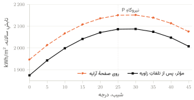
مثال 10.33 (شیبِ بهینه با دادهٔ یک سال) پرسش. تابشِ سالانهٔ صفحه و تابشِ مؤثر (پس از تلفاتِ زاویه) را برای شیبهای صفر تا 45° بیابید.
پاسخ.
annual irradiation on south-facing planes (Hay-Davies, IAM):
tilt deg POA kWh/m2 effective kWh/m2
0 1947 1875
5 2013 1943
10 2067 1999
15 2108 2042
20 2136 2071
25 2150 2086
30 2151 2087
35 2139 2074
40 2113 2048
45 2075 2008
best tilt about 30 deg, below the latitude (34 deg):
diffuse light and the summer-heavy sky favour flatter planes;
row shading and wind load push lower still (next lesson)تفسیر. بیشینه پهن است: میانِ 25° و 35° تفاوت کمتر از 1 % است. پس شیب را نور بهتنهایی تعیین نمیکند: شیبِ کمتر میز را کوتاهتر، بارِ باد را کمتر (فصلِ ۳۰) و برای همان سایه فاصلهٔ ردیفها را کمتر میکند (بخش 10.4.6). نیروگاهِ P با 25° (A-183) تنها 0.05 % از بهینهٔ نوری میبازد. وارسی: \(2086/2087 = 0.9995\) (درست).
خطای رایج. «شیبِ بهینه برابرِ عرضِ جغرافیایی است.» این قاعده برای آسمانِ کاملاً صاف و بدونِ تلفاتِ زاویه نزدیک است؛ با سهمِ پخشیده و آسمانِ تابستانیِ صافتر، بهینه چند درجه کمتر است، و با هزینههای سازه و زمین باز هم کمتر.
- چرا منحنیِ شکل 10.13 نزدیکِ بیشینه تخت است؟
- چرا تابشِ مؤثر در شیبِ صفر نسبت به شیبِ بهینه بیشتر میبازد تا تابشِ کل؟
- سه عاملِ غیرنوری که شیب را پایین میآورند کداماند؟
10.4.6 فاصلهٔ ردیفها و نسبتِ پوششِ زمین
ایده. ردیفِ جلو (جنوبی) در خورشیدِ پایین روی ردیفِ پشت سایه میاندازد. نسبتِ پوششِ زمین (به انگلیسی ground coverage ratio، GCR) نسبتِ طولِ شیبِ میز \(L\) به فاصلهٔ ردیفها (گام) \(d\) است. هندسهٔ شکل 10.14 با قانونِ سینوسها سهمِ سایهخورده از طولِ شیب را میدهد:
\[ f = 1 - \frac{1}{\text{GCR}}\,\frac{\sin\alpha_\text{p}}{\sin(\alpha_\text{p} + \beta)}, \qquad \tan\alpha_\text{p} = \frac{\tan\alpha_\text{s}}{\cos(A - 180^\circ)} \tag{10.17}\]
که \(\alpha_\text{p}\) زاویهٔ نیمرخِ خورشید (زاویهٔ ارتفاع در صفحهٔ شمال–جنوب) و \(\alpha_\text{s}\) و \(A\) ارتفاع و سمتِ خورشیدند. سایه وقتی صفر است که \(\tan\alpha_\text{p} \ge \sin\beta/(1/\text{GCR} - \cos\beta)\).
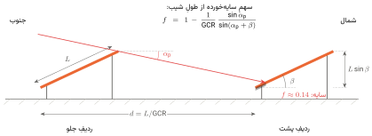
def shaded_fraction(el_deg, az_deg, tilt_deg: float, gcr: float):
"""Share of a table's slope length shaded by the row in front (south-
facing rows, sun profile angle in the north-south plane)."""
el, az = np.radians(el_deg), np.radians(az_deg)
b = math.radians(tilt_deg)
cos_d = np.cos(az - math.pi)
tan_p = np.divide(np.tan(el), cos_d, out=np.full_like(el, 1e9),
where=cos_d > 1e-6)
a_p = np.arctan(np.clip(tan_p, 0, 1e9))
f = 1 - (1 / gcr) * np.sin(a_p) / np.sin(a_p + b)
return np.clip(np.where(el > 0, f, 0.0), 0.0, 1.0)مثال 10.34 (هندسهٔ میزهای نیروگاهِ P) پرسش. با دو ماژولِ عمودی (2.278 m) و \(\text{GCR} = 0.40\): گام و ارتفاعِ میز؛ سهمِ سایه در \(\alpha_\text{p} = 12^\circ\)؛ زاویهٔ مرزیِ بیسایه؛ و ارتفاعِ خورشید در ظهرِ انقلابِ زمستانی در عرضِ 34°.
پاسخ.
E19: pitch at GCR 0.40, two 2.278 m modules: 11.39 m;
table rise L sin 25 = 1.93 m
E20: shaded share at alpha_p 12 deg, tilt 25 deg, GCR 0.4: 0.136
E21: no shade above tan a = sin b / (1/GCR - cos b): 14.9 deg
E22: winter-solstice noon at 34 N: 90 - 34 - 23.44 = 32.6 degتفسیر. حتی در کوتاهترین روزِ سال، خورشیدِ ظهر بیش از دو برابرِ زاویهٔ مرزی بالاست؛ سایه فقط در صبح و عصرهای زمستان رخ میدهد که تابش کم است. وارسی: \(\tan 14.9^\circ = 0.266\) و \(\sin 25^\circ/(2.5 - \cos 25^\circ) = 0.4226/1.594 = 0.265\) (درست).
اثرِ برقیِ سایه. سایهٔ هندسی با سایهٔ برقی یکی نیست. در میزِ دو ماژولِ عمودی، هر ردیفِ ماژول یک رشته است و هر سه زیررشتهٔ ماژولِ عمودی در طولِ شیب امتداد دارند (شکل 10.9). وقتی لبهٔ پایینِ ردیفِ پایین سایه بخورد، هر سه دیودِ همهٔ ماژولهای آن رشته روشن میشوند و رشته عملاً از دست میرود: با کمترین سایه، نیمی از میز (برای ماژولِ سلولکامل، که مدلِ A-192 فرض میکند؛ در ماژولِ نیمسلولیِ PVM-550 نیمهٔ بالای هر ماژول هنوز کار میکند و تلفات کمتر است، بخش 10.3.7). در ماژولِ افقی، زیررشتهها افقیاند و سایه یکییکی آنها را درگیر میکند.
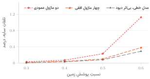
مثال 10.35 (نسبتِ پوشش و تلفاتِ سالانهٔ سایه) پرسش. تلفاتِ سالانهٔ سایهٔ ردیفها را برای \(\text{GCR}\)ِ 0.30 تا 0.60 با سه فرض حساب کنید: خطی (توان متناسب با سطحِ آفتابی)، دو ماژولِ عمودی و چهار ماژولِ افقی (A-192).
پاسخ.
inter-row shading, tilt 25 deg, tables 2 high (A-192):
GCR pitch m linear loss % 2P portrait % 4L landscape %
0.30 15.2 0.01 0.03 0.01
0.40 11.4 0.03 0.07 0.04
0.50 9.1 0.08 0.23 0.10
0.60 7.6 0.29 1.13 0.38
portrait tables lose a whole module row once its bottom edge
is shaded (all three bypass substrings run along the slope);
landscape modules lose one substring at a time; GCR 0.40
(A-183) keeps the electrical loss small at 11.4 m pitchتفسیر. در \(\text{GCR} = 0.40\) تلفات کوچک است (0.07 % با نصبِ عمودی)؛ در 0.60، نصبِ عمودی 1.13 % میبازد، سه برابرِ نصبِ افقی. انتخابِ \(\text{GCR}\) پس مصالحهای میانِ زمین (و طولِ کابل و جاده) و انرژی است و ارزشِ هر دو در فصلهای ۱۸ و ۲۱ قیمت میگیرد. محدودیتِ مدل: فقط سایهٔ مستقیم دیده شده است؛ ردیفِ جلو بخشی از آسمان و زمینِ روشن را هم از ردیفِ پشت میپوشاند (تلفاتِ پخشیده) که در مدلِ فصلِ ۱۵ میآید. وارسی: گام در 0.40 برابرِ \(2 \times 2.278/0.40 = 11.39\ \text{m}\) (درست).
بستنِ U-016. فصلِ ۳ هندسهٔ میز و فاصلهٔ ردیفها را مجهول گذاشت. اکنون پایهٔ طراحی چنین است: میزِ دو ماژولِ عمودی با ۲۶ ماژول در طول، شیبِ 25°، \(\text{GCR} = 0.40\)، گامِ 11.4 m و لبهٔ پایینِ 0.6 m بالای زمین (D-013). نقشهٔ واقعیِ میدان با شیبِ زمین، مرزِ زمین و جادهها در فصلهای ۱۴، ۲۱ و ۲۹ کامل میشود؛ زمینِ شیبدار گام را در هر جا تغییر میدهد.
- معادلهٔ 10.17 را با قانونِ سینوسها در شکل 10.14 بازسازی کنید.
- با \(\text{GCR} = 0.5\)، زاویهٔ مرزیِ بیسایه چیست؟
- چرا کمترین سایهٔ لبهٔ پایین در نصبِ عمودی نیمی از میز را میبرد؟
- چرا تلفاتِ سالانهٔ سایه با وجودِ سایهٔ هر روزِ زمستان کوچک است؟
- کدام تلفاتِ ردیفها در مدلِ این فصل نیامده است؟
10.4.7 سایههای دیگر: افق، اشیای نزدیک و توربینها
ایده. ردیفها تنها منبعِ سایه نیستند. سایهٔ دور (کوهها و تپههای افق) جزءِ مستقیم را در خورشیدِ پایین قطع میکند و با یک نیمرخِ افق (ارتفاعِ افق در هر سمت) مدل میشود. سایهٔ نزدیک از تیرهای برق و روشنایی، حصار، ایستگاههای اینورتر، دکلِ هواشناسی، ساختمانها و درختها میآید؛ چون روی چند سلول میافتد، اثرِ برقیاش (بخش 10.3.15) از سطحش بسیار بیشتر است.
در نیروگاهِ هیبریدی. برجها و پرههای توربینهای بادی سایههای بلند و متحرک دارند.
مثال 10.36 (سایهٔ برجِ توربین روی میدانِ خورشیدی) پرسش. طولِ سایهٔ برجِ 100 mِ توربینِ WT-5.0-150 را در ارتفاعِ خورشیدِ 15°، 30° و 60° بیابید. نوکِ پره در بالاترین جا (175 m) در 15° سایه را تا کجا میبرد؟
پاسخ.
E31: tower shadow (hub 100 m): 15 deg 373 m, 30 deg 173 m, 60 deg 58 m
blade tip at 175 m, sun at 15 deg: 653 mتفسیر. در صبح و عصر سایهٔ برج صدها متر و سایهٔ پرهها بیش از نیم کیلومتر میرود. سایهٔ برج باریک است اما روی هر رشتهای که بیفتد، دیودهای آن را روشن یا نقطهٔ داغِ گذرا میسازد؛ سایهٔ پرهها چشمکزن است و ردیابهای اینورتر را هم آشفته میکند. پس در چیدمانِ هیبریدی، فاصلهٔ توربینها از میدانِ خورشیدی یا جهتِ قرارگیریشان نسبت به میدان یک رابطِ طراحی است (فصلِ ۱۴). وارسی: \(100/\tan 15^\circ = 100/0.268 = 373\ \text{m}\) (درست).
خطای رایج. «سایهٔ تیرِ برق باریک است و اثری ندارد.» سایهٔ باریکِ ثابت هر روز روی همان سلولها میافتد: هم انرژی میبرد و هم پیریِ زودرس میسازد. جای اشیای بلند را در نقشهٔ میدان با تحلیلِ سایه وارسی کنید.
- سایهٔ دور و نزدیک در مدلسازی چه فرقی دارند؟
- سایهٔ برجِ توربین در ارتفاعِ 45°ِ خورشید چقدر است؟
- چرا سایهٔ چشمکزنِ پره برای ردیاب مسئله است؟
- سه شیء نزدیک در نیروگاهِ P را نام ببرید که باید در تحلیلِ سایه بیایند.
10.4.8 ردیابهای تکمحوره
ایده. ردیابِ تکمحوره (به انگلیسی single-axis tracker) ردیفها را حولِ محورِ شمال–جنوب از شرق به غرب میچرخاند تا صفحه در طولِ روز رو به خورشید بماند. نورِ مستقیمِ صبح و عصر که صفحهٔ ثابت با زاویهٔ بزرگ میگیرد، تقریباً عمود دریافت میشود. بهای آن موتور، کنترل، سازهٔ متحرک، نگهداری و رفتار در بادِ شدید (حالتِ ایمن) است. در صبح و عصر ردیفها روی هم سایه میاندازند؛ عقبگردِ ردیاب (به انگلیسی backtracking) زاویه را کم میکند تا سایه نیفتد.
مثال 10.37 (ردیاب در برابرِ میزِ ثابت) پرسش. با همان مدلِ آسمان، تابشِ سالانهٔ ردیابِ تکمحورهٔ شمال–جنوب با بیشینهٔ چرخشِ ±55° را با میزِ ثابتِ 25° مقایسه کنید (A-206؛ بیعقبگرد و بیسایه).
پاسخ.
single-axis tracker (north-south axis, +-55 deg) against fixed
25 deg tables, same sky model (A-206; no backtracking, no shading):
fixed 25 deg: POA 2,150 kWh/m2, effective 2,086
tracker: POA 2,703 kWh/m2, effective 2,656
gain 27.3 % of effective irradiance before shading,
backtracking losses, motor energy and availability; the
tracker earns most on clear summer mornings and evenings
the choice for Plant P (fixed tables, A-183) is revisited with
costs and wind loads in chapters 18 and 30تفسیر. 27 % تابشِ مؤثرِ بیشتر یک سقف است: عقبگرد و سایهٔ ردیفها، مصرفِ موتورها، توقفها و حالتِ ایمن در باد بخشی از آن را میبرند، و ردیابها معمولاً با \(\text{GCR}\)ِ کمتر (زمینِ بیشتر) نصب میشوند. در سایتِ صاف با سهمِ زیادِ نورِ مستقیم مانندِ نیروگاهِ P سودِ ردیاب بزرگ است. انتخابِ نیروگاهِ P (میزِ ثابت) فرضِ آموزشی است و در فصلهای ۱۸ (اقتصاد) و ۳۰ (سازه و باد) با شاهد دوباره سنجیده میشود. برای اینورتر، ردیاب منحنیِ روزانهٔ پهنتر و ساعتهای بیشتری نزدیکِ توانِ کامل یعنی بُرشِ بیشتر با همان نسبتِ DC/AC میدهد (بخش 10.4.18). وارسی: \(2656/2086 = 1.273\) (درست).
- چرا ردیاب بیشترین سود را در صبح و عصرِ صافِ تابستان دارد؟
- عقبگرد چه مسئلهای را حل میکند و چه بهایی دارد؟
- چرا ردیاب با همان نسبتِ DC/AC بُرشِ بیشتری دارد؟
- سه هزینهٔ ردیاب را که در سودِ تابش دیده نمیشود نام ببرید.
10.4.9 ناهمسانی
ایده. هیچ دو ماژولی دقیقاً یکسان نیستند. در رشتهٔ سری همه یک جریان دارند و ماژولِ کمجریانتر بقیه را از نقطهٔ بیشینهشان دور میکند؛ در رشتههای موازی همه یک ولتاژ دارند و رشتهای با ولتاژِ نقطهٔ بیشینهٔ متفاوت دور از بیشینه کار میکند. پس توانِ آرایه از مجموعِ توانهای بیشینهٔ ماژولها کمتر است: تلفاتِ ناهمسانی (به انگلیسی mismatch loss). فصلِ ۶ این را با دو رشته نشان داد؛ اینجا با پراکندگیِ آماریِ واقعیتر.
مثال 10.38 (ناهمسانیِ یک جعبهٔ تجمیعِ نو) پرسش. با ۲۰ رشتهٔ ۲۶ ماژولی، ردهبندیِ توانِ 0/+5 W و پراکندگیِ جریانِ 0.7 % (یک انحرافِ معیار) با شبیهسازیِ مونتکارلو (A-193، بذرِ ۳۷)، تلفاتِ ناهمسانی را در شرایطِ استاندارد بیابید. با رشدِ پراکندگی در پیری چه میشود (A-205)؟
پاسخ.
20 strings of 26 modules in parallel, Monte Carlo (seed 37, A-193):
power binning 0/+5 W, current spread 0.7 % (one sigma)
sum of module maxima 287.36 kW; array maximum 287.24 kW
mismatch loss 0.04 % at STC; ageing and uneven
soiling widen the spread and the loss over the yearsmismatch loss as the current spread grows with age (A-205):
current spread (1 s) mismatch loss %
0.7 0.04
2.0 0.33
3.0 0.80
5.0 2.72
the loss grows roughly with the square of the spread: new
binned modules lose little; uneven ageing, soiling and
replaced modules of another class add up over the yearsتفسیر. برای ماژولهای نوِ ردهبندیشده، ناهمسانی ناچیز است (0.04 %)؛ عددِ 1 %ِ A-183 محافظهکارانه است و پراکندگیِ آینده را هم میپوشاند. با پراکندگیِ 3 % تلفات 0.8 % و با 5 % حدودِ 2.7 % است: رشدی تقریباً با مجذورِ پراکندگی. منبعهای پراکندگیِ آینده: پیریِ ناهمسان، گرد و غبارِ ناهمسان (لبهٔ پایینِ ماژول)، دمای ناهمسان (ماژولهای لبهٔ میز خنکترند)، و ماژولهای جایگزین از ردهٔ دیگر. وارسی: \(1 - 287.24/287.36 = 0.04\ \%\) (درست).
پیامد برای بهرهبرداری. ماژولِ جایگزین باید از همان رده (یا با جریانِ نزدیک) باشد، و اگر نیست، در رشتهای جدا جمع شود. برای همین بخشی از ماژولها را بهعنوانِ یدک از همان محموله نگه میدارند (فصلهای ۵۱ و ۵۲).
- ناهمسانیِ سری و موازی چه فرقی دارند؟
- چرا ردهبندیِ توان ناهمسانیِ ماژولهای نو را کم میکند؟
- چهار منبعِ رشدِ پراکندگی در طولِ عمر را نام ببرید.
- چرا ماژولِ جایگزین باید همرده باشد؟
10.4.10 گرد و غبار در زبانِ آرایه
ایده. گرد و غبار نور را پیش از رسیدن به سلول میگیرد. اثرش را با نسبتِ آلودگی (به انگلیسی soiling ratio) \(SR\) نشان میدهند: نسبتِ توانِ ماژولِ آلوده به همان ماژولِ تمیز؛ تلفات \(1 - SR\) است. سه ویژگیِ گرد و غبار برای آرایه مهماند: (۱) انباشت با زمان در روزهای خشک و پاکشدن با باران (بخش 10.5.1)؛ (۲) ناهمسانی: گرد و غبار در لبهٔ پایینِ ماژول (جایی که آبِ باران و شبنم گل را جمع میکند) و در ردیفهای نزدیکِ جاده بیشتر است؛ (۳) اثر بر زاویه: گرد و غبار تلفاتِ نورِ مایل را بیشتر میکند.
ناهمسانیِ گرد و غبار و دیود. گلِ لبهٔ پایینِ ماژولِ عمودی همهٔ زیررشتهها را همزمان کمی سایه میزند (مانندِ سایهٔ ردیفها)؛ در ماژولِ افقی فقط زیررشتهٔ پایین را. نوارِ گلِ ضخیم در لبه میتواند دیودها را روشن کند و تلفاتی بسیار بیش از سهمِ سطحش بسازد: یک دلیلِ دیگر برای اینکه شستوشو به لبهها برسد و قابِ ماژول آب را نگه ندارد.
جای آن در این فصل. بخشِ ت گرد و غبار را با دادهٔ ایستگاهِ آلودگی، روشهای شستوشو و سیاستِ بهینه کامل میکند؛ بخشِ پ فقط رابطِ آن با آرایه را میگذارد: تلفاتِ سالانهٔ 1.43 % با سیاستِ پیشنهادیِ مثال 10.50 در زنجیرهٔ انرژی (مثال 10.59) و رابطهای سامانهٔ شستوشو با میز در بخش 10.4.20.
- نسبتِ آلودگی چیست و تلفات چگونه از آن به دست میآید؟
- چرا گلِ لبهٔ پایین برای ماژولِ عمودی بدتر است؟
- سه دلیلِ ناهمسانیِ گرد و غبار در یک میدانِ بزرگ را بنویسید.
10.4.11 برف
ایده. برف دو اثر دارد: انرژی (ماژولِ پوشیده تولید نمیکند تا برف بلغزد یا آب شود) و بارِ مکانیکی (وزنِ برف بر شیشه و قاب). روی شیبِ 25° و شیشهٔ صاف، برف معمولاً در یکی دو روزِ آفتابی میلغزد؛ اما اگر لبهٔ پایینِ میز به برفِ انباشته روی زمین برسد، برفِ لغزنده جایی برای رفتن ندارد و روی ردیفِ پایین میماند. ارتفاعِ لبهٔ پایین (0.6 m) برای همین است.
مثال 10.39 (برف در نیروگاهِ P) پرسش. با پنج بارشِ برف در زمستان که هر کدام دو روز ماژولها را میپوشانند و 90 % انرژیِ آن روزها را میبرند، و بارِ برفِ زمینِ 1.2 kN/m² با ضریبِ شکلِ 0.8 (A-204، مقدارهای آموزشی)، تلفاتِ انرژی و مؤلفهٔ عمودِ بار بر شیشه را بیابید.
پاسخ.
snow on the tables of Plant P (1200 m, A-204, teaching values):
five snowfalls, each covering the modules for two days, 90 %
lost on those days: 2251 MWh of DC, 1.94 % of the year
load: ground snow 1.2 kN/m2 x shape 0.8 x cos^2(25 deg)
= 789 Pa normal to the glass
data-sheet test load 5400 Pa front; with a safety factor 1.5
the design load may reach 3600 Pa: snow is far below it
the lower edge 0.6 m above ground lets sliding snow clear;
real snow loads come from the national code (chapter 29)تفسیر. ده روزِ زمستانی 1.9 % انرژیِ سال است؛ بیشتر از آنچه بسیاری انتظار دارند، چون روزهای پس از بارش اغلب صافترین روزهای زمستاناند. بارِ برف فقط بخشی از بارِ آزمونِ ماژول است، اما سازه و نقطههای گیره باید جداگانه برای ترکیبِ برف، باد و وزن طراحی شوند و بارِ آزمونِ ماژول به روشِ گیرهکردنِ اعلامِ سازنده وابسته است (فصلِ ۳۰). مرز: بارِ برفِ واقعی را آییننامهٔ بارگذاریِ کشور برای ارتفاع و منطقه میدهد؛ عددِ 1.2 kN/m² فقط آموزشی است. وارسی: \(0.8 \times 1.2 = 0.96\) و \(0.96 \times \cos^2 25^\circ = 0.789\ \text{kN/m}^2\) (درست).
خطای رایج. «برفِ روی ماژول را با بیل یا آبِ گرم پاک میکنیم.» ابزارِ سخت شیشه و پوشش را خراش میدهد، آبِ گرم شیشهٔ سرد را میشکند و کار روی میزِ یخزده خطرِ سقوط و برقگرفتگی دارد. سیاستِ برف (صبر، ابزارِ نرمِ تأییدشده، اولویتِ ردیفها) بخشی از برنامهٔ بهرهبرداری است (فصلِ ۵۲).
- چرا ارتفاعِ لبهٔ پایینِ میز در سایتِ برفی مهم است؟
- چرا روزهای پس از برف از نظرِ انرژی گراناند؟
- مؤلفهٔ موازیِ شیبِ بارِ برف در مثال 10.39 چیست؟ این مؤلفه چه چیزی را بار میکند؟
- دو خطرِ پاککردنِ برف با ابزارِ نامناسب را بنویسید.
10.4.12 پیری در زبانِ آرایه
ایده. تخریبِ ماژول (بخش 10.3.20) در آرایه سه اثرِ دیگر هم دارد: (۱) ناهمسانی رشد میکند چون ماژولها یکسان پیر نمیشوند (مثال 10.38)؛ (۲) ولتاژِ رشته کمی پایین میآید و ساعتهای نزدیکِ کفِ پنجرهٔ اینورتر بیشتر میشوند (مثال 10.46)؛ (۳) بُرش با کم شدنِ توانِ DC کم میشود، یعنی بخشی از تخریب در سالهای نخست در بُرش «پنهان» است.
مثال 10.40 (پنجرهٔ اینورتر پس از بیست سال) پرسش. اگر ولتاژِ نقطهٔ بیشینهٔ ماژولها پس از بیست سال 3 % کمتر شود (فرضی)، کمینهٔ ولتاژِ رشته در سالِ داده (906 V، مثال 10.46) و میانه (1041 V) چه میشوند؟ آیا D-012 هنوز کافی است؟
پاسخ.
E32: string V_mp x 0.97 (aged): min 879 V, median 1009 V
hours below 933 V: 159 (new modules: 17)تفسیر. میانه هنوز 76 V بالای کف است، اما ساعتهای زیرِ کف از ۱۷ به ۱۵۹ میرسد. انرژیِ ازدسترفته هنوز کوچک است چون اینورتر در کف میماند و منحنی نزدیکِ قله تخت است (فصلِ ۹)؛ اما این یک پرسشِ طراحیِ بلندمدت است که برای اینورترِ جایگزین در نیمهٔ عمر هم باید پرسیده شود (فصلِ ۵۳). وارسی: \(1041 \times 0.97 = 1010\ \text{V}\) (درست، با گردکردن).
- سه اثرِ پیری در سطحِ آرایه را نام ببرید.
- چرا بخشی از تخریب در سالهای نخست در بُرش پنهان است؟
- با کاهشِ 3 %ِ ولتاژ، رشتههایی که امروز زیرِ چه ولتاژیاند در آینده زیرِ کفِ 933 V میروند؟ در شکل 10.17 نشانشان دهید.
10.4.13 رابطها
ایده. هر رشتهٔ ۲۶ ماژولی حدودِ ۲۷ جفت رابطِ DC دارد: میانِ ماژولها و در دو سرِ کابلِ رشته. رابطِ خوب مقاومتِ تماسِ بسیار کم دارد؛ رابطِ بد (پرسِ نادرست، جفتشدنِ دو سازندهٔ متفاوت، آب و گرد و غبار در تماس، نیمهجفت) گرم میشود، مقاومتش با زمان بالا میرود و میتواند قوسِ DC بسازد که خودبهخود خاموش نمیشود (فصلِ ۶، بخش 6.4.5 و بخش 6.4.6). رابطها استانداردِ محصولِ خود را دارند (IEC 62852:2014+AMD1:2020، تا 1500 V و 125 A برای هر تماس) و جفتکردنِ رابطهای دو سازنده حتی اگر شکلشان یکی باشد، جز با گواهیِ آزمونِ مشترک پذیرفته نیست.
مثال 10.41 (شمارِ رابطها و خرابیِ سالانه) پرسش. شمارِ جفترابطهای رشتهای در نیروگاهِ P چیست؟ با آهنگِ خرابیِ 0.01 % برای هر جفت در سال (A-208، فرضی)، چند خرابی در سال انتظار میرود؟
پاسخ.
E34: mated connector pairs: 4200 strings x 27 = 113,400;
at 0.01 % per pair and year: 11 failures a yearتفسیر. حتی با آهنگِ خرابیِ بسیار کم، شمارِ زیاد یعنی خرابیِ هفتگی یا ماهانه؛ هر کدام میتواند یک رشته را از کار بیندازد یا آتش بسازد. پس کیفیتِ نصب (ابزارِ پرسِ تأییدشده، آموزش، نمونهبرداری از پرسها، عدمِ جفتکردنِ ناهمسان) و پایش (جریانِ رشته، تصویرِ گرمایی) از کیفیتِ محصول مهمترند. وارسی: \(113\,400 \times 10^{-4} = 11.3\) (درست).
خطای رایج. «رابطِ سازگار همان رابطِ همشکل است.» شکلِ یکسان ضمانتِ تماسِ پایدار نیست؛ مواد، روکشِ فلز و رواداریها فرق میکنند. اگر کابلِ رشته و ماژول رابطِ دو سازنده دارند، یکی از دو سر باید با رابطِ همسازنده عوض شود.
- چهار ریشهٔ رایجِ خرابیِ رابط را نام ببرید.
- چرا شمارِ رابطها از کیفیتِ هر رابط مهمتر است؟
- دو ابزارِ پایش که رابطِ معیوب را نشان میدهند کداماند؟
10.4.14 کابلِ DC و تلفاتِ آن
ایده. کابلِ رشته (از میز تا جعبهٔ تجمیع) و کابلِ اصلی (از جعبهٔ تجمیع تا اینورتر) سه شرط دارند: (۱) ظرفیتِ جریان با کاهشِ ظرفیت برای دمای محیط، تابشِ خورشید روی کابلِ بیپوشش و گروهبندی (فصلِ ۴، بخش 4.2.35)؛ (۲) افتِ ولتاژ و تلفات؛ (۳) ردهٔ ولتاژ و محیط (کابلِ ویژهٔ فتوولتائیک تا 1.5 kV DC با عایق و غلافِ شبکهای و مقاوم به فرابنفش، IEC 62930:2017). در DC، درصدِ افتِ ولتاژ و درصدِ تلفات یکیاند: \(\Delta V/V = I R/V = I^2 R/(V I)\).
مثال 10.42 (تلفاتِ کابل در شرایطِ استاندارد و در یک سال) پرسش. با طولِ یکطرفهٔ 80 m برای کابلِ رشته (مس 4 یا 6 mm²) و 200 m برای کابلِ اصلی (آلومینیومِ 240 یا 300 mm²) در 70 °C (A-203)، تلفات را در شرایطِ استاندارد بیابید و به انرژیِ سالانه ببرید.
پاسخ.
DC cable losses at the maximum power point (A-203; 70 C):
cable R ohm loss at STC W share %
string, 4 mm2 Cu 0.823 141 0.99
string, 6 mm2 Cu 0.549 94 0.66
combiner, 240 mm2 Al 0.056 3882 1.36
combiner, 300 mm2 Al 0.045 3106 1.09
over the year I^2 R losses scale with P^2: energy share = STC share x 0.66
so 0.99 % + 1.36 % at STC is about 1.5 % of the DC energy
(the 2 % of A-183 is a little conservative); voltage drop
and the sun-derated ampacity (chapter 4) are separate checksتفسیر. تلفاتِ \(I^2R\) با مجذورِ توان بالا میرود؛ چون بیشترِ انرژی در توانِ کمتر از قله تولید میشود، سهمِ انرژیِ سالانه حدودِ دوسومِ سهمِ قله است: 2.35 % در قله، حدودِ 1.5 % در سال. پس 2 %ِ A-183 کمی محافظهکارانه است. انتخابِ مقطع یک مسئلهٔ اقتصادی است: مسِ بیشتر در برابرِ انرژیِ کمتر از دست رفته، با ارزشِ حالِ انرژی در عمرِ نیروگاه (فصلهای ۵ و ۱۸). وارسی: \(0.0206 \times 160/4 = 0.823\ \Omega\) و \(13.11^2 \times 0.823 = 141\ \text{W}\) (E24، درست).
نکتههای اجرا. کابلِ رشته زیرِ ماژولها در سینی یا روی سازه بسته میشود تا از تابش و لبههای تیز دور بماند؛ بستِ پلاستیکیِ معمولی در آفتاب میشکند و کابل آویزان روی لبهٔ فلزی سائیده میشود. حلقههای بزرگِ کابل (قطبِ مثبت و منفی با فاصله) حلقهٔ القایی میسازند که در برخوردِ صاعقهٔ نزدیک ولتاژ القا میکند (فصلِ ۶، بخش 6.4)؛ دو قطب را کنارِ هم بکشید. کابلهای اصلی معمولاً دفن میشوند و مقاومتِ گرماییِ خاک ظرفیتشان را تعیین میکند (بخش 4.3.16).
- چرا در DC درصدِ افتِ ولتاژ و درصدِ تلفات برابرند؟
- ضریبِ 0.66ِ مثال 10.42 از کجا میآید؟
- مقاومتِ کابلِ مسیِ 6 mm² به طولِ رفتوبرگشتِ 200 m در 70 °C چیست؟
- چرا دو قطبِ رشته را کنارِ هم میکشند؟
10.4.15 جعبهٔ تجمیع، جداسازی و حفاظتِ اضافهولتاژ
ایده. جعبهٔ تجمیع (به انگلیسی combiner box) رشتهها را موازی میکند و سه کارِ دیگر دارد: حفاظت (فیوزِ رشته، مثال 10.30)، جداسازی (کلیدِ قطعِ زیرِ بارِ DC برای جدا کردنِ کابلِ اصلی) و حفاظتِ اضافهولتاژ (برقگیرِ ضربه یا SPD میانِ قطبها و زمین). بسیاری از جعبهها پایشِ جریانِ رشته هم دارند که رشتهٔ معیوب، رابطِ بد یا فیوزِ سوخته را در همان روز نشان میدهد (فصلِ ۳۷).
جداسازی یعنی چه. باز کردنِ کلیدِ جعبه کابلِ اصلی را از رشتهها جدا میکند، اما خودِ رشتهها، فیوزها و طرفِ ورودیِ کلید تا وقتی نور هست برقدارند (فصلِ ۶، بخش 6.4.3). برای کار روی یک رشته باید آن رشته را با روشِ تأییدشده (بازکردنِ نگهدارِ فیوز زیرِ شرایطِ بیبار، یا وسیلهٔ جداسازِ ویژه) جدا کرد؛ قطعِ رابطِ زیرِ بار ممنوع است (قوس). جزئیاتِ اینها رویهٔ کارِ ایمن است و در این کتاب نمیآید (فصلِ ۳۲).
اضافهولتاژِ صاعقه. میدانِ خورشیدیِ بزرگ با هزاران متر کابل در زمینِ باز در معرضِ ولتاژهای القاییِ صاعقه است. برقگیرها در جعبهٔ تجمیع و ورودیِ اینورتر، همپتانسیلسازیِ همهٔ سازهها و قابها و طراحیِ سامانهٔ حفاظت در برابرِ صاعقه کارِ فصلِ ۲۶ است؛ اینجا فقط رابطِ آن با آرایه: برقگیر باید برای ولتاژِ DCِ سامانه ردهبندی شده باشد و فاصلهٔ کابلش تا شینهٔ زمین کوتاه باشد.
طراحیِ حفاظت، هماهنگیِ فیوز و کلید، انتخابِ برقگیر و رویههای جداسازیِ آرایه را مهندسِ برقِ صلاحیتدارِ پروژه با IEC 62548-1:2023، آییننامهٔ ملی و دادههای سازنده انجام میدهد. عددهای این فصل آموزشیاند.
- چهار کارِ جعبهٔ تجمیع را نام ببرید.
- پس از بازکردنِ کلیدِ جعبهٔ تجمیع، کدام بخشها هنوز برقدارند؟
- پایشِ جریانِ رشته کدام سه خرابی را زود نشان میدهد؟
- چرا قطعِ رابط زیرِ بار ممنوع است؟
10.4.16 پایشِ جریانِ رشته و کشفِ خرابی
ایده. همهٔ رشتههای یک جعبهٔ تجمیع در یک ولتاژ کار میکنند (ولتاژی که ردیابِ اینورتر برای کلِ آرایه برگزیده است). اگر در یک رشته دیودِ میانگذرِ یک یا چند ماژول روشن شود (سایه، ترک، نقطهٔ داغ، دیودِ اتصالکوتاه)، ولتاژِ آن رشته در هر جریان کمتر است؛ چون ولتاژش را آرایه تعیین میکند، جریانش پایین میآید. پایشِ جریانِ هر رشته در جعبهٔ تجمیع و مقایسه با رشتههای همسایه (که همان تابش و دما را دارند) سادهترین ابزارِ کشفِ خرابی است.
مثال 10.43 (یک یا چند زیررشتهٔ کنارگذاشته) پرسش. در 900 W/m² و سلولِ 50 °C، آرایه در ولتاژِ بیشینهٔ رشتهٔ سالم کار میکند. اگر در یک رشته در ۱، ۲، ۴ یا ۸ ماژول یک زیررشته کنار گذاشته شود (A-210)، جریانِ آن رشته چقدر کم میشود؟ با نویزِ اندازهگیریِ 1 % کدام حالت کشف میشود؟
پاسخ.
string current at the array voltage 999 V (900 W/m2, cell 50 C; A-210):
healthy string 11.87 A
modules with one substring bypassed current A drop %
1 11.69 1.5
2 11.46 3.5
4 10.76 9.4
8 7.86 33.8
one bypassed substring costs the string about 1.5 % of its
current; with 1 % measurement noise a 3-sigma alarm (3 %)
catches two or more; a single one needs trends or I-V curvesتفسیر. یک زیررشتهٔ کنارگذاشته فقط 1.5 % جریانِ رشته را میبرد و در نویز گم میشود؛ دو یا بیشتر از آستانهٔ سهسیگما میگذرد؛ هشت ماژول یکسوم جریان را میبرد چون رشته به زانوی منحنی رانده میشود. پس پایشِ لحظهای خرابیهای بزرگ را زود میگیرد و خرابیهای کوچک را با روند (میانگینِ چند روزِ صاف) یا منحنیِ \(I\)–\(V\) (بخش 10.6.2) و تصویرِ گرمایی. وارسی: \(1 - 11.69/11.87 = 1.5\ \%\) (درست).
طراحیِ پایش. دقتِ حسگرِ جریان، همزمانیِ نمونهبرداری میانِ رشتهها، و مقایسه با رشتههای همجهت و همسایه (نه با میانگینِ کلِ میدان) دقتِ کشف را تعیین میکنند؛ رشتههای لبهٔ میدان یا نزدیکِ اشیای سایهانداز باید جدا مقایسه شوند. سامانهٔ پایش در فصلِ ۳۷ و تحلیلِ داده در فصلِ ۵۲ کامل میشوند.
- چرا خرابیِ ولتاژیِ یک رشته در جعبهٔ تجمیع بهصورتِ افتِ جریان دیده میشود؟
- چرا رشتهها با همسایهها مقایسه میشوند نه با میانگینِ میدان؟
- با نویزِ 0.5 %، کدام حالتهای مثال 10.43 کشف میشوند؟
10.4.17 زمینکردن، عایق و تخریبِ ناشی از پتانسیل
ایده. دو نوع اتصال به زمین را نباید یکی گرفت: (۱) همپتانسیلسازیِ حفاظتی قابها و سازهها (هر بخشِ رسانای در دسترس به سامانهٔ زمین وصل است تا در شکستِ عایق ولتاژِ خطرناک نگیرد)؛ (۲) زمینکردنِ کارکردیِ یک قطبِ آرایه برای کنترلِ پتانسیلِ ماژولها (بخش 10.3.13 و فصلِ ۹، بخش 9.4.15). در آرایهٔ شناور، اینورتر مقاومتِ عایقِ آرایه نسبت به زمین را پیش از شروع میسنجد و اگر کم باشد کار نمیکند.
مثال 10.44 (چرا آرایهٔ بزرگ صبحها روشن نمیشود) پرسش. اگر مقاومتِ عایقِ هر ماژول 400 MΩ باشد و ۱۰٬۹۲۰ ماژولِ یک بلوک از نظرِ عایق موازی باشند (A-208، فرضی)، مقاومتِ عایقِ کلِ بلوک چیست؟ اگر شبنمِ صبح مقاومتِ هر ماژول را نصف کند چه؟
پاسخ.
E35: array insulation: 400 Mohm / 10,920 modules = 36.6 kohm;
with dew halving each module: 18.3 kohmتفسیر. مقاومتِ عایقِ ماژولهای موازی مانندِ مقاومتهای موازی کم میشود؛ آرایهٔ بزرگ با ماژولهای کاملاً سالم فقط دهها کیلواهم عایق دارد. اگر حدِ شروعِ اینورتر نزدیکِ این عدد باشد، صبحهای مرطوب اینورتر تا خشک شدنِ ماژولها کار نمیکند: هشدارِ «عایقِ کم» در صبح اغلب عیب نیست، اما روندِ آن (کمتر شدنِ سالبهسال) نشانهٔ پیریِ پشتپوش یا نفوذِ رطوبت است. آزمونِ مقاومتِ عایقِ هر رشته در راهاندازی (IEC 62446-1:2016+AMD1:2018) خطمبنای این روند است (فصلهای ۵۰ و ۵۲). وارسی: \(400 \times 10^6/10\,920 = 36\,630\ \Omega\) (درست).
خطای رایج. «زمینکردنِ قطبِ منفی ایمنی را بیشتر میکند.» زمینکردنِ کارکردی پتانسیل را کنترل میکند، اما نخستین خطای عایق در قطبِ دیگر اکنون یک مدارِ جریان میسازد؛ حفاظتِ خطای زمین و پایش باید متناسب طراحی شوند.
- همپتانسیلسازیِ حفاظتی و زمینکردنِ کارکردی را با یک جمله از هم جدا کنید.
- چرا عایقِ کلِ آرایه با بزرگ شدنِ آن کم میشود؟
- هشدارِ عایقِ کم در صبح کی نگرانکننده است؟
- خطمبنای روندِ عایق از کدام آزمون میآید؟
10.4.18 نسبتِ DC/AC و بُرش
ایده. اینورتر توانِ خروجی را محدود میکند؛ اگر آرایهٔ DC بزرگتر از اینورتر باشد، در ساعتهای پرتابش اینورتر ولتاژ را از نقطهٔ بیشینه دور میکند تا توان را در حدِ خود نگه دارد: بُرش (به انگلیسی clipping). چون آرایه فقط ساعتهای کمی نزدیکِ قله است، آرایهٔ بزرگتر در همهٔ ساعتهای دیگر بیشتر میدهد و بُرشِ اندکی در ظهرهای صاف میبازد. فصلِ ۱ قولِ حسابِ «دقیق» این نسبت را داد؛ اینجا با مدلِ صفحهٔ آرایه انجام میشود.
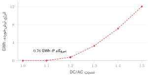
مثال 10.45 (نسبتِ DC/AC از 1.0 تا 1.5) پرسش. با منحنیِ بازدهِ اینورتر (فصلِ ۹) و کاهشِ توان با دما و ارتفاع، انرژیِ DC، بُرش و انرژیِ AC را برای نسبتهای 1.0 تا 1.5 بیابید (A-194).
پاسخ.
DC/AC ratio with the POA model, 10 x 5 MW inverters (A-194):
DC/AC MWp DC GWh clipped GWh clipped % AC GWh
1.00 50.0 96.35 0.000 0.00 94.79
1.10 55.0 105.99 0.024 0.02 104.23
1.20 60.0 115.62 0.763 0.67 112.94
1.30 65.0 125.26 3.293 2.67 119.85
1.40 70.0 134.89 7.139 5.39 125.42
1.50 75.0 144.53 12.049 8.49 129.92
Plant P's 1.20 clips about 0.7 %: the inverters are
full in the brightest hours and earn in all the others; the
best ratio comes from module and inverter prices (chapter 18)تفسیر. تا 1.1 بُرش تقریباً صفر است؛ در 1.2 حدودِ 0.7 % و از آن پس تند بالا میرود: در 1.5 حدودِ 8.5 %. اما معیار بُرش نیست؛ انرژیِ AC برای هر واحدِ هزینه است: با افزودنِ 10 % ماژول از 1.2 به 1.3، انرژیِ AC 6.1 % بالا میرود. نقطهٔ بهینه با قیمتِ ماژول و اینورتر، سقفِ اتصال (100 MWِ صادرات) و ارزشِ زمانیِ انرژی تعیین میشود (فصلهای ۱۸ و ۲۰). وارسی: \(119.85/112.94 - 1 = 6.1\ \%\) (درست).
بُرش و باتری. در سناریوی S1، انرژیِ بُرشخورده در سمتِ DCِ اینورتر میماند و باتریِ متصل به شبکهٔ AC نمیتواند آن را بگیرد؛ فقط باتریِ جفتشده در DC چنین کاری میکند. این یکی از پرسشهای معماریِ ذخیرهسازی در فصلهای ۱۹ و ۲۰ است. همچنین سقفِ صادراتِ نقطهٔ اتصال یک بُرشِ دوم در سطحِ نیروگاه میسازد که با این بُرش فرق دارد (فصلِ ۵).
- چرا بُرشِ نسبتِ 1.2 کوچک است؟
- اینورتر هنگامِ بُرش چه میکند؟
- چرا معیارِ انتخاب انرژی برای هر واحدِ هزینه است، نه کمینهٔ بُرش؟
- چرا باتریِ جفتشده در AC انرژیِ بُرشخوردهٔ اینورتر را نمیگیرد؟
10.4.19 پنجرهٔ اینورتر با تابشِ صفحهٔ آرایه
ایده. فصلِ ۹ با تابشِ افقی و قاعدهٔ NOCT نشان داد که خروجیِ 690 V با رشتههای ۲۶ ماژولی جور نیست و D-012 را گرفت: 600 V با کفِ 933 V. مجهولِ U-032 خواست همین با تابشِ صفحهٔ آرایه و مدلِ دمای بهتر دوباره سنجیده شود. ابزارِ لازم اکنون کامل است: تابشِ هِی–دیویس، تلفاتِ زاویه، دمای فایمن با باد و مدلِ تکدیودیِ برازششده، برای هر ساعتِ سال.
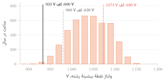
مثال 10.46 (بستنِ U-032) پرسش. ولتاژِ نقطهٔ بیشینهٔ رشته را برای هر ساعتِ سال حساب کنید و برای سه ولتاژِ خروجیِ 600، 630 و 690 V (کفِ پنجره با حاشیهٔ 10 %، A-150) ساعتها و انرژیِ زیرِ کف را بیابید.
پاسخ.
the DC window of D-012 rechecked with POA and Faiman (U-032):
string V_mp: min 906 V, median 1041 V
600 V (floor 933 V): 17 h, 0.000 % of DC energy
630 V (floor 980 V): 405 h, 0.052 % of DC energy
690 V (floor 1073 V): 3167 h, 4.912 % of DC energy
more light on the tilted plane, but the Faiman model with wind
runs cooler than the NOCT rule of chapter 9: fewer hours fall
below the floor; D-012 holds with more margin, and 690 V would
still lose about a twentieth of the energyتفسیر. با مدلِ کامل، کمینهٔ ولتاژ 906 V و فقط ۱۷ ساعت زیرِ کفِ 933 V است، با انرژیِ ازدسترفتهٔ نزدیکِ صفر؛ D-012 با حاشیهٔ بیشتری از فصلِ ۹ پابرجاست. دلیل: تابشِ صفحه بیشتر است اما دمای فایمن با باد، بهویژه در ساعتهای پرتابش، سردتر از قاعدهٔ NOCT است (مثال 10.13)؛ و ولتاژ از دما بیشتر اثر میپذیرد تا از تابش. خروجیِ 690 V هنوز حدودِ 4.9 % انرژی را میبرد. U-032 بسته میشود؛ پیری این حاشیه را کم میکند (مثال 10.40). وارسی: در شکل 10.17، ستونهای چپِ خطِ 933 V جمعاً حدودِ ۱۷ ساعتاند (۴ ساعت در ستونِ 910 V و بخشی از ستونِ 930 V).
وارسیهای دیگرِ رابطِ آرایه و اینورتر. (۱) بیشینهٔ ولتاژِ ورودی (1500 V) با ولتاژِ سردِ رشته (مثال 10.29)؛ (۲) بیشینهٔ جریانِ ورودی و جریانِ اتصالِ کوتاهِ آرایه با ۲۱ جعبهٔ 350 A؛ (۳) ولتاژِ شروع و ولتاژِ کمینهٔ کار در صبح؛ (۴) سازگاری با زمینکردنِ کارکردی و پایشِ عایق (بخش 10.4.17)؛ (۵) سقفِ توان با دمای محیط و ارتفاع (فصلِ ۹). اینها ستونهای جدولِ رابطِ آرایه و اینورتر در جدول 10.19 هستند.
- چرا مدلِ دمای فایمن ساعتهای زیرِ کف را کم کرد؟
- اگر اینورترِ 630 V انتخاب میشد، چند ساعت و چند درصد انرژی زیرِ کف بود؟
- پنج وارسیِ رابطِ آرایه و اینورتر را نام ببرید.
- چرا بستنِ یک مجهول با مدلِ بهتر هنوز «شاهدِ اندازهگیریشده» نیست؟
10.4.20 رابطهای سامانهٔ شستوشو با آرایه
ایده. روشِ شستوشو (بخشِ ت) از روزِ اولِ طراحیِ آرایه شکلِ میز، فاصلهٔ ردیفها، جادهها، آب و برق را تعیین میکند. افزودنِ ربات یا خطِ آب پس از ساخت گران یا ناممکن است. جدولِ زیر رابطها را فهرست میکند.
| رابط | الزامِ مفهومی | شاهد |
|---|---|---|
| سازه و میز | میزهای پیوسته یا پل میانِ میزها برای ربات؛ لبهٔ یکنواخت؛ ایستگاهِ پارکِ ربات در سرِ ردیف | نقشهٔ سازه با جای ریل و ایستگاه |
| ماژول | روش، فشار، جنسِ برس و آب در دستورالعملِ مجازِ سازندهٔ ماژول؛ سازگاری با پوششِ ضدبازتاب | نامهٔ تأییدِ سازنده؛ شرطِ ضمانت |
| فاصله و جاده | فاصلهٔ آزادِ میانِ ردیفها برای خودرو (7.26 m، E33)؛ جادهٔ دسترسی به هر ردیف | نقشهٔ چیدمان |
| آب | نقطههای برداشت، مخزن، کیفیتِ آب (املاحِ محلول، سختی)، زهکشی و رواناب | تحلیلِ آب؛ مجوز (فصلِ ۳۳) |
| برق و ارتباط | تغذیهٔ ربات (معمولاً ماژول و باتریِ خودش)، ارتباط با سامانهٔ پایش، زمینکردنِ ریل و ربات | نقشهٔ برق و ارتباط |
| ایمنی | فاصله از جعبهتقسیم و رابطها؛ ممنوعیتِ فشارِ زیاد روی آنها؛ کار در ارتفاع و کنارِ تجهیزِ برقدار | ارزیابیِ ریسک (فصلِ ۳۲) |
| پایش | ایستگاهِ آلودگی و ارسالِ داده برای سیاستِ ماشهای (بخش 10.5.7) | فهرستِ نقطههای پایش (فصلِ ۳۷) |
خطای رایج. «ربات را بعداً اگر بهصرفه بود اضافه میکنیم.» میزهای با فاصلههای نامنظم، اختلافِ ارتفاعِ زیاد میانِ میزها یا گیرههایی که از سطحِ شیشه بالاترند ربات را ناممکن میکنند. تصمیمِ شستوشو (D-014) باید پیش از طراحیِ تفصیلیِ سازه گرفته شود.
- سه رابطِ سازه با رباتِ شستوشو را نام ببرید.
- چرا تأییدِ سازندهٔ ماژول برای روشِ شستوشو در طراحی میآید، نه در بهرهبرداری؟
- فاصلهٔ آزادِ ردیفها را برای \(\text{GCR} = 0.5\) حساب کنید. خودروی شستوشو با پهنای 2.5 m و حاشیهٔ 1 m از هر طرف جا میشود؟
10.4.21 زنجیرهٔ انرژی و نسبتِ عملکرد
ایده. همهٔ آنچه آمد در یک زنجیرهٔ انرژی جمع میشود: از تابشِ صفحهٔ آرایه به انرژیِ شرایطِ استاندارد، سپس تلفاتِ زاویه، دما و تابشِ کم، سپس کابل و ناهمسانی، سپس اینورتر و بُرش، سپس گرد و غبار و سایه. نسبتِ عملکرد (به انگلیسی performance ratio) انرژیِ واقعی را به انرژیِ «آرمانی» (ظرفیتِ برچسب ضربِ تابشِ صفحه بر حسبِ ساعتِ تابشِ استاندارد) نسبت میدهد:
\[ \text{PR} = \frac{E_\text{AC}}{P_\text{STC}\,H_\text{POA}/G_\text{STC}}, \qquad Y_\text{f} = \frac{E_\text{AC}}{P_\text{STC}} \tag{10.18}\]
که \(H_\text{POA}\) تابشِ سالانهٔ صفحه (kWh/m²) و \(Y_\text{f}\) بازدهِ ویژه (kWh/kWp) است. نسبتِ عملکرد اثرِ سایت (تابش) را کنار میگذارد و کیفیتِ تبدیل را نشان میدهد؛ تعریفِ دقیق و تصحیحهای دماییاش در سنجشِ قراردادی را IEC 61724-1:2021 و فصلهای ۱۵ و ۵۰ میدهند.
| گام | تلفات یا تغییر | از کجا |
|---|---|---|
| تابشِ صفحه نسبت به افق | +10.4 % | مثال 10.32 |
| زاویهٔ تابش | −3.0 % | مثال 10.15 |
| دما و تابشِ کم (با زاویه) | جمعاً −7.6 % | مثال 10.59 |
| کابل و ناهمسانی | −3 % (فرضِ محافظهکارانه) | مثال 10.42، مثال 10.38 |
| اینورتر و بُرش | حدودِ −2.3 % | مثال 10.45 |
| گرد و غبار و سایهٔ ردیفها | −1.43 % و −0.07 % | مثال 10.50، مثال 10.35 |
| برف (در این فصل جدا) | حدودِ −1.9 % | مثال 10.39 |
| طیف، دسترسپذیری، تخریب، عدمِ قطعیت | در فصلهای ۱۵ و ۱۶ | — |
خطای رایج. درصدهای تلفات را با هم جمع کردن. تلفاتها ضرب میشوند: \((1 - 0.03)(1 - 0.02) = 0.9506\)، نه \(0.95\)؛ با ده گام، اختلاف قابلِتوجه میشود. خطای دیگر: یک تلفات را دو بار شمردن (مثلاً تلفاتِ زاویه در «دما و تابشِ کم» و جداگانه).
- نسبتِ عملکرد چه چیزی را کنار میگذارد و چه چیزی را نشان میدهد؟
- با \(E_\text{AC} = 111\,339\ \text{MWh}\)، \(P_\text{STC} = 60.06\ \text{MWp}\) و \(H_\text{POA} = 2150\ \text{kWh/m}^2\) نسبتِ عملکرد را حساب کنید.
- چرا برف در جدول 10.15 جدا آمده است؟
- چرا تلفاتها ضرب میشوند؟
10.5 ت. گرد و غبار و تصمیمِ شستوشو
بخشِ ت گرد و غبار را از فیزیک تا تصمیم دنبال میکند: چرا و چگونه بر ماژول مینشیند، چگونه با ایستگاهِ آلودگی اندازهگیری میشود، چه روشهایی برای شستوشو هست و هر کدام با آب، ضمانت، ایمنی، هزینه و محیط چه رابطهای دارد، فاصلهٔ بهینهٔ شستوشو چیست، و یک سالِ کامل زیرِ چند سیاستِ شستوشو چه میگذرد. پایان: تصمیمِ ثبتشدهٔ D-014. دادهٔ ایستگاه ساختگی است (A-195، بذرِ ۴۱)؛ دادهٔ واقعی از ایستگاههای سایت در فصلِ ۱۲ میآید.
10.5.1 فیزیکِ گرد و غبار
ایده. ذرههای معلق با باد جابهجا میشوند و روی شیشه مینشینند؛ آنچه میماند به اندازهٔ ذره، رطوبت و شیب بستگی دارد. سه سازوکار مهماند: (۱) نشستِ خشک در روزهای بیباران که تلفات را تقریباً خطی با زمان بالا میبرد؛ (۲) شبنم و رطوبتِ صبح که ذرهها را به شیشه میچسباند و گاهی پوستهای سیمانی میسازد که با برسِ خشک پاک نمیشود؛ (۳) باران، که بارانِ کافی شیشه را پاک میکند اما بارانِ اندک گل میسازد و گاهی وضع را بدتر میکند. منبعهای محلی (جادهٔ خاکی، کشاورزی، معدن، دودکش) و فصلِ گرد و غبار (توفانها) آهنگ را چند برابر تغییر میدهند.
مدلِ ساده. با آهنگِ آلودگی \(r_\text{s}\) (درصد در روز) در روزهای خشک، تلفات پس از \(t\) روز بیباران \(L(t) \approx r_\text{s}\,t\) است و میانگینِ آن در دورهٔ \(T\) میانِ دو پاکشدن \(r_\text{s} T/2\):
\[ L(t) = r_\text{s}\,t, \qquad \bar{L}_T = \frac{1}{T}\int_0^T r_\text{s}\,t\,\mathrm{d}t = \frac{r_\text{s} T}{2} \tag{10.19}\]
مثال 10.47 (یک ماهِ بیباران) پرسش. با \(r_\text{s} = 0.3\ \%/\text{d}\) (A-195، فصلِ خشک)، تلفاتِ پایانِ یک ماه و میانگینِ ماه چیست؟
پاسخ.
E27: soiling 0.3 %/day for 30 days: mean loss 4.5 %, final 9.0 %تفسیر. میانگینِ 4.5 % در ماهی که بیشترین انرژی را دارد (تابستانِ خشک) با تولیدِ روزانهٔ 309 MWh حدودِ 420 MWh در ماه است. وارسی: \(0.3 \times 30/2 = 4.5\) (درست).
خطای رایج. «گرد و غبار را از روی تلفاتِ نیروگاهِ همسایه برمیداریم.» آهنگِ آلودگی به خاک، باد، جاده، شیب و پوششِ شیشه بستگی دارد و حتی در یک میدانِ بزرگ از جایی به جای دیگر فرق میکند؛ عددِ طراحی از اندازهگیریِ سایت میآید.
- سه سازوکارِ نشست و پاکشدنِ گرد و غبار را نام ببرید.
- چرا بارانِ کم میتواند وضع را بدتر کند؟
- با \(r_\text{s} = 0.2\ \%/\text{d}\)، میانگینِ تلفاتِ یک دورهٔ ۴۵ روزه چیست؟
- سه منبعِ محلیِ گرد و غبار در اطرافِ یک نیروگاه را نام ببرید.
10.5.2 ایستگاهِ آلودگی و اندازهگیری
ایده. ایستگاهِ آلودگی (به انگلیسی soiling station) دو ماژول یا سلولِ مرجعِ همسان را کنارِ هم میگذارد: یکی هر روز تمیز میشود و دیگری مانندِ میدان آلوده میماند. نسبتِ جریانِ اتصالِ کوتاه (یا توانِ) آلوده به تمیز نسبتِ آلودگی \(SR\) است. ایستگاه باید در جایی نماینده از میدان، در همان شیب، و با پاککردنِ دقیق و ثبتشدهٔ ماژولِ مرجع کار کند. IEC 61724-1:2021 اندازهگیریِ آلودگی را در پایشِ عملکرد آورده است (فصلهای ۱۲ و ۳۷).
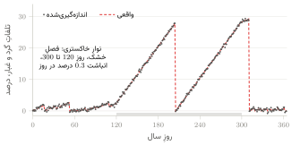
خواندنِ شکل 10.18. در فصلِ مرطوب (روزهای 0 تا 120 و 300 تا 365) باران تلفات را زیرِ چند درصد نگه میدارد. در فصلِ خشک تلفات خطی بالا میرود و فقط دو بارانِ تابستانی آن را برمیگرداند؛ بیشستوشو به حدودِ 29 % میرسد. نقطههای اندازهگیری حولِ مقدارِ واقعی پراکندهاند (نویزِ 0.3 %)؛ برآوردِ آهنگ از این نقطهها کارِ آزمایشگاهِ بخش 10.6.3 است.
دامِ اندازهگیری. (۱) اگر ماژولِ «تمیز» دیر یا ناقص پاک شود، تلفات کمتر از واقع دیده میشود. (۲) دو ماژولِ مرجع خودشان کمی ناهمساناند؛ ایستگاه باید پس از نصب و هر چند وقت یک بار با تمیز کردنِ هر دو کالیبره شود. (۳) یک ایستگاه یک نقطه است؛ برای میدانِ 70 ha دستکم دو ایستگاه در دو سوی میدان (کنارِ جاده و دور از آن) لازم است (مثال 10.60).
- ایستگاهِ آلودگی چگونه \(SR\) را میسنجد؟
- سه دامِ اندازهگیری با ایستگاه را بنویسید.
- چرا یک ایستگاه برای میدانِ بزرگ کافی نیست؟
10.5.3 روشهای شستوشو
ایده. چهار خانواده هست؛ هیچکدام همهجا بهترین نیست.
| روش | چگونه | سود | هزینه و ریسک |
|---|---|---|---|
| بیشستوشو یا کم | تکیه بر باران؛ شستوشوی گاهبهگاه پس از توفان | بیهزینه، بیآب | در فصلِ خشک تلفاتِ زیاد (مثال 10.50) |
| خشکِ دستی | برسِ نرم یا جاروی هوا | بیآب، ارزان | کندی؛ پوستهٔ چسبیده را برنمیدارد؛ خطرِ خراش و فشار بر ماژول |
| رباتیِ خشک | رباتِ روی میز با برسِ نرم، هر شب یا هر چند روز | کمترین هزینهٔ هر نوبت، بیآب، تکرارِ زیاد | سرمایه، نگهداری، سازگاری با میز (بخش 10.4.20)، تأییدِ ضمانت |
| تَرِ دستی یا با خودرو | آبِ کماملاح با برس یا فشارِ کم | بهترین برداشت، پوسته را میشوید | آب، رواناب، خودرو در میدان، ترکِ گرمایی اگر آبِ سرد روی شیشهٔ داغ |
دادههای آموزشی. برای مقایسهٔ کمّی، A-196 برای هر روش هزینهٔ هر ماژول در هر نوبت، آبِ هر ماژول و سهمِ برداشت (چند درصد از گرد و غبار را برمیدارد) میگذارد: دستیِ تَر 0.35 واحد، 1.5 L، 0.98؛ خودروی تَر 0.15 واحد، 1.0 L، 0.95؛ خشکِ دستی 0.12 واحد، بیآب، 0.85؛ رباتیِ خشک 0.03 واحد (بیسرمایه)، بیآب، 0.90.
سایش و پوششِ شیشه. پوششِ ضدبازتاب لایهای بسیار نازک است و با برسِ سخت، ذرههای سخت (کوارتز) زیرِ برس، یا شستوشوی بسیار زیاد ساییده میشود؛ پس از سایش، بازتاب و \(b_0\) بیشتر میشود (بخش 10.2.18). نشانهٔ آن افتِ آرامِ جریانِ اتصالِ کوتاه پس از شستوشوست. روشِ مجاز، جنسِ برس، فشار و بسامد را سازندهٔ ماژول باید تأیید کند (بخش 10.3.19)؛ آزمونِ پذیرشِ ربات (مثال 10.60) شاهدِ سالم ماندنِ پوشش و نبودِ ترک است.
خطای رایج. «شستوشوی بیشتر همیشه بهتر است.» هر نوبت هزینه، آب، سایش و ریسکِ ایمنی دارد؛ بهینه جایی است که هزینهٔ شستوشو و ارزشِ انرژیِ بازگشته برابر شوند (بخش 10.5.6).
- کدام روش پوستهٔ چسبیدهٔ شبنم را برمیدارد و کدام نه؟
- سهمِ برداشت چیست و چرا کمتر از یک است؟
- نشانهٔ سایشِ پوششِ ضدبازتاب در دادهها چیست؟
- چرا روشِ شستوشو باید به تأییدِ سازندهٔ ماژول برسد؟
10.5.4 آب: مقدار، کیفیت و رواناب
ایده. در سایتهای خشک، آب گرانترین و حساسترین ورودیِ شستوشوی تَر است. سه پرسش: چقدر (هر نوبت و در سال)، چه کیفیتی (املاحِ محلول و سختیِ زیاد لکهٔ سفید و رسوب بر شیشه میگذارد و اثرِ شستوشو را کم میکند؛ ممکن است تصفیهٔ آب لازم شود)، و کجا میرود (رواناب و فرسایشِ خاکِ زیرِ میزها، آلودگی با شوینده).
مثال 10.48 (آبِ یک نوبت و یک سال) پرسش. آبِ یک نوبتِ شستوشوی کاملِ نیروگاه با خودرو (1.0 L) و دستی (1.5 L) چیست؟ آبِ سالانهٔ سیاستِ «خودرو در ماشهٔ 4 %» (مثال 10.50) چقدر است؟
پاسخ.
E26: water per cleaning: 1.0 L x 109,200 = 109.2 m3; 1.5 L: 163.8 m3و سیاستِ ماشهای در سال حدودِ 1529 m³ آب مصرف میکند (مثال 10.50).
تفسیر. 1500 m³ در سال برای یک شهرِ کوچک ناچیز است اما برای یک روستای بیابانی یا یک آبخوانِ تحتِ فشار نه؛ برداشتِ آب مجوز و رضایتِ محلی میخواهد (فصلهای ۲۹ و ۳۳). اگر آب با تانکر بیاید، هزینه و ترافیکِ کامیونها هم اضافه میشود. وارسی: \(109\,200 \times 1.0\ \text{L} = 109.2\ \text{m}^3\) (درست).
شویندهها. بسیاری از سازندگانِ ماژول شوینده را مجاز نمیدانند یا فقط گونههای خاصی را؛ شوینده ممکن است پوشش، درزگیر و کپسولهکننده را آسیب بزند و رواناب را آلوده کند. پیشفرضِ این کتاب: بیشوینده، مگر با تأییدِ کتبیِ سازنده و ارزیابیِ محیطی.
- سه پرسشِ آبِ شستوشو کداماند؟
- چرا آبِ سخت اثرِ شستوشو را کم میکند؟
- آبِ یک نوبتِ دستیِ تَر برای نیمی از نیروگاه چند مترمکعب است؟
- چرا پیشفرضِ کتاب «بیشوینده» است؟
10.5.5 ایمنیِ کارِ شستوشو
ایده. شستوشو پرتکرارترین کارِ میدانیِ نیروگاهِ خورشیدی است و بیشترین ساعتِ کار را در میانِ تجهیزِ برقدار دارد. خطرها: برق (آب روی ماژولِ با شیشهٔ شکسته، کابلِ آسیبدیده یا رابطِ بد؛ آرایه همیشه برقدار است)، ارتفاع و لغزش (کار روی میز یا نردبان، سطحِ خیس)، گرما (کار در ظهرِ تابستانِ بیابان)، خودرو (رفتوآمد میانِ ردیفها، دید کم)، دستورزی (شلنگ و برس)، و برای رباتها قطعههای متحرک و بازیابیِ رباتِ گیرکرده روی میز.
کنترلها. سلسلهمراتبِ کنترل (فصلِ ۳۲): حذف و جایگزینی (رباتِ بیآب، شستوشوی شبانه برای پرهیز از گرما و شوکِ گرمایی)، کنترلِ مهندسی (فشارِ کم، فاصله از جعبهتقسیم و رابط، دسترسیِ امن به سرِ میز، مسیرِ مشخصِ خودرو)، کنترلِ مدیریتی (بازرسیِ پیش از شستوشو برای شیشهٔ شکسته و کابلِ آسیبدیده، مجوزِ کار، آموزش، کارِ دونفره)، و تجهیزاتِ حفاظتِ فردی. هیچکدام از اینها جایگزینِ رویهٔ مکتوبِ بهرهبردار نیست.
خطای رایج. «شستوشو کارِ برقی نیست، پس آموزشِ برقی نمیخواهد.» کارگرِ شستوشو هر روز کنارِ هزاران ولت DC کار میکند؛ دستِکم باید بداند کدام آسیبها (شیشهٔ شکسته، کابلِ بریده، بوی سوختگی، رابطِ ذوبشده) یعنی توقف و گزارش، نه ادامه.
شستوشوی ماژولِ آسیبدیده (شیشهٔ شکسته، پشتپوشِ ترکخورده، جعبهتقسیمِ باز) ممنوع است تا افرادِ صلاحیتدار آن را جدا و ایمن کنند. شستوشو با فشارِ زیاد روی جعبهتقسیم، رابط و کابل ممنوع است. اینها اصلاند، نه رویه؛ رویهٔ کار را بهرهبردار با ارزیابیِ ریسک مینویسد (فصلهای ۳۲ و ۵۲).
- شش خطرِ کارِ شستوشو را نام ببرید.
- برای هر سطحِ سلسلهمراتبِ کنترل یک نمونه در شستوشو بنویسید.
- کارگرِ شستوشو با دیدنِ چه نشانههایی باید کار را متوقف کند؟
10.5.6 فاصلهٔ بهینهٔ شستوشو
ایده. شستوشوی زودتر انرژیِ بیشتری برمیگرداند اما نوبتهای بیشتری میخواهد. در یک دورهٔ \(T\) روزه، با انرژیِ روزانهٔ \(E_\text{d}\)، قیمتِ \(p_\text{e}\)، آهنگِ آلودگیِ \(r_\text{s}\)، هزینهٔ هر نوبتِ \(C_\text{cl}\) و سهمِ برداشتِ \(\eta\)، هزینه در روز دو جمله دارد: هزینهٔ شستوشو که با \(T\) کم میشود و ارزشِ انرژیِ ازدسترفته که با \(T\) زیاد میشود (معادلهٔ 10.19):
\[ c(T) = \frac{C_\text{cl}}{T} + \frac{p_\text{e}\,E_\text{d}\,r_\text{s}\,\eta\,T}{2}, \qquad \frac{\mathrm{d}c}{\mathrm{d}T} = 0 \;\Rightarrow\; T^* = \sqrt{\frac{2\,C_\text{cl}}{p_\text{e}\,E_\text{d}\,r_\text{s}\,\eta}} \tag{10.20}\]
در \(T^*\) دو جمله برابرند. این همان ساختارِ «اندازهٔ سفارشِ اقتصادی» در مدیریتِ موجودی است: هزینهٔ ثابتِ هر نوبت در برابرِ هزینهای که با فاصله رشد میکند.
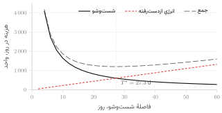
مثال 10.49 (فاصلهٔ بهینهٔ چهار روش) پرسش. با انرژیِ روزانهٔ 309 MWh (انرژیِ ACِ سالانه بر ۳۶۵)، قیمتِ 50 u/MWh (فصلِ ۵)، آهنگِ 0.30 %/d و دادههای A-196، فاصلهٔ بهینه، هزینهٔ روزانه و آبِ هر نوبت را برای چهار روش بیابید.
پاسخ.
optimal cleaning interval in the dry season,
T* = sqrt(2 C / (p E r eta)), eta = share of dirt removed
daily energy 309 MWh, price 50 u/MWh, rate 0.30 %/day (A-196):
method cost/cleaning u T* days cost per day u water m3
manual wet 38,220 41.0 1,864 164
truck wet 16,380 27.3 1,202 109
manual dry 13,104 25.8 1,017 0
robot dry 3,276 12.5 523 0
cleaning cost per day and lost energy per day are equal at T*;
the robot's low cost per pass halves the best interval; its
capital, maintenance and warranty acceptance decide (A-196)تفسیر. خودرو هر ۲۷ روز، شستوشوی دستیِ تَر (گرانتر) هر ۴۱ روز، و ربات (بسیار ارزان در هر نوبت) هر ۱۲ تا ۱۳ روز. هزینهٔ روزانهٔ ربات کمترین است بیسرمایه؛ سرمایه و نگهداریِ ربات در بخش 10.5.9 میآید. منحنیِ جمع در شکل 10.19 نزدیکِ \(T^*\) تخت است: چند روز زودتر یا دیرتر هزینه را کمی تغییر میدهد، پس برنامهٔ عملی میتواند با هفتهها و نیروی کار هماهنگ شود. وارسی:
\[ T^* = \sqrt{\frac{2 \times 16\,380}{50 \times 309.3 \times 0.003 \times 0.95}} = 27.3\ \text{d} \]
(E25، درست).
مرزهای مدل. معادلهٔ 10.20 آهنگِ ثابت و بیباران را فرض میکند؛ باران، توفانِ گرد و غبار، پوستهٔ شبنم و تغییرِ قیمت در ساعتهای مختلف (در نیروگاهِ هیبریدی با سقفِ صادرات، بخشی از انرژیِ ظهر بُرش میخورد و ارزشش کمتر است) آن را تغییر میدهند. پس \(T^*\) نقطهٔ شروع است؛ شبیهسازیِ سال (بخش 10.5.7) آزمونِ واقعی است.
- معادلهٔ 10.20 را با مشتقگیری از \(c(T)\) به دست آورید.
- اگر قیمتِ انرژی دو برابر شود، \(T^*\) چند برابر میشود؟
- چرا در \(T^*\) دو جملهٔ هزینه برابرند؟
- چرا \(T^*\)ِ ربات کوتاهتر است؟
- اگر سقفِ صادرات بخشی از انرژیِ ظهر را ببُرد، \(T^*\) کوتاهتر میشود یا بلندتر؟
10.5.7 یک سال زیرِ هفت سیاست
ایده. سیاستِ شستوشو یا تقویمی است (هر \(T\) روز) یا ماشهای (وقتی تلفاتِ اندازهگیریشده به آستانهای برسد). سیاستِ تقویمی ساده است اما در فصلِ مرطوب، که باران رایگان میشوید، نوبتها را هدر میدهد؛ سیاستِ ماشهای به ایستگاهِ آلودگی وابسته است.
مثال 10.50 (هفت سیاست روی سالِ ایستگاه) پرسش. سالِ ساختگیِ شکل 10.18 را زیرِ هفت سیاست شبیهسازی کنید (A-197): بیشستوشو؛ خودرو هر ۳۰ و هر ۱۴ روز؛ دستیِ خشک هر ۱۰ روز؛ ربات هر ۲ و هر ۱۲ روز؛ خودرو در ماشهٔ 4 %. برای هر کدام تلفاتِ میانگین، ارزشِ انرژیِ ازدسترفته، هزینهٔ شستوشو، جمع و آب را بیابید.
پاسخ.
the soiling year under seven cleaning policies (A-197):
policy loss % lost u cleaning u total u water m3
no cleaning 8.47 478,247 0 478,247 0
truck every 30 d 2.55 144,185 196,560 340,745 1,310
truck every 14 d 1.24 70,107 425,880 495,987 2,839
manual dry every 10 d 1.08 61,239 471,744 532,983 0
robot every 2 d 0.14 7,858 596,232 604,090 0
robot every 12 d 1.18 66,503 98,280 164,783 0
truck at 4 % loss 1.43 80,705 229,320 310,025 1,529
rain cleans for free in the wet season, so a fixed calendar
wastes cleanings there; a trigger on measured soiling cleans
only when it pays and needs the station data of d_soildataتفسیر. سه درس: (۱) بیشتر بهتر نیست: خودرو هر ۱۴ روز تلفات را نصف میکند اما جمعِ هزینه از هر ۳۰ روز بیشتر است؛ ربات هر ۲ روز تلفات را تقریباً صفر میکند اما گرانترین است. (۲) ماشه از تقویم بهتر است: خودرو در ماشهٔ 4 % با هزینهای نزدیکِ هر ۳۰ روز، تلفات را از 2.55 به 1.43 % میرساند، چون در فصلِ مرطوب نمیشوید و در فصلِ خشک بهموقع میشوید. (۳) ربات با فاصلهٔ درست کمترین جمع را دارد (پیش از سرمایه). وارسی: جمعِ خودرو در ماشه \(80\,705 + 229\,320 = 310\,025\) (درست).
خطای رایج. «سیاستِ ماشهای پیچیده است؛ تقویم بس است.» ماشه یک ایستگاهِ آلودگیِ پایششده و یک قاعدهٔ ساده («اگر تلفات بیش از 4 % و پیشبینیِ باران در هفتهٔ آینده نیست، بشوی») میخواهد؛ دادهاش همان است که برای گزارشِ عملکرد هم لازم است.
- چرا خودرو هر ۱۴ روز از هر ۳۰ روز گرانتر تمام میشود؟
- سیاستِ ماشهای در فصلِ مرطوب چه میکند که تقویم نمیکند؟
- قاعدهٔ ماشهای را با پیشبینیِ باران بهتر کنید.
- آبِ سالانهٔ هر سیاست را از مثال 10.50 بخوانید و مقایسه کنید.
10.5.8 توفانِ گرد و غبار و شستوشوی اضطراری
ایده. یک توفانِ گرد و غبار میتواند در یک شب چند درصد تلفات بیفزاید، مستقل از آهنگِ روزانه. پرسشِ بهرهبردار: همین حالا بشویم یا تا نوبتِ بعدی (یا بارانِ بعدی) صبر کنیم؟ پاسخ یک مقایسهٔ ساده است: ارزشِ انرژیِ ازدسترفته در روزهایی که تا نوبتِ بعد مانده، در برابرِ هزینهٔ یک نوبتِ اضافه.
مثال 10.51 (شستن یا صبر کردن) پرسش. توفانی در فصلِ خشک 5 % تلفات میافزاید. با انرژیِ روزانهٔ 309 MWh و 50 u/MWh، ارزشِ روزانهٔ این تلفات چیست؟ یک نوبتِ خودرو (16,380 u) پس از چند روز خودش را پس میدهد؟
پاسخ.
E36: dust storm +5 %: lost value 773 u/day;
one truck pass (16,380 u) pays back in 21.2 daysتفسیر. اگر نوبتِ برنامهریزیشدهٔ بعدی یا بارانِ محتمل بیش از حدودِ سه هفته دور است، شستوشوی فوری بهصرفه است؛ اگر نزدیک است، صبر کنید. این همان منطقِ سیاستِ ماشهای است با یک افزوده: پیشبینیِ باران و تقویمِ شستوشو بخشی از قاعدهاند. با ربات، که نوبتِ اضافهاش ارزان است، پاسخ تقریباً همیشه «همین امشب» است. وارسی: \(0.05 \times 309.3 \times 50 = 773\) و \(16\,380/773 = 21.2\) (درست).
- اگر توفان 10 % تلفات بیفزاید، مرزِ بازگشت چند روز است؟
- پیشبینیِ باران در این تصمیم چه نقشی دارد؟
- چرا با ربات پاسخ تقریباً همیشه «فوری» است؟
10.5.9 تصمیمِ شستوشو برای نیروگاهِ P
ایده. تصمیم با هزینه آغاز میشود اما با آن تمام نمیشود. ربات سرمایه میخواهد که در مثال 10.50 نیامد؛ آب، ضمانت، ایمنی و پایداری در برابرِ پوستهٔ چسبیده و توفان هم معیارند. دو گام: (۱) سرمایهٔ سربهسر ربات در برابرِ بهترین گزینهٔ بیسرمایه؛ (۲) ماتریسِ تصمیمِ وزندار با همهٔ معیارها و تحلیلِ حساسیت (روشِ D-011 در فصلِ ۸).
مثال 10.52 (ربات یا خودرو: سرمایهٔ سربهسر) پرسش. ربات هر ۱۲ روز چقدر در سال از خودرو در ماشهٔ 4 % ارزانتر است؟ با عمرِ ۱۵ سال و نرخِ 7 %، سرمایهٔ سربهسر چیست؟ برای ۲۱۰۰ میزِ ۵۲ ماژولی (بخش 10.4.3)، هر ربات چقدر میتواند بیرزد؟
پاسخ.
robot or truck? (yearly totals of d_policies, A-197):
robot every 12 d saves 145,242 u/yr against the truck
on a 4 % trigger, before the robots' own capital and upkeep
break-even capital over 15 years at 7 %: 1.32 million u
= 12.1 u per module, or 630 u per robot for 2100 table rows of 52 modules
if robots cost less (with upkeep) and the module maker accepts
them in the warranty, robots win; else the truck on a trigger
water saved by robots: about 1,500 m3 a year (d_policies)تفسیر. اگر هر ربات (با نصب و نگهداری) کمتر از حدودِ 630 u تمام شود، ربات بهصرفه است. این عدد از قیمتِ پیشنهادی سنجیده میشود، نه از کتاب. ربات 1500 m³ آب در سال صرفهجویی میکند که در سایتِ کمآب ارزشی جدا از پول دارد. وارسی: \((1 - 1.07^{-15})/0.07 = 9.108\) و \(145\,242 \times 9.108 = 1.32 \times 10^6\) (درست).
مثال 10.53 (ماتریسِ تصمیمِ وزندار و حساسیت) پرسش. چهار گزینه را با پنج معیار (هزینهٔ سالانه با سرمایهٔ سالانهشدهٔ ربات، آب، ریسکِ ضمانت و پوشش، ایمنی، پایداری در برابرِ پوسته و توفان) و وزنهای آموزشی (A-209) امتیاز دهید. سپس سرمایهٔ ربات را از 400 به 700 u و وزنِ آب را از 0.20 به 0.05 تغییر دهید.
پاسخ.
cleaning decision matrix (A-209), robot capital 400 u each, water weight 0.20:
option cost u/yr cost water warr. safety robust score
no cleaning 478,247 1.0 5 5 5 1 3.00
truck every 30 d 340,745 3.8 2 4 2 4 3.23
truck at 4 % trigger 310,025 4.4 2 4 3 4 3.60
robot every 12 d 282,210 5.0 5 3 4 2 4.10
highest score: robot every 12 d (4.10)cleaning decision matrix (A-209), robot capital 700 u each, water weight 0.20:
option cost u/yr cost water warr. safety robust score
no cleaning 478,247 1.0 5 5 5 1 3.00
truck every 30 d 340,745 4.3 2 4 2 4 3.39
truck at 4 % trigger 310,025 5.0 2 4 3 4 3.80
robot every 12 d 370,281 3.6 5 3 4 2 3.60
highest score: truck at 4 % trigger (3.80)cleaning decision matrix (A-209), robot capital 400 u each, water weight 0.05:
option cost u/yr cost water warr. safety robust score
no cleaning 478,247 1.0 5 5 5 1 2.80
truck every 30 d 340,745 3.8 2 4 2 4 3.43
truck at 4 % trigger 310,025 4.4 2 4 3 4 3.85
robot every 12 d 282,210 5.0 5 3 4 2 3.80
highest score: truck at 4 % trigger (3.85)تفسیر. با رباتهای 400 u، ربات برنده است؛ با 700 u یا وقتی آب کماهمیت است، خودرو در ماشه. تصمیم به دو عددِ نامعلوم حساس است: قیمتِ ربات و ارزشِ آب. پس تصمیمِ درست انتخابِ امروز نیست، قاعدهٔ انتخاب است که با پیشنهادها اجرا میشود. امتیازهای غیرهزینهای داوریاند و باید با ذینفعان (بهرهبردار، ایمنی، محیطِ زیست) بازبینی شوند؛ ماتریس داوری را آشکار میکند، نه عینی. وارسی: امتیازِ هزینه خطی است، از ۱ برای گرانترین تا ۵ برای ارزانترین گزینه؛ برای خودرو در ماشه در جدولِ نخست:
\[ s = 1 + 4\,\frac{c_\text{max} - c}{c_\text{max} - c_\text{min}} = 1 + 4 \times \frac{168\,222}{196\,037} = 4.4 \]
(درست).
تصمیمِ D-014. پایهٔ شستوشوی نیروگاهِ P:
- طراحی برای ربات: میزها پیوسته و همتراز با جای ایستگاهِ ربات در سرِ ردیف طراحی میشوند (جدول 10.14)؛ این هزینهٔ کمی دارد و گزینه را باز نگه میدارد.
- دو ایستگاهِ آلودگی از راهاندازی، با داده در سامانهٔ پایش؛ سیاستِ ماشهای از روزِ اول.
- قاعدهٔ انتخاب در خرید: اگر قیمتِ هر ربات با نصب و نگهداری زیرِ سرمایهٔ سربهسرِ بهروزشده باشد و سازندهٔ ماژول ربات را کتباً در ضمانت بپذیرد، ربات هر حدودِ ۱۲ روز در فصلِ خشک؛ وگرنه خودروی تَر در ماشهٔ 4 %. در هر دو حالت، شستوشوی تَرِ ماشهای برای پوستهٔ پس از شبنم و توفان میماند.
- بیشوینده، آبِ با کیفیتِ تأییدشده، و ارزیابیِ ریسکِ ایمنی پیش از هر روش (بخش 10.5.5).
- مجهولها: U-033 قیمت و نگهداریِ ربات و پذیرشِ سازندهٔ ماژول؛ U-034 منبع، کیفیت و مجوزِ آب؛ U-035 آهنگِ واقعیِ آلودگی از ایستگاههای سایت (فصلهای ۱۲ و ۵۲).
- سرمایهٔ سربهسر را برای عمرِ ۱۰ سال حساب کنید.
- چرا تصمیمِ D-014 «قاعدهٔ انتخاب» است نه «انتخاب»؟
- دو عددِ نامعلومی را که تصمیم به آنها حساس است نام ببرید.
- چرا طراحیِ میز برای ربات پیش از تصمیمِ نهایی معقول است؟
- یک معیارِ دیگر برای ماتریس پیشنهاد کنید (مثلاً اشتغالِ محلی) و بگویید وزنش را چه کسی تعیین میکند.
10.6 ث. شاهد و آزمایشگاهِ طراحی
بخشِ ث چهار کارِ عملی را با داده و کد انجام میدهد: دادههای فلشِ یک محموله را با بازاندازهگیریِ آزمایشگاه میسنجد و دربارهٔ انطباق تصمیم میگیرد؛ آهنگِ آلودگی را از دادهٔ ایستگاه برآورد میکند؛ برنامهٔ اندازهٔ رشته را با آزمونهای مرزی اجرا میکند؛ و برنامهٔ بازرسیِ ماژول و سامانهٔ شستوشو را میسازد. در پایان، گواهی را از پذیرشِ پروژه جدا میکند و مرزهای مدلهای فصل را میشمارد.
10.6.1 دادهٔ فلش، عدمِ قطعیت و انطباق
ایده. محمولهای با برچسبِ 550 W رسیده و دادهٔ فلشِ کارخانه برای هر سریال داده شده است. خریدار ۱۲ ماژول را به آزمایشگاهِ مستقل (ISO/IEC 17025:2017) میفرستد. دو پرسش: (۱) آیا میانگینِ توانِ محموله با برچسب منطبق است؟ (۲) فلشِ کارخانه با آزمایشگاه چقدر فرق دارد؟ پاسخِ پرسشِ نخست سه حالت دارد (فصلِ ۲، بخش 2.4.5.6): انطباق ثابت شد (میانگین منهای عدمِ قطعیت بالای حد)، عدمِ انطباق ثابت شد (میانگین بهعلاوهٔ عدمِ قطعیت زیرِ حد)، یا هیچکدام (حد درونِ بازهٔ عدمِ قطعیت)، که فقط قاعدهٔ تصمیمِ قرارداد آن را میبندد.
عدمِ قطعیتِ میانگینِ نمونه. دو جزء دارد: کالیبراسیونِ آزمایشگاه (خطای سیستماتیک که با میانگینگیری کم نمیشود) و پراکندگیِ نمونه (که با \(\sqrt{n}\) کم میشود). با عدمِ قطعیتِ استانداردِ \(u_\text{cal}\) و انحرافِ معیارِ نمونهٔ \(s\):
\[ U_{\bar P} = 2\sqrt{u_\text{cal}^2 + \left(\frac{s}{\sqrt{n}}\right)^2} \tag{10.21}\]
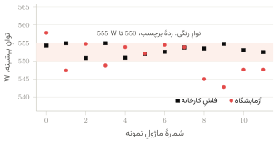
مثال 10.54 (۱۲ ماژول در آزمایشگاه) پرسش. دادهٔ ساختگیِ A-198 (بذرِ ۴۳): ۱۲۰ ماژولِ 550 W با فلشِ کارخانه؛ ۱۲ تا بهتصادف با عدمِ قطعیتِ استانداردِ 0.8 % (گستردهٔ 1.6 %) بازاندازهگیری شدهاند. نسبتِ آزمایشگاه به کارخانه، عدمِ قطعیتِ میانگین و حکمِ انطباق را بیابید.
پاسخ.
120 modules labelled 550 W (class 550.0 .. 555.0 W), A-198:
factory flash: mean 552.9 W, min 550.3, max 554.9
laboratory re-measurement of 12: mean 550.5 W, spread (1 s) 4.6 W
lab / factory on the same 12: 0.9952
expanded uncertainty of the sample mean (k 2) +-9.2 W
conformity proven (mean - U >= 550 W)? 541.3 W -> no
non-conformity proven (mean + U < 550 W)? 559.7 W -> no
neither: the result lies in the zone of uncertainty and only
the decision rule written in the contract settles it
individual lab values below 550 W: 6 of 12
a lab result a little under the label is not by itself a
defect: the label is the maker's flasher with its own
calibration; the contract says which measurement decidesتفسیر. میانگینِ آزمایشگاه 550.5 W است و بازهٔ 541.3 تا 559.7 W حدِ 550 W را دربرمیگیرد: نه انطباق ثابت است نه عدمِ انطباق. شش ماژول از دوازده زیرِ 550 Wاند، اما این خودش عیب نیست؛ هر اندازهگیریِ تکی ±1.6 % یعنی حدودِ ±9 W عدمِ قطعیت دارد. نسبتِ 0.995 نشان میدهد فلشِ کارخانه حدودِ 0.5 % بالاتر از آزمایشگاه میخواند: اگر همین نسبت در نمونههای بیشتر تأیید شود، یک سوگیریِ کالیبراسیون است که باید با سازنده حل شود (بازکالیبراسیون، جبرانِ مالی، یا ردهبندیِ دوباره). وارسی: \(550.5 - 9.2 = 541.3\) و \(550.5 + 9.2 = 559.7\) (درست).
قاعدهٔ تصمیم را پیش از اندازهگیری بنویسید. قرارداد باید بگوید: کدام آزمایشگاه، چند نمونه با چه روشِ انتخاب، پس از کدام پایدارسازی (بخش 10.3.14)، با کدام تصحیحِ دما و تابش (IEC 60891:2021)، با کدام ردهٔ شبیهساز (IEC 60904-9:2020)، و اینکه حالتِ «هیچکدام» به سودِ کدام طرف است یا چه آزمونِ دیگری (نمونهٔ بزرگتر) میخواهد.
- سه حالتِ حکمِ انطباق را با مثال 10.54 توضیح دهید.
- چرا عدمِ قطعیتِ کالیبراسیون با افزایشِ \(n\) کم نمیشود؟
- با معادلهٔ 10.21، اگر \(n\) به ۴۸ برسد و \(s\) و \(u_\text{cal}\) همان بمانند، \(U\) چه میشود؟
- نسبتِ 0.995 برای محمولهٔ ۱۰۹٬۲۰۰ ماژولی چند کیلوواتپیک است؟
- پنج بندِ قاعدهٔ تصمیمِ قراردادی را بنویسید.
10.6.2 منحنیِ \(I\)–\(V\) در میدان و برگرداندن به شرایطِ استاندارد
ایده. در ساختگاه، ماژول یا رشته با ردیابِ منحنی (به انگلیسی I-V curve tracer) در تابش و دمای همان لحظه اندازهگیری میشود و برای مقایسه با برچسب باید به شرایطِ استاندارد برگردانده شود. سادهترین قاعده توان را با نسبتِ تابش و ضریبِ دمایی تصحیح میکند:
\[ P_\text{STC} = P_\text{meas}\,\frac{G_\text{STC}}{G_\text{meas}}\,\frac{1}{1 + \gamma\,(T_\text{meas} - 25)} \tag{10.22}\]
IEC 60891:2021 چند روشِ دقیقتر برای کلِ منحنی میدهد. اما بزرگترین منبعِ خطا اغلب نه قاعده، بلکه حسگرهاست: تابشسنجِ صفحهٔ آرایه و دماسنجِ پشتِ ماژول (که از سلول سردتر است، بخش 10.2.16).
مثال 10.55 (یک نقطهٔ میدانی و چهار حالتِ حسگر) پرسش. ماژولی در 850 W/m² و سلولِ 48 °C اندازهگیری شده است (نقطهٔ ساختگی از مدل با نویزِ 0.3 %، A-210). توانِ برگردانده با معادلهٔ 10.22 و \(\gamma = -0.35\ \%/\text{K}\) را با حسگرهای درست، تابشسنجِ 1.5 % بالاخوان، دماسنجِ 2 K پایینخوان و هر دو بیابید.
پاسخ.
field I-V point: G 850 W/m2, cell 48 C, measured P_max 433.0 W (A-210):
sensors G read T read P_STC W
true irradiance and temperature 850 48.0 554.0
irradiance sensor +1.5 % 863 48.0 545.8
back-of-module sensor 2 K low 850 46.0 549.8
both biases 863 46.0 541.7
the module's true STC power is 550.1 W; the linear rule with
the data-sheet gamma differs from the fitted model (-0.32 %/K);
sensor bias moves the result more than the rule does: field
checks rank modules, the laboratory decides (section E)تفسیر. با حسگرهای درست، قاعدهٔ خطی 0.7 % بیشتر میدهد چون ضریبِ −0.35 %/Kِ برگهٔ داده از ضریبِ واقعیِ مدل (−0.32 %/K) بزرگتر است؛ خطای تابشسنج 1.5 % و خطای دماسنج 0.7 % اضافه میکنند و با هم نتیجه را 2.2 % پایین میبرند. پس اندازهگیریِ میدانی برای رتبهبندی ماژولها و یافتنِ ماژولِ معیوب عالی است، اما برای حکمِ انطباق آزمایشگاه با شبیهسازِ ردهبندیشده تصمیم میگیرد (مثال 10.54). وارسی: \(433.0 \times 1000/850/(1 - 0.0035 \times 23) = 554.0\ \text{W}\) (درست).
- معادلهٔ 10.22 را برای 700 W/m²، سلولِ 40 °C و 380 W اندازهگیریشده به کار ببرید.
- چرا دماسنجِ پشتِ ماژول خطای سیستماتیک دارد و جهتش چیست؟
- اندازهگیریِ میدانی برای چه کاری عالی و برای چه کاری ناکافی است؟
10.6.3 دادهٔ ایستگاهِ آلودگی و آهنگِ آلودگی
ایده. آهنگِ آلودگی شیبِ تلفات در دورههای بیباران است. برنامه دورههای دستکم دهروزهٔ بیباران را مییابد و در هر یک یک خط با کمترین مربعات (فصلِ ۳، بخش 3.3.3) برازش میدهد؛ شیبِ خط آهنگِ آن دوره است.
def estimate_rates(d, measured, rain):
"""Soiling rate as the slope of the measured loss in each rain-free
spell of at least ten days (least squares per spell)."""
rates, spell = [], []
for k in range(len(d)):
if rain[k]:
if len(spell) >= 10:
rates.append((spell[0], np.polyfit(d[spell], measured[spell], 1)[0]))
spell = []
else:
spell.append(k)
if len(spell) >= 10:
rates.append((spell[0], np.polyfit(d[spell], measured[spell], 1)[0]))
return ratesمثال 10.56 (آهنگِ آلودگی از یک سالِ ایستگاه) پرسش. سالِ ساختگیِ ایستگاه (A-195) را تحلیل کنید: روزهای باران، میانگینِ تلفاتِ بیشستوشو، بدترین روز، و آهنگِ برآوردشدهٔ فصلِ خشک و مرطوب را با مقدارِ واقعیِ مدل مقایسه کنید.
پاسخ.
soiling station, synthetic year (seed 41, A-195):
rain days 18 (heavy 14); mean soiling loss without cleaning 8.47 %
worst day 29.3 % (day 310)
rain-free spells of 10+ days: 7
estimated rate, dry season 0.294 %/day (true 0.300)
estimated rate, wet season 0.127 %/day (true 0.100)
the station measures the soiling of its own glass and place:
dust varies across a large plant, so two or more stationsتفسیر. آهنگِ فصلِ خشک با دقتِ خوبی بازیافته شد (0.294 در برابرِ 0.300 %/d): دورههای بلند و نویزِ کم. آهنگِ فصلِ مرطوب 27 % بیش از مقدارِ واقعی است: دورههای بیبارانِ کوتاه و بارانِ اندک که فقط نیمی از گرد و غبار را میشوید شیب را بالا میبرند. درس: برآورد در فصلی که داده کم است ناپایدار است؛ گزارش باید عدمِ قطعیتِ آهنگ را هم بدهد و تصمیمِ شستوشو بر آهنگِ فصلِ خشک، که دادهاش بیشتر است، تکیه کند. وارسی: میانگینِ تلفاتِ بیشستوشو 8.47 % همان عددِ نخستین سطرِ مثال 10.50 است (درست).
- چرا برنامه فقط دورههای دهروزه یا بلندتر را برازش میدهد؟
- چرا آهنگِ فصلِ مرطوب بیش از مقدارِ واقعی برآورد شد؟
- چگونه عدمِ قطعیتِ آهنگ را از چند دوره برآورد میکنید؟
10.6.4 برنامهٔ اندازهٔ رشته با آزمونهای مرزی
ایده. برنامهٔ اندازهٔ رشته ابزارِ طراحی است و باید مانندِ هر ابزارِ دیگری آزموده شود: نه فقط با یک حالتِ معمول، بلکه با حالتهای مرزی که حکم را عوض میکنند. تابعِ string_limits (بخش 10.4.1) را با پنج حالت میآزماییم: رشتهٔ طراحی، یک ماژول بیشتر، همان در سایتِ سردتر، دو ماژول بیشتر، و رشتهٔ طراحی روی بامِ داغ.
مثال 10.57 (پنج حالتِ مرزی) پرسش. حکمِ هر پنج حالت را با برنامه بیابید و آنها را بهصورتِ آزمونِ خودکار بنویسید تا هر تغییرِ آیندهٔ برنامه یا برگهٔ داده که حکم را عوض کند، آشکار شود.
پاسخ.
string checks at the boundaries (the tests of section E):
case V_oc cold V_mp hot verdict
26 modules, -15 C / 72 C 1436 V 918 V below window
27 modules, -15 C / 72 C 1492 V 954 V ok
27 modules, -25 C (colder site) 1527 V 954 V over 1500 V
28 modules, -15 C 1547 V 989 V over 1500 V
26 modules, 80 C cell (roof) 1436 V 889 V below windowdef test_string_limits_boundaries():
"""The string checks of section E: each boundary case gives the
expected verdict (1500 V system, 933 V floor, A-190)."""
from companion.ch10.examples_c import string_limits
ok = string_limits(26, -15.0, 72.0)
assert ok["ok_v_sys"] and ok["v_oc_cold"] < 1440 # 1436 V
assert not ok["ok_floor"] # 918 V: static worst case
assert string_limits(27, -15.0, 72.0)["ok_floor"] # 954 V
assert not string_limits(27, -25.0, 72.0)["ok_v_sys"] # 1527 V
assert not string_limits(28, -15.0, 72.0)["ok_v_sys"] # 1547 V
hot_roof = string_limits(26, -15.0, 80.0)
assert hot_roof["v_mp_hot"] < ok["v_mp_hot"] # 889 V
assert ok["i_sc_max"] == pytest.approx(17.09, abs=0.01)تفسیر. رشتهٔ ۲۷ ماژولی در سایتِ ما «درست» است اما در سایتی 10 K سردتر از 1500 V میگذرد؛ همان برنامه با یک ورودیِ دیگر حکمِ ایمنی را عوض میکند. رشتهٔ ۲۶ ماژولی روی بامِ داغ (سلولِ 80 °C) 44 V زیرِ کف است: طراحیِ نیروگاهِ زمینی برای بام قابلِانتقال نیست. آزمونها این حکمها را قفل میکنند: اگر کسی ضریبِ دمایی یا کفِ پنجره را عوض کند، آزمونِ قرمز توضیح میخواهد. وارسی: \(1500 - 1492 = 8\ \text{V}\) حاشیه برای ۲۷ ماژول در −15 °C و \(1527 > 1500\) در −25 °C (درست).
خطای رایج. «برنامه را با یک مثال وارسی کردم.» یک مثال فقط یک نقطه است؛ خطاهای علامت (مانندِ \(T - T_\text{ref}\)ِ منفی)، گرد کردنِ \(N\) و مقایسهٔ اشتباهِ \(V_\text{oc}\) با \(V_\text{mp}\) معمولاً در مرزها پیدا میشوند.
- چرا حالتِ «یک ماژول بیشتر» یک آزمونِ مرزی است؟
- یک آزمونِ مرزیِ ششم پیشنهاد کنید که خطای علامتِ دما را بگیرد.
- اگر برگهٔ دادهٔ ماژولِ دیگری با ضریبِ \(V_\text{oc}\)ِ −0.25 %/K بیاید، کدام آزمونها ممکن است عوض شوند؟
10.6.5 برنامهٔ بازرسیِ ماژول و سامانهٔ شستوشو
ایده. برنامهٔ بازرسی (به انگلیسی inspection and test plan) برای هر مرحله میگوید چه بازرسی میشود، چه مقدار (صددرصد یا نمونه)، با چه معیاری، چه کسی شاهد است و چه سندی میماند. پایهٔ آن نقشهٔ جزء و خرابیِ جدول 10.11 است.
| مرحله | بازرسی یا آزمون | مقدار | معیار و سند | شاهد |
|---|---|---|---|---|
| ممیزیِ کارخانه (پیش از خرید) | سامانهٔ کیفیت، دروازهها، کنترلِ فرایند، فهرستِ مواد | یک بار و دورهای | گزارشِ ممیزی (فصلِ ۴۰) | خریدار یا نمایندهٔ او |
| حینِ تولید | تطابقِ مواد با فهرستِ تأییدشده؛ دروازهها | نمونه در هر شیفت | فهرستِ وارسی؛ سوابقِ دسته | بازرسِ خریدار |
| پیش از حمل | دادهٔ فلش و تصویرِ هر سریال؛ برچسب و بستهبندی | صددرصدِ داده؛ نمونهٔ فیزیکی | فایلِ داده؛ گزارشِ پیش از حمل | بازرسِ خریدار |
| دریافت در ساختگاه | پلمب، نشانگرِ ضربه، پالت، شیشه، سریالها | صددرصد | گزارشِ دریافت؛ عکس | پیمانکار و کارفرما |
| دریافت در ساختگاه | تصویرِ الکترولومینسانس | یک پالت در هر کانتینر | معیارِ ترکِ قرارداد | آزمایشگاهِ سیار |
| دریافت (آزمایشگاه) | فلشِ مستقل | ۱۲ ماژول در هر 10 MWp | قاعدهٔ تصمیمِ قرارداد (مثال 10.54) | آزمایشگاهِ تأییدشده |
| نصب | گشتاورِ گیرهها، جفتِ رابطها، مسیرِ کابل | نمونه در هر میز | فهرستِ وارسی؛ دستورالعملِ سازنده | ناظر |
| راهاندازی | قطبیت، ولتاژِ مدارِ باز، جریان، عایق، منحنی و تصویرِ گرمایی | هر رشته (منحنی و تصویر نمونه) | IEC 62446-1:2016+AMD1:2018؛ گزارشِ راهاندازی | مهندسِ راهاندازی |
| سامانهٔ شستوشو | پذیرشِ ربات یا روش: نسبتِ برداشت، پوشش، ترک | یک ردیفِ آزمایشی، یک ماه | مثال 10.60 | بهرهبردار و سازندهٔ ماژول |
| بهرهبرداری | تصویرِ گرمایی، پایشِ رشته، ایستگاهِ آلودگی | دورهای و پیوسته | IEC TS 62446-3:2017؛ گزارشهای پایش | بهرهبردار |
تفسیر. برنامه لایهلایه است: هیچ مرحلهای همهٔ خرابیها را نمیگیرد، اما هر سازوکارِ جدول 10.10 دستکم در یک لایه شاهد دارد. عددهای «مقدار» آموزشیاند (A-199)؛ اندازهٔ نمونه با منطقِ مثال 10.20 و ریسکِ پروژه تعیین میشود. آزمونهای راهاندازی برنامه است، نه دستورِ کار؛ رویههای برقدار با مجوز و افرادِ صلاحیتدار اجرا میشوند (فصلهای ۴۹ و ۵۰).
- پنج پرسشِ هر ردیفِ برنامهٔ بازرسی کداماند؟
- کدام ردیف ریزترکِ حمل را میگیرد و کدام ریزترکِ نصب را؟
- چرا دادهٔ فلش و تصویرِ هر سریال پیش از حمل خواسته میشود؟
- یک ردیف برای «برقگیرِ جعبهٔ تجمیع» بنویسید.
10.6.6 گواهی در برابرِ پذیرشِ پروژه
ایده. گواهیِ محصول و پذیرشِ پروژه پاسخ به دو پرسشِ متفاوتاند. گواهی میگوید این طرح در آزمونهای استاندارد ضعفِ شناختهشدهای نشان نداد (جدول 10.12). پذیرشِ پروژه میگوید این محموله، این نصب و این آرایه با قرارداد و طراحیِ پروژه منطبق است.
| پرسش | پاسخ از گواهی؟ | پاسخ از کجا |
|---|---|---|
| آیا طرحِ ماژول ضعفِ زودرسِ شناختهشده دارد؟ | بله | گزارشهای IEC 61215-1:2021 و IEC 61730-1:2023 |
| آیا ماژولهای تحویلی همان موادِ گواهیشده را دارند؟ | نه | ممیزی، بازرسیِ حینِ تولید، اسنادِ دسته |
| آیا توانِ محموله با برچسب منطبق است؟ | نه | فلشِ مستقل با قاعدهٔ تصمیم |
| آیا ماژولها در حمل آسیب دیدهاند؟ | نه | بازرسیِ دریافت، تصویرِ الکترولومینسانس |
| آیا آرایه درست نصب و سیمکشی شده است؟ | نه | آزمونهای راهاندازی |
| آیا ماژول در برابرِ پتانسیلِ این آرایه پایدار است؟ | تا حدی | گزارشِ آزمونِ پتانسیل برای قطبیتِ پروژه |
| آیا نیروگاه انرژیِ قولداده را میدهد؟ | نه | آزمونِ عملکرد (فصلِ ۵۰) |
خطای رایج. «پیمانکار گواهیها را داد، پس ماژولها پذیرفتهاند.» گواهی شرطِ ورود به فهرستِ خرید است، نه شاهدِ پذیرش. پذیرش با شاهدِ پروژه انجام میشود و در دفترِ سندها ثبت میشود.
- گواهی به کدام پرسش پاسخ میدهد و پذیرش به کدام؟
- سه پرسشِ پذیرش را نام ببرید که گواهی پاسخ نمیدهد و شاهدِ هر کدام را بگویید.
- چرا آزمونِ پتانسیل «تا حدی» از گواهی پاسخ میگیرد؟
10.6.7 مرزهای مدلهای این فصل
ایده. هر مدلِ این فصل برای یک پرسش ساخته شده و جایی میشکند. فهرستِ زیر مرزها را میشمارد تا در فصلهای ۱۵ و ۱۶، که برآوردِ انرژی و عدمِ قطعیتِ رسمی ساخته میشود، یکییکی بسته شوند.
- مدلِ تکدیودی به برگهٔ داده برازش شد، نه به اندازهگیری؛ ضریبِ توانِ مدل حدودِ 9 % با برگهٔ داده فرق دارد (−0.319 در برابرِ −0.35 %/K) (مثال 10.8).
- طیف نادیده گرفته شد (بخش 10.2.19).
- دمای فایمن با ضریبهای فرضی و بادِ برونیابیشده از 100 m به 2 m؛ اینرسیِ گرماییِ ماژول در مدل نیست.
- مدلِ آسمانِ هِی–دیویس با دادهٔ ساعتی؛ مدلهای دیگر در صفحههای پرشیب چند درصد فرق میکنند.
- سایهٔ ردیفها فقط برای نورِ مستقیم؛ تلفاتِ پخشیده و بازتابِ زمین نیامد.
- ناهمسانی با پراکندگیهای فرضی؛ ناهمسانیِ دمایی و آلودگیِ ناهمسان کمّی نشد.
- گرد و غبار با یک سالِ ساختگی و یک ایستگاه؛ تغییرِ سالبهسال و پوستهٔ شبنم نیامد.
- برف با رویدادهای فرضی؛ بارِ واقعی از آییننامه.
- کابل و اینورتر با مقدارهای آموزشی؛ دسترسپذیری، تخریب و عدمِ قطعیت در فصلِ ۱۵.
- کدام سه مرز بیشترین اثر را بر برآوردِ انرژیِ نیروگاهِ P دارند؟ چرا؟
- برای مرزِ ۱ چه اندازهگیریای پیشنهاد میکنید؟
- کدام مرز با یک سال دادهٔ ایستگاهِ واقعی بسته میشود؟
10.7 نیروگاهِ P: سه مثالِ یکپارچه
سه مثالِ زیر ابزارِ فصل را روی بخشِ خورشیدیِ نیروگاهِ P میبرند: یک ماژول در یک ساعت، طراحیِ آرایه با زنجیرهٔ انرژیِ سالانه، و پایهٔ پذیرشِ ماژول و سامانهٔ شستوشو. همه بر پایهٔ فرضهای A-183 تا A-210 (فرضی یا ساختگی)، تصمیمهای D-012 تا D-014 و بستهٔ دادهٔ 1.1.0ِ سناریوی S0 هستند.
برنامه:
python -m companion.ch10.integratedمثال 10.58 (مقدماتی: یک ماژول در ساعتِ ۱۳ یک روزِ تابستان) پرسش. برای ساعتِ ۱۳ روزِ ۲ تیر (۲۳ ژوئن) از بستهٔ داده: تابشِ افقی را به سه جزءِ صفحهٔ آرایه ببرید، تلفاتِ زاویه را کم کنید، دمای سلول را با فایمن بیابید، و توان و ولتاژِ یک ماژول را با مدلِ تکدیودی حساب کنید. با قاعدهٔ خطی و مدلِ فصلِ ۹ مقایسه کنید.
پاسخ.
one module at 13:00 on 23 June (data pack 1.1.0, S0):
GHI 980 W/m2 -> POA 961 (beam 796, sky 156, ground 9)
after incidence losses 948 W/m2; air 37.4 C, wind at 2 m 2.8 m/s
Faiman cell temperature 59.3 C
single-diode model: 464.9 W at 37.11 V (string 965 V)
linear rule P_stc G (1 + gamma dT): 459.1 W; chapter 9 model 458.0 W
the three agree within a few per cent at this hour; the diode
model also gives the voltage the inverter window needsتفسیر. در این ساعت تابشِ صفحه کمی کمتر از افقی است: خورشیدِ ظهرِ تابستان نزدیکِ سرسوست و صفحهٔ 25° رو به جنوب کمی از آن رو برگردانده است. دمای سلول 59 °C توان را حدودِ 11 % کم میکند. سه مدل در 1.5 % همخواناند؛ مدلِ تکدیودی افزون بر توان، ولتاژ را هم میدهد: رشته در 965 V، 32 V بالای کفِ پنجره. وارسی: \(796 + 156 + 9 = 961\ \text{W/m}^2\) (درست).
مثال 10.59 (میانی: طراحیِ آرایه و زنجیرهٔ انرژیِ سالانه) پرسش. با چیدمانِ D-013 (ده اینورتر × ۲۱ جعبه × ۲۰ رشته × ۲۶ ماژول)، شیبِ 25°، \(\text{GCR} = 0.40\) و مدلهای فصل، زنجیرهٔ انرژی را از انرژیِ شرایطِ استاندارد تا انرژیِ AC بسازید و بازدهِ ویژه و نسبتِ عملکرد را بیابید.
پاسخ.
array design and energy chain of Plant P (D-012, D-013):
10 inverters x 21 combiners x 20 strings x 26 modules = 109,200 modules
60.06 MWp, DC/AC 1.20, tilt 25 deg, GCR 0.40, pitch 11.4 m
POA irradiation 2,150 kWh/m2 on 28.2 ha of modules
energy at STC efficiency 129,147 MWh
after IAM, temperature, low light 119,318 MWh (-7.6 %)
after DC wiring 2 % and mismatch 1 % 115,738 MWh
after inverter and clipping 113,033 MWh
after soiling 1.43 % and shading 111,339 MWh
specific yield 1,854 kWh/kWp; performance ratio 0.862
chapter 9's horizontal model gave 101.4 GWh: the tilted plane
adds about a tenth; chapter 15 adds availability, degradation
and the uncertainty of each stepتفسیر. بزرگترین تلفات دما، زاویه و تابشِ کم است (7.6 %)، سپس کابل و ناهمسانی، اینورتر و بُرش، و گرد و غبار با سیاستِ ماشهای. نسبتِ عملکردِ 0.862 و بازدهِ ویژهٔ 1854 kWh/kWp برای اقلیمِ آفتابی و نسبتاً خنکِ 1200 m معقول است. برف (1.9 %، مثال 10.39)، طیف، دسترسپذیری و تخریب نیامدهاند؛ فصلِ ۱۵ آنها را با عدمِ قطعیتِ هر گام میافزاید. نسبت به مدلِ افقیِ فصلِ ۹ (101.4 GWh) صفحهٔ شیبدار حدودِ 10 % بیشتر میدهد. وارسی: \(111\,339/60.06 = 1854\ \text{kWh/kWp}\) (درست).
مثال 10.60 (یکپارچه: پایهٔ پذیرشِ ماژول و سامانهٔ شستوشو) پرسش. برای ۱۰۹٬۲۰۰ ماژول با ۳۱ ماژول در هر پالت و ۶۲۰ در هر کانتینر (A-199)، پایهٔ بازرسیِ دریافت، نمونهبرداریِ تصویر و فلشِ مستقل، و آزمونِ پذیرشِ سامانهٔ شستوشو را بنویسید.
پاسخ.
incoming inspection and cleaning acceptance basis (A-199):
109,200 modules in 3,523 pallets and 177 containers
every container: seals, shock indicators, pallet damage,
documents against the packing list (serials, bins)
electroluminescence on 1 pallet per container: 5,487 modules (5.0 %)
laboratory flash on 12 modules per 10 MWp: 72 modules,
judged by the decision rule of the contract
cleaning robot acceptance: one table row per robot model run
for a month: removal ratio from paired soiling cells, glass
coating checked by the module maker's method, no cracks
under electroluminescence before and afterتفسیر. بازرسیِ دیداریِ صددرصد با نمونهبرداریِ تصویر (5 %) و فلشِ مستقل (۷۲ ماژول) ترکیب میشود؛ هر کدام خرابیِ متفاوتی را میگیرد (جدول 10.17). با طرحِ نمونهبرداریِ مثال 10.20، تصویرِ یک پالت در هر کانتینر محمولهای با چند درصد ریزترکِ حمل را به احتمالِ زیاد آشکار میکند، اما نرخِ پایینِ ریزترک را نه؛ پس معیارِ پذیرش و اقدامِ پس از کشف (تصویرِ صددرصدِ آن کانتینر، ادعا از حملکننده) باید در قرارداد باشد. آزمونِ پذیرشِ ربات به سه شاهد تکیه دارد: نسبتِ برداشت از سلولهای آلودگیِ جفت، سلامتِ پوشش با روشِ سازندهٔ ماژول، و نبودِ ترک در تصویرِ پیش و پس از یک ماه. وارسی: \(177 \times 31 = 5487\) و \(5487/109\,200 = 5.0\ \%\) (درست).
10.8 گردشِ کارِ طراحیِ آرایه
- ماژول: برگهٔ داده (جدول 10.5)، فناوری (جدول 10.4)، مدلِ برازششده و آزمونِ مستقلش (مثال 10.8)، فهرستِ مواد و گواهیها (جدول 10.12).
- رشته: دو مرزِ دمایی با دمای طراحیِ مستند (مثال 10.29) و آزمونهای مرزی (مثال 10.57).
- جریان و حفاظت: کرانِ جریان، جریانِ برگشتی و فیوز (مثال 10.30)، جداسازی و برقگیر (بخش 10.4.15).
- چیدمان: عددهای صحیح در همهٔ سطحها (مثال 10.31) و هندسهٔ میز (بخش 10.4.6).
- هندسه و نور: تابشِ صفحه، شیب، فاصلهٔ ردیفها و سایهها (بخش 10.4.4 تا بخش 10.4.7).
- تلفات: ناهمسانی، گرد و غبار، برف، کابل، اینورتر و بُرش (جدول 10.15).
- رابطِ اینورتر: پنجره با یک سال (مثال 10.46) و وارسیهای جدول 10.19.
- شستوشو: روش، سیاست، رابطها و تصمیم (D-014).
- پذیرش: برنامهٔ بازرسی (جدول 10.17) و قاعدهٔ تصمیم (مثال 10.54).
- مرزِ کار: طراحیِ حفاظت، سازه و آییننامهها با مهندسانِ صلاحیتدار؛ روشِ شستوشو با تأییدِ سازندهٔ ماژول.
| رابط | مقدار در نیروگاهِ P | منبع |
|---|---|---|
| بیشینهٔ ولتاژ | 1436 V در −15 °C؛ حدِ 1500 V | مثال 10.29 |
| کفِ پنجرهٔ ردیاب | 933 V؛ ۱۷ ساعت زیرِ کف، انرژیِ نزدیکِ صفر | مثال 10.46 |
| جریانِ هر جعبه | 262 A در شرایطِ استاندارد؛ طراحیِ 350 A | مثال 10.31 |
| نسبتِ DC/AC | 1.20؛ بُرشِ 0.7 % | مثال 10.45 |
| زمینکردن و عایق | شناور یا قطبِ منفیِ زمینشده بسته به گزارشِ آزمونِ پتانسیل؛ عایقِ بلوک دهها کیلواهم | مثال 10.21، مثال 10.44 |
| دما و ارتفاع | کاهشِ توانِ اینورتر با دما و ارتفاع (فصلِ ۹) | مثال 10.45 |
10.9 آزمایشگاههای پایتونِ این فصل
| آزمایشگاه | برنامه | آنچه میسازد |
|---|---|---|
| تبدیلِ فتوولتائیک | examples_a | بودجهٔ فوتون، برازشِ مدلِ تکدیودی، دما و تابش، رواداری، دمای سلول، دوطرفگی |
| محصول | examples_b | نقطهٔ داغ با مدلِ بیشاپ، ترکِ سلول، تخریب و ضمانت |
| آرایه | examples_c | مرزهای رشته، چیدمان، شیب، سایهٔ ردیفها، ناهمسانی، DC/AC، پنجرهٔ اینورتر |
| مثالهای بیشتر | examples_more | تابشِ کم، معادلهٔ ضمنی، زاویه، نیمسلول، نمونهبرداری، فیوز، کابل، برف، ناهمسانیِ پیری، ردیاب، صدکِ دما، منحنیِ میدانی، پایشِ رشته |
| آزمایشگاهِ ت | lab_d | ایستگاهِ آلودگی، آهنگ، فاصلهٔ بهینه، هفت سیاست، سربهسر، ماتریسِ تصمیم |
| آزمایشگاهِ ث | lab_e | فلش و عدمِ قطعیت، حالتهای مرزیِ رشته |
| مدلِ سالانه | pvyear10 | تابشِ صفحهٔ آرایه، دمای فایمن و مدلِ تکدیودیِ هر ساعت |
| نیروگاهِ P | integrated | یک ساعت، زنجیرهٔ انرژی، پایهٔ پذیرش |
| مثالهای کوچک و پاسخنامه | worked، solutions | سطرهای E01 به بعد و پاسخهای عددی |
کتابخانهٔ همراه ماژولِ pvcell را میافزاید: مدلِ تکدیودی با حلِ صریحِ لمبرت در فضای لگاریتمی، برازشِ پنجپارامتری به برگهٔ داده، انتقال به هر دما و تابش، جریانِ معکوس با شکستِ بهمنی، دمای فایمن، برشدادنِ باد به ارتفاع، ضریبِ زاویه و تابشِ هِی–دیویس؛ با آزمونهایی که مدل را با برگهٔ داده، رابطههای بسته و حالتهای مرزی میسنجند. تمرینِ پیشنهادی: در pvyear10 ضریبهای فایمن را به \(U_0 = 20\) و \(U_1 = 5\) (نصبِ کمتهویه) تغییر دهید و ببینید ساعتهای زیرِ کفِ مثال 10.46 و انرژیِ مثال 10.59 چقدر تغییر میکنند.
اجرای همه: برنامههای بالا را به ترتیب با python -m companion.ch10.<نام> اجرا کنید؛ مدلِ سالانه در هر اجرا حدودِ نیم دقیقه طول میکشد.
10.10 ساخت و تولیدِ صنعتی در این فصل
این فصل محصولی مشخص دارد و ساختِ صنعتیاش در بخشِ ب آمده است: زنجیرهٔ ارزش (بخش 10.3.1)، ویفر و سلول در سطحِ مفهومی و کنترلِ فرایند (بخش 10.3.2 تا بخش 10.3.5)، فهرستِ مواد و انتخابِ مواد (بخش 10.3.6، بخش 10.3.8)، خطِ مونتاژ و دروازهها (بخش 10.3.9)، نمونهبرداری (بخش 10.3.10) و حمل (بخش 10.3.11). فصلهای ۴۱ تا ۴۸ کارخانه را کامل میکنند: چیدمانِ خط و ظرفیت، برنامهٔ کنترل و نمودارهای کنترلِ آماری، سامانهٔ کیفیتِ کارخانهٔ ماژول (IEC 62941:2019)، آزمونهای دورهایِ تولید، و ممیزیِ تأمینکنندهٔ سلول و مواد (فصلِ ۴۰). نکتهٔ کیفیتیِ مشترک: مانندِ مادهٔ رابطِ گرمایی در اینورتر (فصلِ ۹)، درجهٔ شبکهای شدنِ کپسولهکننده و کیفیتِ لحیم از آن ویژگیهاییاند که آزمونِ پایانی نمیبیند و سالها بعد به شکلِ لایهلایه شدن و نقطهٔ داغ برمیگردند؛ کنترلِ فرایند آنها را تضمین میکند.
10.11 جعبهٔ استاندارد و انطباق
مرجعهای زیر فقط با عنوان و ویرایشِ وارسیشده آمدهاند (دفترِ استانداردها با تاریخِ وارسی) و هیچ بند یا جدولی از آنها نقل نشده است. پذیرشِ ملیِ هیچکدام در ایران، افغانستان و تاجیکستان وارسی نشده است (فصلهای ۵۵ تا ۵۷).
- تأییدِ صلاحیتِ طراحی و تأییدِ نوعِ ماژول: IEC 61215-1:2021 (الزامها) و IEC 61215-2:2021 (روشها)، هر دو ویرایشِ دوم؛ اصلاحیهای در دستِ تهیه است.
- تأییدِ صلاحیتِ ایمنیِ ماژول: IEC 61730-1:2023 (ساخت) و IEC 61730-2:2023 (آزمون)، ویرایشِ سوم؛ آزمونِ دوباره پس از تغییرِ طرح: IEC TS 62915:2023؛ دمای بالا: IEC TS 63126:2025.
- آزمونهای ویژه: تخریبِ ناشی از پتانسیل IEC TS 62804-1:2025؛ مهِ نمک IEC 61701:2020؛ آمونیاک IEC 62716:2013؛ حمل IEC 62759-1:2022.
- اندازهگیری: منحنیِ جریان–ولتاژ IEC 60904-1:2020؛ طیفِ مرجع IEC 60904-3:2019؛ ردهٔ شبیهساز IEC 60904-9:2020؛ تصحیحِ دما و تابش IEC 60891:2021؛ تصویرِ الکترولومینسانس IEC TS 60904-13:2018؛ ماتریسِ توان IEC 61853-1:2011. اندازهگیریِ ماژولِ دوطرفه یک مشخصهٔ فنیِ همین سری دارد که ویرایشِ جاریاش باید پیش از استناد تأیید شود.
- اجزا: جعبهتقسیم IEC 62790:2020؛ رابط IEC 62852:2014+AMD1:2020؛ کابلِ DC IEC 62930:2017.
- آرایه و سامانه: طراحیِ آرایه IEC 62548-1:2023 (با اصلاحیهٔ ۲۰۲۵)؛ مستندسازی و آزمونهای راهاندازی IEC 62446-1:2016+AMD1:2018؛ تصویربرداریِ گرمایی IEC TS 62446-3:2017؛ پایشِ عملکرد و آلودگی IEC 61724-1:2021.
- کیفیت و نمونهبرداری: سامانهٔ کیفیتِ کارخانهٔ ماژول IEC 62941:2019؛ نمونهبرداریِ وصفی ISO 2859-1:2026؛ صلاحیتِ آزمایشگاه ISO/IEC 17025:2017.
- مرز: بارِ برف و باد از آییننامهٔ ملی (فصلِ ۳۰)؛ ایمنیِ کار و رویههای جداسازی (فصلِ ۳۲)؛ مجوزِ آب و محیطِ زیست (فصلهای ۲۹ و ۳۳).
10.12 تحویلدادنیِ نیروگاهِ P
این فصل اینها را به پروندهٔ نیروگاهِ P میافزاید:
- PLP-ELE-CAL-0006، بازنگریِ A: محاسبهٔ طراحیِ آرایه: مدلِ ماژول (مثال 10.7)، مرزهای رشته (مثال 10.29)، جریان و فیوز (مثال 10.30)، چیدمان (مثال 10.31)، شیب و ردیفها (مثال 10.33، مثال 10.35)، کابل (مثال 10.42)، DC/AC (مثال 10.45)، پنجره (مثال 10.46) و زنجیرهٔ انرژی (مثال 10.59).
- PLP-ELE-DWG-0002، بازنگریِ A: نقشهٔ مفهومیِ بلوکِ خورشیدی (شکل 10.12) و هندسهٔ میز و ردیفها (شکل 10.14).
- PLP-ELE-SPC-0003، بازنگریِ A: مشخصهٔ مفهومیِ خریدِ ماژول: ردیفهای برگهٔ داده (جدول 10.5)، فهرستِ موادِ ثابت (جدول 10.8)، گواهیها و آزمونهای ویژه (جدول 10.12)، دادهٔ فلش و تصویرِ هر سریال، قاعدهٔ تصمیمِ پذیرش و شرطهای ضمانت (مثال 10.28).
- PLP-ELE-PRO-0002، بازنگریِ A: برنامهٔ بازرسی و آزمونِ ماژول و سامانهٔ شستوشو (جدول 10.17) با نقشهٔ جزء و خرابی (جدول 10.11)؛ برنامه است، نه دستورِ کار.
- PLP-ELE-REP-0004، بازنگریِ A: گزارشِ پایهٔ شستوشو: ایستگاه و آهنگ (مثال 10.56)، روشها و آب (جدول 10.16)، سیاستها (مثال 10.50)، سربهسر و ماتریس (مثال 10.52، مثال 10.53)، و تصمیمِ D-014.
- کتابخانهٔ همراه: ماژولِ
pvcellبا آزمونها و برنامههایcompanion/ch10. - فرضها: A-183 هندسهٔ آرایه (میزِ دو ماژولِ عمودی، 25°، \(\text{GCR} = 0.40\)، آلبیدو 0.2، لبهٔ پایینِ 0.6 m)، تلفاتِ 2 % کابل و 1 % ناهمسانی و سطحِ 2.58 m²؛ A-184 طیفِ جسمِ سیاه و ضریبهای جذبِ گردشده؛ A-185 رواداری و عدمِ قطعیتِ فلشِ کارخانه؛ A-186 ضریبهای فایمن و برشِ باد؛ A-187 تابشِ پشت و دوطرفگی؛ A-188 مدلِ سلول در بایاسِ معکوس؛ A-189 ضمانتِ خطی و مسیرِ نمونهٔ تخریب؛ A-190 دماهای طراحیِ رشته و ضریبِ تابشِ 1.2؛ A-191 اندازههای جعبهٔ تجمیع و قاعدهٔ 1.25؛ A-192 مدلِ برقیِ سایهٔ ردیفها؛ A-193 پراکندگیِ ماژولهای نو (بذرِ ۳۷)؛ A-194 مطالعهٔ DC/AC؛ A-195 سالِ ساختگیِ ایستگاهِ آلودگی (بذرِ ۴۱)؛ A-196 هزینه، آب و برداشتِ روشهای شستوشو؛ A-197 سیاستهای شستوشو؛ A-198 دادهٔ فلشِ محموله (بذرِ ۴۳)؛ A-199 بستهبندی و پایهٔ نمونهبرداریِ پذیرش؛ A-200 مقاومتِ اتصالِ سلول؛ A-201 طرحهای نمونهبرداریِ آموزشی؛ A-202 ضریبِ فیوزِ 1.5 و فیوزِ 25 A؛ A-203 طول و مقطعِ کابلها؛ A-204 رویدادها و بارِ برف و بارِ آزمونِ 5400 Pa؛ A-205 پراکندگیِ پیری؛ A-206 ردیابِ ±55°؛ A-207 بازدهِ تولید و سهمِ جرمِ اجزا؛ A-208 آهنگِ خرابیِ رابط و عایقِ هر ماژول؛ A-209 وزنها و امتیازهای ماتریسِ شستوشو و سرمایهٔ ربات؛ A-210 نقطهٔ میدانیِ ساختگی، خطای حسگرها و حالتهای کنارگذاشتنِ زیررشته. همه فرضی یا ساختگی؛ در انتشارِ بعدیِ بستهٔ داده به دفترِ فرضها افزوده میشوند.
- مجهولها: U-033 قیمت و نگهداریِ ربات و پذیرشِ سازندهٔ ماژول؛ U-034 منبع، کیفیت و مجوزِ آب؛ U-035 آهنگِ واقعیِ آلودگی از ایستگاههای سایت؛ U-036 گزارشِ آزمونِ تخریبِ ناشی از پتانسیل برای ماژولِ انتخابی در قطبیتِ پروژه و تصمیمِ زمینکردن؛ U-037 ماتریسِ توانِ اندازهگیریشدهٔ ماژولِ انتخابی و ضریبهای فایمنِ سایت برای برازشِ دوبارهٔ مدل؛ U-038 دمای طراحیِ کمینه از آمارِ بلندمدت (فصلِ ۱۲) و بارِ برف از آییننامه (فصلِ ۳۰). بسته شد: U-032 (مثال 10.46)؛ بخشی بسته شد: U-016 (هندسهٔ میز و ردیفها، بخش 10.4.6).
- تصمیمها: D-013 چیدمانِ آرایه: ده بلوکِ 6.006 MWp، ۲۱ جعبهٔ تجمیعِ ۲۰ رشتهای در هر بلوک، رشتههای ۲۶ ماژولی، میزِ ۵۲ ماژولی با دو ردیفِ عمودی، 25° و \(\text{GCR} = 0.40\) (جایگزینِ A-014). D-014 پایهٔ شستوشو: طراحیِ میز برای ربات، دو ایستگاهِ آلودگی، سیاستِ ماشهای، و قاعدهٔ انتخابِ ربات یا خودرو در خرید با سرمایهٔ سربهسر و پذیرشِ سازندهٔ ماژول (بخش 10.5.9).
- دفترِ سندها (جدول 2.18): پنج ردیفِ بالا با وضعیتِ «پیشنویس، آموزشی».
10.13 جمعبندی
- فوتون و گاف. سلول فقط فوتونهای بالای گاف را میگیرد و هر کدام فقط \(E_g\) میدهد؛ بیش از نیمی از انرژیِ نور پیش از هر عیبی میرود (مثال 10.1). بازدهِ 21.3 %ِ PVM-550 از سه عامل ساخته میشود: سهمِ نوری، کسریِ ولتاژ و ضریبِ پرشدگی (مثال 10.5).
- پیوند و دیود. \(V_\text{oc}\) با لگاریتمِ \(I_\text{L}/I_0\) بالا میرود؛ هر فناوریِ تازه راهی برای کوچک کردنِ \(I_0\) است (بخش 10.2.13).
- مدلِ تکدیودی با پنج پارامتر، حلِ صریحِ لمبرت در فضای لگاریتمی و برازش به برگهٔ داده، چهار نقطهٔ شرایطِ استاندارد را دقیق و ضریبِ دماییِ توان را با حدودِ 9 % خطا میدهد: آزمونِ مستقلی که مرزِ «برازش در برابرِ شاهد» را نشان میدهد (مثال 10.8).
- برگهٔ داده ادعای سازنده است: برچسبِ رده تصمیمِ مرتبسازی با فلشِ کارخانه است و عدمِ قطعیتش شش برابرِ پهنای رده است (مثال 10.12).
- دمای سلول با فایمن و باد در ساعتهای پرتابش 6.6 K سردتر از قاعدهٔ NOCT است و همین U-032 را بست (مثال 10.46).
- زنجیرهٔ ساخت از سیلیسیم تا ماژول در سطحِ مفهومی؛ معماریها در گامها و ریسکِ کیفیت فرق دارند (جدول 10.7)؛ آزمونِ پایانی عملکردِ امروز را میسنجد و پایداری را کنترلِ فرایند تضمین میکند.
- ماژول چندلایه است و هر انتخابِ ماده یک سازوکارِ خرابی را جابهجا میکند؛ نقشهٔ جزء، خرابی و شاهد پایهٔ برنامهٔ بازرسی است (جدول 10.11، جدول 10.17).
- نقطهٔ داغ: دیودِ میانگذر سلولِ نشتی را نجات نمیدهد (مثال 10.23)؛ اثرِ سایه با جای آن تعیین میشود، نه با سطحش.
- گواهی گذرنامهٔ ورود است، نه ضمانتِ عمر یا شاهدِ محمولهٔ پروژه (جدول 10.12، جدول 10.18).
- رشته با دو مرزِ دمایی اندازه میشود؛ مرزِ ایمنی با حاشیه و مرزِ انرژی با دادهٔ یک سال (مثال 10.29، مثال 10.46)؛ برنامه با آزمونهای مرزی قفل میشود (مثال 10.57).
- چیدمان در همهٔ سطحها عددِ صحیح و یکسان است: D-013، ده بلوکِ 6.006 MWp (مثال 10.31).
- هندسه: شیبِ بهینه پهن است؛ \(\text{GCR} = 0.40\) سایه را در صبح و عصرهای زمستان نگه میدارد؛ نصبِ عمودی با کمترین سایه نیمی از میز را میبَرد (مثال 10.35)؛ سایهٔ توربینها یک رابطِ طراحیِ نیروگاهِ هیبریدی است.
- تلفات ضرب میشوند؛ زنجیرهٔ انرژی به نسبتِ عملکردِ 0.862 و 1854 kWh/kWp میرسد (مثال 10.59).
- شستوشو: فاصلهٔ بهینه از برابریِ هزینهٔ شستوشو و انرژیِ ازدسترفته میآید؛ سیاستِ ماشهای از تقویم بهتر است؛ تصمیم به قیمتِ ربات و ارزشِ آب حساس است، پس D-014 یک قاعدهٔ انتخاب است (مثال 10.53).
- شاهد: حکمِ انطباقِ توان سه حالت دارد و حالتِ سوم را فقط قاعدهٔ تصمیمِ قرارداد میبندد (مثال 10.54).
10.13.1 واژگانِ فصلِ ۱۰
| فارسی | انگلیسی | یادداشت |
|---|---|---|
| ماژولِ فتوولتائیک | photovoltaic module | |
| فوتون، گافِ نواری، طولِ موجِ قطع | photon, band gap, cut-off wavelength | \(E_g\)، \(\lambda_\text{g}\) |
| گرماییشدن | thermalisation | |
| حدِ تعادلِ تفصیلی | detailed-balance limit | |
| حاملِ اقلیت، طولِ پخش، طولِ عمرِ حامل | minority carrier, diffusion length, carrier lifetime | |
| غیرفعالسازیِ سطح | surface passivation | |
| آلایش، نوعِ n، نوعِ p | doping, n-type, p-type | |
| ناحیهٔ تهی | depletion region | |
| جریانِ نوری، جریانِ اشباعِ تاریک | photocurrent, dark saturation current | \(I_\text{L}\)، \(I_0\) |
| ضریبِ ایدهآلی، ضریبِ ایدهآلیِ اصلاحشده | ideality factor, modified ideality factor | \(n\)، \(a\) |
| مقاومتِ سری، مقاومتِ موازی | series resistance, shunt resistance | \(R_\text{s}\)، \(R_\text{sh}\) |
| مدلِ تکدیودی | single-diode model | |
| تابعِ لمبرت | Lambert W function | \(W\) |
| نقطهٔ توانِ بیشینه | maximum power point | MPP |
| ضریبِ پرشدگی | fill factor | FF |
| کسریِ ولتاژ | voltage deficit | |
| سلولِ پشتهای | tandem cell | |
| ناهمپیوند، اتصالِ غیرفعال، تماسِ پشتیِ درهم | heterojunction, passivated contact, interdigitated back contact | HJT, TOPCon, IBC |
| برگهٔ داده | datasheet | |
| ردهٔ توان، رواداری | power bin, power tolerance | |
| شبیهسازِ خورشیدیِ فلشی | flash tester, solar simulator | |
| دمای کارِ اسمیِ سلول، دمای کارِ اسمیِ ماژول | NOCT, NMOT | |
| مدلِ فایمن | Faiman model | \(U_0\)، \(U_1\) |
| ماژولِ دوطرفه، ضریبِ دوطرفگی | bifacial module, bifaciality | \(B_\text{f}\) |
| ضریبِ اصلاحِ زاویهٔ تابش | incidence angle modifier | IAM، \(K(\theta)\) |
| جرمِ هوا، ناهمسانیِ طیفی | air mass, spectral mismatch | \(M\) |
| شمش، ویفر، سیمِ الماسه | ingot, wafer, diamond wire | |
| بافتدهی، پوششِ ضدبازتاب، فلزکاری | texturing, anti-reflection coating, metallisation | |
| تصویرِ الکترولومینسانس | electroluminescence imaging | EL |
| کپسولهکننده، پشتپوش، ماژولِ دوشیشه | encapsulant, backsheet, glass–glass module | |
| جعبهتقسیم، دیودِ میانگذر، زیررشته | junction box, bypass diode, substring | |
| نوارِ اتصال، شینه، نیمسلول | interconnect ribbon, busbar, half-cut cell | |
| پرسِ گرم | lamination | |
| دروازهٔ کیفیت، ردیابی | quality gate, traceability | |
| نمونهبرداریِ وصفی، عددِ پذیرش، منحنیِ مشخصهٔ عملکرد | attribute sampling, acceptance number, operating characteristic | \(n\)، \(c\)، \(P_\text{a}\) |
| ریسکِ تولیدکننده، ریسکِ مصرفکننده | producer’s risk, consumer’s risk | |
| ریزترک | microcrack | |
| لایهلایه شدن | delamination | |
| نقطهٔ داغ | hot spot | |
| شکستِ بهمنی | avalanche breakdown | \(V_\text{br}\) |
| تخریبِ ناشی از پتانسیل | potential-induced degradation | PID |
| تخریبِ نوری، تخریبِ نوری در دمای بالا | light-induced degradation, LeTID | LID |
| تأییدِ صلاحیتِ طراحی، تأییدِ صلاحیتِ ایمنی | design qualification, safety qualification | |
| ضمانتِ محصول، ضمانتِ توان | product warranty, power warranty | |
| جابهجاییِ تابش، مدلِ هِی–دیویس | transposition, Hay–Davies model | |
| تابشِ صفحهٔ آرایه | plane-of-array irradiance | POA |
| نسبتِ پوششِ زمین، گام، زاویهٔ نیمرخ | ground coverage ratio, pitch, profile angle | GCR، \(d\)، \(\alpha_\text{p}\) |
| میز | table | |
| ردیابِ تکمحوره، عقبگرد | single-axis tracker, backtracking | |
| تلفاتِ ناهمسانی | mismatch loss | |
| جعبهٔ تجمیع | combiner box | |
| جریانِ برگشتی، فیوزِ سریِ ماژول | reverse current, maximum series fuse | |
| برقگیرِ ضربه | surge protective device | SPD |
| زمینکردنِ کارکردی، همپتانسیلسازی | functional earthing, equipotential bonding | |
| نسبتِ DC/AC، بُرش | DC/AC ratio, clipping | |
| نسبتِ عملکرد، بازدهِ ویژه | performance ratio, specific yield | PR، \(Y_\text{f}\) |
| نسبتِ آلودگی، ایستگاهِ آلودگی، آهنگِ آلودگی | soiling ratio, soiling station, soiling rate | \(SR\)، \(r_\text{s}\) |
| سهمِ برداشت | removal efficiency | \(\eta\) |
| فاصلهٔ بهینهٔ شستوشو | optimal cleaning interval | \(T^*\) |
| سیاستِ ماشهای | trigger-based policy | |
| برنامهٔ بازرسی و آزمون | inspection and test plan | ITP |
10.14 ارزیابیِ پلکانی
معیارِ تسلطِ این فصل: خواننده میتواند ماژول را از فوتون تا برچسب توضیح دهد، مدلِ تکدیودی را برازش و به هر شرایط ببرد، زنجیرهٔ ساخت و عیبها را به شاهدِ بازرسی پیوند دهد، رشته و آرایه را با دادهٔ یک سال طراحی و وارسی کند، تصمیمِ شستوشو را با معیارهای چندگانه بگیرد، و برای ماژولهای نیروگاهِ P پایهٔ پذیرش بنویسد. پاسخها و معیارها در بخش 10.15 آمدهاند و پاسخهای عددی را برنامهٔ حلِ فصل ساخته است.
10.14.1 پلهٔ ۱: مبانی
تمرین 10.1 انرژیِ فوتونِ 700 nm و 1200 nm را بیابید. کدام را سلولِ سیلیسیمی جذب میکند؟
تمرین 10.2 طولِ موجِ قطعِ مادهای با گافِ 1.70 eV چیست؟
تمرین 10.3 ولتاژِ گرمایی در 45 °C چیست؟
تمرین 10.4 با \(n V_t = 25\ \text{mV}\) و \(I_\text{L}/I_0 = 10^{12}\)، \(V_\text{oc}\)ِ یک سلول را با معادلهٔ 10.3 حساب کنید.
تمرین 10.5 ماژولی با 45.0 V و 12.0 A مدارِ باز و اتصالِ کوتاه، 37.5 V و 11.2 A در نقطهٔ بیشینه و سطحِ 2.0 m²: ضریبِ پرشدگی و بازده؟
تمرین 10.6 توانِ رشتهٔ ۲۶ ماژولیِ PVM-550 و توانِ ۴۲۰۰ رشته را بیابید.
تمرین 10.7 \(a\) را برای ۶۰ سلولِ سری با \(n = 1.1\) در 25 °C حساب کنید.
تمرین 10.8 با قاعدهٔ خطیِ برگهٔ داده، \(V_\text{oc}\)ِ PVM-550 را در −25 °C و 70 °C بیابید.
تمرین 10.9 با قاعدهٔ خطی، توانِ PVM-550 در 800 W/m² و سلولِ 50 °C چیست؟
تمرین 10.10 با قاعدهٔ NOCT (45 °C)، دمای سلول در 900 W/m² و هوای 30 °C چیست؟
تمرین 10.11 با مدلِ فایمن (\(U_0 = 25\)، \(U_1 = 6.84\))، دمای سلول در 800 W/m²، هوای 20 °C و بادِ 3 m/s چیست؟
تمرین 10.12 \(K(70^\circ)\) را با معادلهٔ 10.11 و \(b_0 = 0.05\) حساب کنید.
تمرین 10.13 تابشِ همارزِ جلوی ماژولِ دوطرفه با 900 W/m² جلو، 100 W/m² پشت و \(B_\text{f} = 0.8\) چیست؟
تمرین 10.14 اگر سلولها به سه بخش بریده و سه گروه موازی شوند، نسبتِ تلفاتِ اتصال به حالتِ سلولِ کامل چیست؟
تمرین 10.15 با \(n = 20\)، \(c = 0\) و محمولهای با 5 % معیوب، احتمالِ پذیرش چیست؟
تمرین 10.16 برای 50 MWp با ماژولِ 550 W، شمارِ ماژول، پالتِ ۳۱تایی و کانتینرِ ۶۲۰تایی را بیابید.
تمرین 10.17 کفِ ضمانتِ سالِ بیستم با A-189 برای ماژولِ 550 W چند وات است؟
تمرین 10.18 با \(V_\text{oc}(T_\text{min}) = 58.7\ \text{V}\) و حدِ 1500 V، \(N_\text{max}\) چیست؟
تمرین 10.19 با کفِ 880 V و \(V_\text{mp}\)ِ گرمِ 35.3 V، \(N_\text{min}\) چیست؟
تمرین 10.20 در جعبهای با دو رشتهٔ موازی، بیشینهٔ جریانِ برگشتی چیست و آیا فیوز لازم است؟
تمرین 10.21 گام را برای \(\text{GCR} = 0.35\) و \(L = 4.556\ \text{m}\) بیابید.
تمرین 10.22 سهمِ سایهخورده را در \(\alpha_\text{p} = 10^\circ\)، شیبِ 25° و \(\text{GCR} = 0.4\) حساب کنید.
تمرین 10.23 اگر آلبیدو در روزهای برفی 0.8 باشد، جزءِ زمینِ صفحهٔ 25° نسبت به آلبیدوی 0.2 چند برابر میشود؟ با تابشِ افقیِ سالانه، مرتبهٔ آن را بیابید.
تمرین 10.24 مقاومتِ کابلِ مسیِ 6 mm² با طولِ رفتوبرگشتِ 200 m در 70 °C چیست؟
تمرین 10.25 با آهنگِ 0.2 %/d، میانگینِ تلفاتِ یک دورهٔ ۴۵ روزهٔ بیباران چیست؟
تمرین 10.26 اگر قیمتِ انرژی دو برابر شود، \(T^*\)ِ خودرو (27.3 d) چه میشود؟
تمرین 10.27 آبِ یک نوبتِ شستوشوی دستیِ تَر برای نیمی از نیروگاه چیست؟
تمرین 10.28 نسبتِ عملکرد را با \(E_\text{AC} = 111\,339\ \text{MWh}\)، \(P_\text{STC} = 60.06\ \text{MWp}\) و \(H_\text{POA} = 2150\ \text{kWh/m}^2\) حساب کنید.
تمرین 10.29 بازدهِ ویژهٔ همان نیروگاه چیست؟
تمرین 10.30 برای اینورترِ 5 MW با نسبتِ DC/ACِ 1.1، چند رشتهٔ ۲۶ ماژولی لازم است؟ یک چیدمانِ عددِ صحیح با جعبههای ۱۶ یا ۲۴ رشتهای پیشنهاد کنید.
تمرین 10.31 پنج پارامترِ مدلِ تکدیودی را با معنای فیزیکیِ هر کدام نام ببرید.
تمرین 10.32 دو چیز که گواهیِ IEC 61215-1:2021 نشان میدهد و دو چیز که نشان نمیدهد را بنویسید.
تمرین 10.33 هفت دروازهٔ کیفیتِ خطِ مونتاژِ ماژول را به ترتیب نام ببرید.
تمرین 10.34 چهار خانوادهٔ روشِ شستوشو را با یک سود و یک هزینهٔ هر کدام بنویسید.
10.14.2 پلهٔ ۲: تحلیل
تمرین 10.35 سهمِ جذبشدهٔ نورِ 1000 nm را در ویفرِ 120 µm با یک و دو گذر حساب کنید و با ویفرِ 160 µm (مثال 10.2) مقایسه کنید.
تمرین 10.36 اگر \(I_0\) ده برابر کم شود، \(V_\text{oc}\)ِ هر سلول با \(n V_t = 25.7\ \text{mV}\) چقدر بالا میرود؟
تمرین 10.37 زنجیرهٔ سهعاملیِ مثال 10.5 را برای ماژولی با 45 V، 12 A، \(\text{FF} = 0.75\)، ۶۰ سلول و 1.7 m² بسازید.
تمرین 10.38 \(W(e)\) را بیابید و با تعریفِ تابعِ لمبرت وارسی کنید.
تمرین 10.39 جریانِ PVM-550 را در 49.8 V با تکرارِ نقطهٔ ثابتِ \(i \leftarrow i + f(i)\) از 0.2 A بیابید. چه رخ میدهد و چرا؟ (راهنما: \(|1 + f'(i)|\).)
تمرین 10.40 \(R_\text{s}\)ِ مدلِ برازششده را دو برابر کنید (بقیه ثابت). توانِ بیشینه و ضریبِ پرشدگی چه میشوند؟
تمرین 10.41 \(R_\text{sh}\) را نصف کنید و بازدهِ نسبیِ 200 W/m² را با مدلِ دِ سوتو بیابید. چرا تقریباً تغییر نمیکند؟
تمرین 10.42 ضریبِ دماییِ توانِ مدل را در 800 W/m² میانِ 25 و 65 °C حساب کنید.
تمرین 10.43 \(V_\text{oc}\)ِ رشتهٔ ۲۷ ماژولی در −20 °C با مدل چیست؟ با 1500 V مقایسه کنید.
تمرین 10.44 فلشِ کارخانه 0.5 % بالا میخواند و ماژولی را 553 W گزارش کرده است. توانِ واقعیِ برآوردشده چیست؟
تمرین 10.45 در 1000 W/m²، هوای 30 °C و بادِ 5 m/s، دمای سلول با قاعدهٔ NOCT و فایمن چیست؟ اختلافِ توان را برآورد کنید.
تمرین 10.46 سلولِ نشتی با −8 V در 12 A: توانِ گرمایی و چگالیِ آن روی 0.0179 m² را با تابشِ خورشید مقایسه کنید.
تمرین 10.47 اگر ۲۳ سلولِ سالم هر کدام 0.55 V و افتِ دیود 0.6 V باشد، بیشینهٔ ولتاژِ معکوسِ سلولِ سایهخورده چیست؟
تمرین 10.48 احتمالِ پذیرشِ طرحِ \(n = 125\)، \(c = 3\) را برای 1.5 % معیوب حساب کنید.
تمرین 10.49 احتمالِ کشفِ عیبِ سریِ 1 % با ۱۰ نمونه و کمینهٔ نمونه برای احتمالِ 50 % را بیابید.
تمرین 10.50 ماژولی با فلشِ 551 W، تخریبِ نوریِ 2 % و تخریبِ 0.5 % در سالِ اول: با کفِ 539 W مقایسه کنید.
تمرین 10.51 آزمایشگاه در سالِ دهم 498 W با ±2.5 % اندازه گرفته است. آیا افت زیرِ کفِ 511.8 W ثابت شده است؟
تمرین 10.52 میانگینِ ۲۵ سالهٔ مسیری با افتِ ثابتِ 0.5 % در سال (از سالِ اول) چیست؟
تمرین 10.53 اگر کفِ پنجره 1000 V بود، \(N_\text{min}\) با \(V_\text{mp}\)ِ گرمِ مدل چه میشد؟ با \(N_\text{max} = 27\) چه نتیجهای دارد؟
تمرین 10.54 بیشینهٔ شمارِ رشتههای موازیِ بیفیوز با فیوزِ سریِ 25 A و ضریبِ 1.25 چیست؟
تمرین 10.55 جریانِ طراحیِ جعبهٔ ۲۱ رشتهای با \(1.25\,I_\text{sc}\) چیست؟
تمرین 10.56 زاویهٔ مرزیِ بیسایه را برای \(\text{GCR} = 0.5\) بیابید.
تمرین 10.57 طولِ سایهٔ برجِ 100 m در ارتفاعِ خورشیدِ 45° چیست؟
تمرین 10.58 با قاعدهٔ مجذور، تلفاتِ ناهمسانی را برای پراکندگیِ 4 % از مقدارِ 0.80 % در 3 % برآورد کنید.
تمرین 10.59 مؤلفهٔ موازیِ شیبِ بارِ برفِ مثال 10.39 چیست؟ کدام جزء آن را تحمل میکند؟
تمرین 10.60 اگر تلفاتِ کابل در قله 1.2 % باشد، سهمِ انرژیِ سالانه با ضریبِ 0.66 چیست؟
تمرین 10.61 مقاومتِ عایقِ نیمِ بلوک (۵۴۶۰ ماژول) با 300 MΩ برای هر ماژول چیست؟
تمرین 10.62 با مثال 10.45، رفتن از 1.2 به 1.3 چند درصد انرژیِ AC میافزاید و بُرشِ 1.3 چیست؟
تمرین 10.63 \(T^*\)ِ شستوشوی دستیِ خشک را با معادلهٔ 10.20 و دادههای A-196 بازحساب کنید.
تمرین 10.64 تلفاتِ اندازهگیریشدهٔ ده روزِ بیباران (درصد): 0.1، 0.4، 0.7، 0.9، 1.3، 1.5، 1.8، 2.1، 2.4، 2.8. آهنگِ آلودگی را با کمترین مربعات بیابید.
تمرین 10.65 توضیح دهید چرا در میزِ دو ماژولِ عمودی کمترین سایهٔ لبهٔ پایین نیمی از توانِ میز را میبرد.
تمرین 10.66 چرا سیاستِ ماشهای در مثال 10.50 از سیاستِ تقویمی با هزینهٔ مشابه بهتر است؟
تمرین 10.67 در آرایهٔ شناور، کدام ماژولها بیشترین خطرِ تخریبِ ناشی از پتانسیل را دارند و چرا؟
تمرین 10.68 چرا \(V_\text{oc}\) با گرما کم میشود اگرچه \(V_t\) با دما زیاد میشود؟
تمرین 10.69 مدلِ دودیودی چند پارامتر دارد و برای برازشِ آن چه دادهای لازم است؟ چرا برای نیروگاهِ P لازم نیست؟
تمرین 10.70 با نویزِ اندازهگیریِ 0.5 % و آستانهٔ سهسیگما، کدام حالتهای مثال 10.43 کشف میشوند؟
تمرین 10.71 ماژولی در میدان 380 W در 700 W/m² و سلولِ 40 °C داده است. با معادلهٔ 10.22 و \(\gamma = -0.35\ \%/\text{K}\) توانِ برگردانده چیست؟ آیا این ماژول را میتوان «بیش از برچسب» نامید؟
10.14.3 پلهٔ ۳: کاربرد
تمرین 10.72 یک ساعتِ زمستانی: تابشِ مؤثرِ 700 W/m² و سلولِ 10 °C. توان و ولتاژِ ماژول و ولتاژِ رشته را با مدل بیابید.
تمرین 10.73 \(V_\text{oc}\)ِ رشته را در −15 °C برای 1000 و 1200 W/m² مقایسه کنید. آیا ضریبِ تابش در مرزِ ولتاژ مهم است؟
تمرین 10.74 با مثال 10.33، شیبِ 20° چند درصد تابشِ مؤثر را نسبت به 25° میبازد؟
تمرین 10.75 با \(\text{GCR} = 0.5\) بهجای 0.4، زمین چند درصد کم و تلفاتِ سایه (عمودی) چقدر بیشتر میشود؟
تمرین 10.76 در \(\text{GCR} = 0.6\) تلفاتِ نصبِ عمودی و افقی را مقایسه کنید و دلیلِ تفاوت را بنویسید.
تمرین 10.77 سودِ خالصِ ردیاب را با 4 % تلفاتِ عقبگرد و سایه و دسترسپذیریِ 99 % برآورد کنید.
تمرین 10.78 کابلِ رشتهٔ 6 mm² بهجای 4 mm² در سال چند مگاواتساعت و چند واحد پول صرفهجویی میکند؟
تمرین 10.79 اگر اینورتر 630 V بود، انرژیِ سالانهٔ ازدسترفتهٔ زیرِ کف چند مگاواتساعت بود؟
تمرین 10.80 پس از کاهشِ 3 %ِ ولتاژ با پیری، چند ساعت زیرِ کفِ 933 V است؟
تمرین 10.81 با مثال 10.45، هر ماژولِ افزوده از 1.2 به 1.3 چند کیلوواتساعت در سال میدهد؟ با میانگینِ ماژولهای پایه مقایسه کنید.
تمرین 10.82 سیاستِ ماشهای در سال چقدر از خودرو هر ۳۰ روز ارزانتر است؟
تمرین 10.83 سرمایهٔ سربهسرِ ربات را برای عمرِ ۱۰ سال حساب کنید.
تمرین 10.84 آبِ سالانهٔ «خودرو هر ۱۴ روز» و «خودرو در ماشه» را مقایسه کنید.
تمرین 10.85 نمونهٔ ۱۲ تایی با میانگینِ 548 W و \(U = 9\ \text{W}\) برای برچسبِ 550 W: حکم چیست؟
تمرین 10.86 سوگیریِ 0.48 %ِ فلشِ کارخانه برای ۶۰٬۰۶۰ کیلوواتپیک چند کیلوواتپیک است؟
تمرین 10.87 تصویرِ یک پالتِ ۳۱تایی از کانتینری با 5 % ماژولِ ترکخورده: احتمالِ دیدنِ دستکم یکی چیست؟
تمرین 10.88 با آهنگِ خرابیِ 0.02 % برای هر جفترابط در سال، چند خرابی در سال انتظار میرود؟
تمرین 10.89 اگر هشت بارشِ برف بهجای پنج رخ دهد، تلفاتِ سالانهٔ برف را برآورد کنید. فرضِ این مقیاسگذاری چیست؟
تمرین 10.90 پتانسیلِ نخستین و آخرین ماژول را در آرایهٔ شناور با 1100 V بیابید. گامِ ولتاژِ هر ماژول چیست؟
تمرین 10.91 جرمِ ماژولها، شیشه و آلومینیوم را برای نیروگاهِ 50 MWp با A-207 بیابید.
تمرین 10.92 اگر ماژولِ دوطرفه 7.6 % جریانِ بیشتر بدهد، فیوزِ 25 A و کابلِ 350 Aِ جعبه را وارسی کنید.
تمرین 10.93 تخریبِ نوریِ 1.5 % روی 111.3 GWh در سال چند مگاواتساعت و با 50 u/MWh چه ارزشی دارد؟
تمرین 10.94 گامهای بازرسیِ دریافتِ یک کانتینر را به ترتیب بنویسید و سندِ هر گام را نام ببرید.
تمرین 10.95 در تصویرِ الکترولومینسانسِ یک ماژول سه سلول ترکِ بیناحیهٔ تاریک و یک سلول با ناحیهٔ تاریکِ 15 % دیده میشود. با چه معیاری تصمیم میگیرید و اطلاعاتِ لازم چیست؟
تمرین 10.96 فضلهٔ پرندهها روی لبهٔ بالایی میزهای یک ردیف هر هفته تکرار میشود. اثرِ برقی و راهحلها را بنویسید.
تمرین 10.97 ماژولِ انتخابی PERC است و گزارشِ آزمونِ پتانسیل افتِ زیاد در پتانسیلِ منفی نشان میدهد. چیدمانِ زمینکردن و وارسیهای لازم را پیشنهاد کنید.
تمرین 10.98 نصاب میخواهد رابطهای ماژول را با رابطهای کابلِ سازندهٔ دیگری جفت کند چون «شکلشان یکی است». پاسخ و اقدامِ درست را بنویسید.
تمرین 10.99 اگر کابلِ 6 mm² برای هر رشته 15 u گرانتر باشد، با تمرین 10.78 دورهٔ بازگشت را بیابید.
تمرین 10.100 در برگهٔ دادهٔ یک ماژول آمده است: \(\text{FF} = 0.88\)، ضریبِ \(V_\text{oc}\) برابرِ +0.27 %/K، و فیوزِ سریِ 50 A با \(I_\text{sc} = 14\ \text{A}\). کدام عددها مشکوکاند و چرا؟
تمرین 10.101 برای تأمینکنندهٔ مالی توضیح دهید چرا مدلِ مالی نباید کفِ ضمانتِ توان را بهجای مسیرِ تخریبِ مورد انتظار به کار ببرد.
تمرین 10.102 اگر توفان 10 % تلفات بیفزاید، یک نوبتِ خودرو پس از چند روز خودش را پس میدهد؟
تمرین 10.103 فهرستِ سندها و تصمیمهایی را بنویسید که امروز باید گرفته شوند تا بازیافتِ ماژولهای نیروگاهِ P در پایانِ عمر ممکن و ارزان باشد.
تمرین 10.104 گروهبندیِ رشتهها برای مقایسه در پایشِ جریان را برای یک بلوکِ نیروگاهِ P پیشنهاد کنید (کدام رشتهها با هم مقایسه شوند و چرا).
10.14.4 پلهٔ ۴: طراحی و راستیآزمایی
تمرین 10.105 سایتی با دمای طراحیِ −25 °C، سلولِ گرمِ 75 °C، حدِ 1500 V و کفِ 900 V: اندازهٔ رشته را با مدل بیابید و حاشیهها را گزارش کنید.
تمرین 10.106 برای اینورترهای 6.25 MW با نسبتِ DC/ACِ 1.25، چیدمانِ عددِ صحیحِ رشته و جعبه را طراحی کنید.
تمرین 10.107 سازندهای ادعا میکند ماژولش با ضریبِ −0.29 %/K «دو درصد انرژیِ بیشتر» از ماژولِ −0.35 %/K در نیروگاهِ P میدهد. با دمای سلولِ وزندار با انرژی در سالِ داده، ادعا را وارسی کنید.
تمرین 10.108 اگر زمین محدود باشد و تلفاتِ سایهٔ نصبِ عمودی تا 0.5 % پذیرفته شود، بیشینهٔ \(\text{GCR}\) را از مثال 10.35 برآورد کنید.
تمرین 10.109 اگر عایقِ هر ماژول در هوای مرطوب 200 MΩ و حدِ شروعِ اینورتر 30 kΩ باشد، بیشینهٔ شمارِ ماژول برای هر اینورتر چیست؟ برای بلوکِ نیروگاهِ P چه نتیجهای دارد؟
تمرین 10.110 کفِ ضمانتِ سالِ پانزدهم را بیابید و برنامهٔ اندازهگیریِ یک ادعا (نمونه، آزمایشگاه، پایدارسازی، تصحیح، قاعدهٔ تصمیم) را بنویسید.
تمرین 10.111 قاعدهٔ تصمیمِ قراردادیِ پذیرشِ توانِ محموله را بنویسید، با سه حالتِ مثال 10.54.
تمرین 10.112 سه آزمونِ تازه برای string_limits بنویسید: یکی برای خطای علامتِ دما، یکی برای گرد کردنِ \(N\)، یکی برای ماژولِ دیگر با ضریبهای دیگر.
تمرین 10.113 استقرارِ ایستگاههای آلودگی را برای میدانِ 70 ha طراحی کنید: شمار، جا، شیب، پاککردنِ مرجع، کالیبراسیون، داده.
تمرین 10.114 آزمونِ پذیرشِ یک رباتِ شستوشو را با معیارهای کمّی برای برداشت، پوشش، ترک، ایمنی و دسترسپذیری طراحی کنید.
تمرین 10.115 سرفصلهای PLP-ELE-SPC-0003 (مشخصهٔ خریدِ ماژول) را بنویسید و برای هر سرفصل منبعِ آن در این فصل را بدهید.
تمرین 10.116 ارتفاعِ لبهٔ پایینِ میز و سیاستِ برف را برای سایتی با برفِ بیشتر طراحی کنید. کدام دادهها لازماند؟
تمرین 10.117 ماتریسِ مثال 10.53 را با وزنهای خودتان بازسازی کنید و یک تحلیلِ حساسیت برای ریسکِ ضمانت بیفزایید.
تمرین 10.118 برنامهٔ مطالعهٔ سایهٔ توربینها روی میدانِ خورشیدی را برای چیدمانِ هیبریدی بنویسید: داده، روش، معیار و رابط با فصلِ ۱۴.
تمرین 10.119 تصمیمِ مقطعِ کابلِ رشته را با ارزشِ حالِ انرژیِ صرفهجوییشده در ۲۵ سال و نرخِ 7 % بگیرید.
تمرین 10.120 هماهنگیِ فیوز، کابل و کلیدِ جعبه را برای گزینهٔ دوطرفه بازطراحی کنید (تمرین 10.92).
تمرین 10.121 دو ردیف به جدول 10.17 بیفزایید: برقگیرِ جعبهٔ تجمیع و پیوستگیِ همپتانسیلسازیِ سازهها.
تمرین 10.122 زنجیرهٔ انرژیِ مثال 10.59 را با یک روشِ مستقل (مثلاً قاعدهٔ خطی با دمای فایمن) وارسی کنید و اختلاف را توضیح دهید.
تمرین 10.123 آزمونی طراحی کنید که سوگیریِ فلشِ کارخانه را با اطمینانِ کافی آشکار کند: اندازهٔ نمونه، آزمایشگاه، معیار.
تمرین 10.124 طرحِ نمونهبرداریِ تصویرِ الکترولومینسانس را با منحنیهای مشخصهٔ عملکرد و ریسکِ پروژه طراحی کنید.
10.14.5 پلهٔ ۵: تسلط
تمرین 10.125 D-013 را در برابرِ معماریِ اینورترهای رشتهای (فصلِ ۹) از نظرِ انرژی، نگهداری، خطا و هزینه دفاع یا نقد کنید.
تمرین 10.126 D-014 را از دیدِ بهرهبردار، مسئولِ ایمنی و مسئولِ محیطِ زیست نقد کنید و یک بازنگری پیشنهاد کنید.
تمرین 10.127 برنامهٔ کاملِ ارزیابیِ گزینهٔ ماژولِ دوطرفه برای نیروگاهِ P را بنویسید: مدل، اندازهگیری، طراحیِ برق، اقتصاد، ریسک.
تمرین 10.128 گزینهٔ ردیاب را با زنجیرهٔ انرژی، بُرش، سقفِ صادرات، بارِ باد و نگهداری ارزیابی کنید.
تمرین 10.129 بخشِ ماژولِ پروندهٔ نیروگاهِ P را (با فرضها، تصمیمها، مجهولها و شاهدها) برای بازبینیِ مستقل آماده کنید.
تمرین 10.130 آزمایشی برای برازشِ \(U_0\) و \(U_1\)ِ فایمن در سایت طراحی کنید: حسگرها، جا، مدت، تحلیل و عدمِ قطعیت.
تمرین 10.131 گزارشِ انرژیِ یک پیمانکار را برای تلفاتِ دوبارهشمرده یا جاافتاده بازبینی کنید؛ فهرستِ وارسی بسازید.
تمرین 10.132 برنامهٔ پایانِ عمرِ ماژولهای نیروگاهِ P را در سطحِ مفهومی بنویسید (فصلِ ۵۳): مقدارها، مسیرهای بازیافت، اسناد.
تمرین 10.133 در سالِ سوم یک عیبِ سری (لایهلایه شدنِ لبه) در یک دستهٔ تولید کشف میشود. برنامهٔ واکنش را با ردیابی، نمونهبرداری، ادعا و ایمنی بنویسید.
تمرین 10.134 در سناریوی کمآبی (بیآبِ قابلِبرداشت)، پایهٔ شستوشو را بازطراحی کنید.
تمرین 10.135 اگر نیروگاه در بیابانی داغ با صدکِ ۹۸امِ دمای ماژولِ بالای 70 °C بود، چه چیزهایی در این فصل تغییر میکرد؟
تمرین 10.136 اگر نیروگاه کنارِ ساحل بود، چه آزمونها، مواد و برنامههای بازرسی تغییر میکردند؟
تمرین 10.137 برای یک مدیرِ غیرمهندس توضیح دهید چرا ماژولِ 550 W در ظهرِ تابستان حدودِ 465 W میدهد (مثال 10.58).
تمرین 10.138 PERC و TOPCon را برای نیروگاهِ P با فهرستِ شاهدهای لازم مقایسه کنید؛ بدونِ ادعای بیشاهد.
تمرین 10.139 دفترِ ریسکِ ماژولهای نیروگاهِ P را با احتمال، اثر، کنترل و شاهد بسازید (دستکم ده ریسک).
تمرین 10.140 فهرستِ پرسشهای ممیزیِ کارخانهٔ ماژول را بر پایهٔ شکل 10.7 و جدول 10.11 بنویسید.
تمرین 10.141 خلاصهٔ دفاعِ فصلِ ۱۰ را برای پروژهٔ پایانی (فصلِ ۵۹) آماده کنید: سه تصمیم، سه شاهد، سه ریسکِ باز.
10.15 پاسخنامه و راهحلها
پاسخهای عددی را برنامهٔ solutions میسازد (سطرهای P01 به بعد در بخش 10.15.1). برای مسئلههای طراحی و تسلط، معیارهای پاسخ آمدهاند: پاسخِ خوب همهٔ معیارها را با عدد، منبع و مرزِ کار پوشش میدهد.
حل. تمرین 10.1. 1.771 eV (جذب میشود)؛ 1.033 eV، زیرِ گاف، میگذرد (P01).
حل. تمرین 10.2. 729 nm (P02).
حل. تمرین 10.3. 27.42 mV (P03).
حل. تمرین 10.4. \(0.025 \ln(10^{12}) = 0.691\ \text{V}\) (P04).
حل. تمرین 10.5. \(\text{FF} = 420/540 = 0.778\)؛ \(\eta = 420/2000 = 21.0\ \%\) (P05).
حل. تمرین 10.6. 14.30 kW؛ 60.06 MWp (P06).
حل. تمرین 10.7. \(1.1 \times 60 \times 0.02569 = 1.696\ \text{V}\) (P07).
حل. تمرین 10.8. 56.64 V در −25 °C (\(\Delta T = -50\ \text{K}\))؛ 43.84 V در 70 °C (P08).
حل. تمرین 10.9. 401.5 W (P09).
حل. تمرین 10.10. 58.1 °C (P10).
حل. تمرین 10.11. 37.6 °C (P11).
حل. تمرین 10.12. 0.904 (P12).
حل. تمرین 10.13. 980 W/m² (P13).
حل. تمرین 10.14. \(216 \times (1/3)^2 \times (1/3)/72 = 1/9 = 0.111\) (P14).
حل. تمرین 10.15. \(0.95^{20} = 0.358\) (P15).
حل. تمرین 10.16. ۹۰٬۹۱۰ ماژول، ۲۹۳۳ پالت، ۱۴۷ کانتینر (P16).
حل. تمرین 10.17. \(0.98 - 0.0055 \times 19 = 0.8755\)؛ 481.5 W (P17).
حل. تمرین 10.18. ۲۵ (P18).
حل. تمرین 10.19. ۲۵ (P19).
حل. تمرین 10.20. 17.5 A زیرِ 25 A؛ فیوز لازم نیست (P20).
حل. تمرین 10.21. 13.02 m (P21).
حل. تمرین 10.22. 0.243 (P22).
حل. تمرین 10.23. چهار برابر؛ با تابشِ افقیِ سالانه از حدودِ 18 به 73 kWh/m² اگر همهٔ سال برفی بود؛ در عمل فقط در روزهای برفی (P23).
حل. تمرین 10.24. 0.686 Ω (P24).
حل. تمرین 10.25. 4.5 % (P25).
حل. تمرین 10.26. \(27.3/\sqrt2 = 19.3\ \text{d}\) (P26).
حل. تمرین 10.27. 81.9 m³ (P27).
حل. تمرین 10.28. 0.862 (P28).
حل. تمرین 10.29. 1854 kWh/kWp (P29).
حل. تمرین 10.30. 384.6 رشته؛ ۳۸۴ = ۱۶ جعبهٔ ۲۴ رشتهای یا ۲۴ جعبهٔ ۱۶ رشتهای؛ نسبتِ 1.098 (P30).
حل. تمرین 10.31. \(I_\text{L}\) جریانِ نوری؛ \(I_0\) بازترکیب؛ \(a\) ضریبِ ایدهآلی با دما و شمارِ سلول؛ \(R_\text{s}\) مقاومتِ فلز و اتصال؛ \(R_\text{sh}\) نشتی (جدول 10.3).
حل. تمرین 10.32. نشان میدهد: نمونههای طرح توالیها را گذراندهاند؛ طرح ضعفِ زودرسِ شناختهشده ندارد. نشان نمیدهد: عمر و آهنگِ تخریب؛ کیفیتِ هر ماژولِ تحویلی و نبودِ عیبِ سری (جدول 10.12).
حل. تمرین 10.33. بازرسیِ ورودی؛ تصویرِ پیش از پرس؛ وارسیِ پس از پرس؛ فلش و ردهبندی؛ تصویرِ پس از پرس؛ عایق و پیوستگیِ زمین؛ بازرسیِ چشمی و بستهبندی (بخش 10.3.9).
حل. تمرین 10.34. معیار: چهار خانوادهٔ جدول 10.16 با یک سود و یک هزینهٔ درست برای هر کدام.
حل. تمرین 10.35. 53.6 % و 78.5 %؛ کمتر از 64.1 و 87.1 %ِ ویفرِ 160 µm: ویفرِ نازکتر به بافتدهی و آینهٔ پشتیِ بهتر نیاز دارد (P31).
حل. تمرین 10.36. 59.2 mV (P32).
حل. تمرین 10.37. سهمِ نوری 47.4 %، × 0.670 × 0.75 = 23.8 % (P33).
حل. تمرین 10.38. \(W(e) = 1\) چون \(1 \times e^1 = e\) (P34).
حل. تمرین 10.39. \(|1 + f'| = 1.27 > 1\): تکرارها نوسان میکنند و دور میشوند؛ جوابِ درست 0.327 A. نزدیکِ \(V_\text{oc}\) جملهٔ نمایی شیبِ \(f\) را بزرگ میکند (P35).
حل. تمرین 10.40. 520.7 W، \(\text{FF} = 0.747\) (از 0.789) (P36).
حل. تمرین 10.41. 0.976 در برابرِ 0.975؛ با \(R_\text{sh} \propto 1/G\)، سهمِ جریانِ نشتی از جریانِ نوری در همهٔ تابشها یکی است و نسبت تقریباً ثابت میماند؛ افتِ تابشِ کمِ مدل از لگاریتمِ \(V_\text{oc}\) است (P37).
حل. تمرین 10.42. −0.322 %/K (P38).
حل. تمرین 10.43. 1509 V: بیش از 1500 V؛ رشتهٔ ۲۷ ماژولی در زمستانی 5 K سردتر از طراحی حد را میشکند (P39).
حل. تمرین 10.44. 550.2 W (P40).
حل. تمرین 10.45. 61.2 و 46.9 °C؛ 14.4 K، حدودِ 4.6 % توان (P41).
حل. تمرین 10.46. 96 W؛ 5.4 kW/m²، بیش از پنج برابرِ تابشِ خورشید (P42).
حل. تمرین 10.47. 13.25 V (P43).
حل. تمرین 10.48. 0.880 (P44).
حل. تمرین 10.49. 0.096؛ ۶۹ نمونه (P45).
حل. تمرین 10.50. 537.3 W زیرِ کفِ 539 W؛ اما با عدمِ قطعیتِ اندازهگیری، اثباتِ آن نیازمندِ قاعدهٔ تصمیم است (P46).
حل. تمرین 10.51. \(498 \times 1.025 = 510.4 < 511.8\): افت ثابت شد (P47).
حل. تمرین 10.52. 0.935 (P48).
حل. تمرین 10.53. \(N_\text{min} = 29 > N_\text{max} = 27\): هیچ \(N\)ی جا نمیشود؛ اینورتر با ولتاژِ خروجیِ کمتر یا پنجرهٔ پهنتر لازم است (P49).
حل. تمرین 10.54. دو رشته (P50).
حل. تمرین 10.55. 367 A (P51).
حل. تمرین 10.56. 21.1° (P52).
حل. تمرین 10.57. 100 m (P53).
حل. تمرین 10.58. 1.42 %؛ قاعدهٔ مجذور تقریبی است (P54).
حل. تمرین 10.59. 0.368 kN/m²؛ گیرهها و قاب در امتدادِ شیب (P55).
حل. تمرین 10.60. 0.79 % (P56).
حل. تمرین 10.61. 54.9 kΩ (P57).
حل. تمرین 10.62. 6.1 % بیشتر؛ بُرشِ 3.293 GWh (P58).
حل. تمرین 10.63. 25.8 d (P59).
حل. تمرین 10.64. 0.292 %/d (P60).
حل. تمرین 10.65. ردیفِ پایین یک رشته است و زیررشتههای ماژولِ عمودی در طولِ شیباند؛ سایهٔ لبه هر سه دیودِ همهٔ ماژولهای آن رشته را روشن میکند (بخش 10.4.6).
حل. تمرین 10.66. در فصلِ مرطوب نمیشوید (باران رایگان میشوید) و در فصلِ خشک بهموقع میشوید؛ هزینه نزدیکِ تقویمی و تلفات کمتر (مثال 10.50).
حل. تمرین 10.67. ماژولهای نزدیکِ قطبی که بیشترین اختلافِ پتانسیل با قاب را دارند، با علامتی که فناوریِ ماژول به آن حساس است (بخش 10.3.13).
حل. تمرین 10.68. \(I_0\) با دما بسیار تندتر از \(V_t\) بالا میرود و \(V_\text{oc} = nV_t\ln(I_\text{L}/I_0)\) کم میشود (بخش 10.2.4).
حل. تمرین 10.69. هفت پارامتر؛ منحنیهای چند تابش یا منحنیِ تاریک؛ انرژیِ نیروگاهِ P بیشتر در تابشِ بالاست و دادهٔ اندازهگیریشدهای هم نیست (بخش 10.2.12).
حل. تمرین 10.70. آستانهٔ 1.5 %: یک زیررشته (1.5 %) درست در مرز است؛ دو و بیشتر کشف میشوند (مثال 10.43).
حل. تمرین 10.71. 572.9 W (P90)؛ نه: خطای حسگرها و قاعده چند درصد است (مثال 10.55)؛ حکم را آزمایشگاه میدهد.
حل. تمرین 10.72. 403.7 W در 44.13 V؛ رشته 1147 V (P61).
حل. تمرین 10.73. 1436 و 1444 V؛ اثرِ تابش لگاریتمی و کوچک است اما حاشیه را 8 V کم میکند (P62).
حل. تمرین 10.74. −0.72 % (P63).
حل. تمرین 10.75. زمین 20 % کمتر؛ تلفات از 0.07 به 0.23 % (P64).
حل. تمرین 10.76. 1.13 % در برابرِ 0.38 %؛ زیررشتههای افقی یکییکی درگیر میشوند (P65).
حل. تمرین 10.77. حدودِ 21 % (P66)؛ هنوز بیهزینهٔ موتور و نگهداری.
حل. تمرین 10.78. 252 MWh و 12.6 k u در سال (P67).
حل. تمرین 10.79. حدودِ 60 MWh (P68).
حل. تمرین 10.80. ۱۵۹ ساعت (P69، E32).
حل. تمرین 10.81. 633 kWh برای هر ماژولِ افزوده در برابرِ 1034 kWh میانگینِ پایه: بازدهِ کاهندهٔ ماژولِ افزوده (P70).
حل. تمرین 10.82. 30,720 u در سال (P71).
حل. تمرین 10.83. 1.02 میلیون واحد (P72).
حل. تمرین 10.84. 2839 در برابرِ 1529 m³ (P73).
حل. تمرین 10.85. بازهٔ 539 تا 557 W حد را دربرمیگیرد: هیچکدام ثابت نیست؛ قاعدهٔ قرارداد تصمیم میگیرد (P74).
حل. تمرین 10.86. 288 kWp (P75).
حل. تمرین 10.87. 0.80 (P76).
حل. تمرین 10.88. ۲۳ خرابی در سال (P77).
حل. تمرین 10.89. حدودِ 3.1 %؛ فرض: روزهای تازه همان انرژیِ روزهای پیشین را دارند (P78).
حل. تمرین 10.90. حدودِ −550 تا +550 V؛ گامِ 42 V (P79).
حل. تمرین 10.91. 2545 t؛ شیشه 1782 t؛ آلومینیوم 255 t (P80).
حل. تمرین 10.92. 18.39 A زیرِ فیوزِ 25 A اما جعبه 368 A بیش از 350 A: کابل و کلید بازطراحی (P81).
حل. تمرین 10.93. 1670 MWh و 83.5 k u در سال (P82).
حل. تمرین 10.94. معیار: پلمب و نشانگرها، عکسِ پیش از باز کردن، وضعِ پالت، سریالها با فهرستِ بستهبندی، شیشه و قاب، نمونهٔ تصویر؛ سندِ هر گام (جدول 10.17).
حل. تمرین 10.95. معیار: معیارِ تصویرِ قرارداد (نوع و اندازهٔ ترک، ناحیهٔ تاریک)، منحنیِ همان ماژول، ریشهٔ احتمالی (کارخانه یا حمل) و اقدام (رد، ادعا، تصویرِ بیشتر از آن پالت)؛ ناحیهٔ تاریک یعنی سطحِ غیرفعال (مثال 10.24).
حل. تمرین 10.96. معیار: سایهٔ پایدار روی چند سلول، دیود و نقطهٔ داغ (مثال 10.23)؛ شستوشوی هدفمندِ آن ردیف، بازدارندههای پرنده، تصویرِ گرمایی؛ بیآسیب به جانوران و مطابقِ مقرراتِ محیطِ زیست.
حل. تمرین 10.97. معیار: زمینکردنِ کارکردیِ قطبِ منفی یا جبرانِ شبانه، سازگاریِ اینورتر و پایشِ عایق، حفاظتِ خطای زمین، شاهدِ سازنده برای همان قطبیت (مثال 10.21).
حل. تمرین 10.98. معیار: جفتکردنِ ناهمسان جز با گواهیِ آزمونِ مشترک پذیرفته نیست؛ یکی از دو سر با رابطِ همسازنده عوض شود؛ ثبت در گزارشِ نصب (بخش 10.4.13).
حل. تمرین 10.99. \(4200 \times 15 = 63\,000\ \text{u}\) در برابرِ 12.6 k u در سال: حدودِ پنج سال؛ با ارزشِ حال در تمرین 10.119.
حل. تمرین 10.100. \(\text{FF} = 0.88\) برای ماژولِ سیلیسیمی بسیار بالاست؛ ضریبِ \(V_\text{oc}\) باید منفی باشد؛ فیوزِ 50 A برای \(I_\text{sc} = 14\ \text{A}\) غیرعادی است و باید با گواهی وارسی شود (جدول 10.5).
حل. تمرین 10.101. معیار: کف بیمه است، نه پیشبینی؛ اختلافِ میانگینها (حدودِ 3 % انرژیِ عمر، مثال 10.27)؛ مسیرِ مورد انتظار با عدمِ قطعیت (فصلِ ۱۵).
حل. تمرین 10.102. 1547 u در روز؛ 10.6 روز (P91).
حل. تمرین 10.103. معیار: فهرستِ موادِ هر محموله، مسئولیتِ جمعآوری در قرارداد یا مقررات، مسیرِ ماژولهای شکسته، سهمِ مواد (بخش 10.3.21).
حل. تمرین 10.104. معیار: رشتههای همجهت در یک جعبه و میزهای همسایه؛ رشتههای لبهٔ میدان و نزدیکِ اشیای سایهانداز جدا (بخش 10.4.16).
حل. تمرین 10.105. \(N_\text{max} = 26\) و \(N_\text{min} = 26\): فقط ۲۶ ماژول، با حاشیهٔ بسیار کم در هر دو سو (P83).
حل. تمرین 10.106. 546.3 رشته → ۵۴۶ = ۲۶ جعبهٔ ۲۱ رشتهای (یا ۲۱ جعبهٔ ۲۶ رشتهای)؛ نسبتِ 1.249 (P84).
حل. تمرین 10.107. دمای وزندار با انرژی 38.3 °C؛ \(0.06\ \% \times 13.3 = 0.8\ \%\)، نه دو درصد (P85).
حل. تمرین 10.108. حدودِ 0.53 با درونیابیِ خطی؛ با مدلِ کامل وارسی شود (P86).
حل. تمرین 10.109. 6667 ماژول؛ بلوکِ ۱۰٬۹۲۰ ماژولی در هوای مرطوب زیرِ حد میرود: یا اینورتر با حدِ کمتر، یا تقسیمِ پایش، یا پذیرشِ تأخیرِ صبح (P87).
حل. تمرین 10.110. 496.7 W (P88)؛ معیارها: نمونهٔ تصادفی، آزمایشگاهِ تأییدشده، پایدارسازی، تصحیحِ IEC 60891:2021، قاعدهٔ تصمیم (مثال 10.28).
حل. تمرین 10.111. معیار: سه حالت، اندازهٔ نمونه و روشِ انتخاب، آزمایشگاه، پایدارسازی، تصحیح، و پیامدِ حالتِ «هیچکدام» (P89، مثال 10.54).
حل. تمرین 10.112. معیار: آزمونی که با \(\Delta T\)ِ مثبت شکست بخورد؛ آزمونِ \(N = \lfloor V_\text{sys}/V_\text{oc}\rfloor\) در مرز؛ آزمونی با برگهٔ دادهٔ دوم.
حل. تمرین 10.113. معیار: دستکم دو ایستگاه (کنارِ جاده و دور)، شیبِ میدان، رویهٔ پاککردنِ مرجع، کالیبراسیونِ دورهای، داده در سامانهٔ پایش (بخش 10.5.2).
حل. تمرین 10.114. معیار: نسبتِ برداشت از سلولهای جفت، پوشش با روشِ سازنده، تصویرِ پیش و پس، ارزیابیِ ریسکِ ایمنی، دسترسپذیری و گیرکردنها (مثال 10.60).
حل. تمرین 10.115. معیار: برگهٔ داده، فهرستِ موادِ ثابت، گواهیها، دادههای هر سریال، بستهبندی، قاعدهٔ پذیرش، ضمانت، ممیزی؛ با ارجاع به جدولهای فصل.
حل. تمرین 10.116. معیار: بارِ برفِ آییننامه، ارتفاعِ برفِ زمین، شیب، ارتفاعِ لبه، سیاستِ پاککردن و ایمنی (مثال 10.39).
حل. تمرین 10.117. معیار: وزنهای مستند، تحلیلِ حساسیت با دستکم دو پارامتر، و تفسیرِ تغییرِ رتبه (مثال 10.53).
حل. تمرین 10.118. معیار: هندسهٔ خورشید در سال، چیدمانِ توربینها، مدلِ سایه و اثرِ برقی، معیارِ پذیرش، رابط با فصلِ ۱۴ (مثال 10.36).
حل. تمرین 10.119. معیار: ارزشِ حالِ 12.6 k u در ۲۵ سال با 7 % (حدودِ 147 k u) در برابرِ 63 k u: کابلِ 6 mm² بهصرفه است، با فرضِ قیمتها.
حل. تمرین 10.120. معیار: جریانِ کرانِ دوطرفه، فیوز، کابل و کلیدِ جعبه با حاشیه، ورودیِ اینورتر (تمرین 10.92).
حل. تمرین 10.121. معیار: پنج پرسشِ هر ردیف (چه، چه مقدار، معیار، شاهد، سند) برای هر دو مورد.
حل. تمرین 10.122. معیار: روشِ مستقل، جدولِ مقایسه، توضیحِ اختلاف (زاویه، تابشِ کم، اثرِ \(R_\text{s}\)).
حل. تمرین 10.123. معیار: آزمونِ نسبتِ جفتی، اندازهٔ نمونه از عدمِ قطعیت و اختلافِ هدف، آزمایشگاهِ تأییدشده (مثال 10.54).
حل. تمرین 10.124. معیار: منحنیهای مشخصه، ریسکِ تولیدکننده و مصرفکننده، اقدامِ پس از کشف (مثال 10.20).
حل. تمرین 10.125. معیار: مقایسهٔ انرژی (ناهمسانی، ردیابهای بیشتر)، نگهداری (تعویض در برابرِ تعمیر)، رفتار در خطا و قوس، هزینه؛ با شاهدهای فصلهای ۹ و ۱۰.
حل. تمرین 10.126. معیار: نگاهِ هر نقش، ریسکهای تازه، بازنگریِ مستند با دلیل.
حل. تمرین 10.127. معیار: مدلِ تابشِ پشت، اندازهگیریِ آلبیدو، فیوز و کابل، اقتصاد، ریسکِ فناوری (بخش 10.2.17).
حل. تمرین 10.128. معیار: سودِ خالص با عقبگرد، بُرش با همان نسبتِ DC/AC، سقفِ صادرات، بارِ باد، نگهداری (مثال 10.37).
حل. تمرین 10.129. معیار: فهرستِ فرضها، تصمیمها و مجهولها با شاهد، سندها با شماره و وضعیت (بخش 10.12).
حل. تمرین 10.130. معیار: حسگرِ پشتِ ماژول و باد در ارتفاعِ ماژول، تابشِ صفحه، دستکم یک فصل، برازشِ کمترین مربعات، عدمِ قطعیت (بخش 10.2.16).
حل. تمرین 10.131. معیار: فهرستِ وارسی با جدول 10.15، ضربی بودنِ تلفات، دوبارهشماری و جاافتادگیها (طیف، برف، دسترسپذیری).
حل. تمرین 10.132. معیار: جرمها (مثال 10.18)، مسیرهای بازیافتِ شیشه، آلومینیوم و سلول، اسناد و مقررات (فصلِ ۵۳).
حل. تمرین 10.133. معیار: ردیابیِ دسته با سریالها، نمونهبرداری، ایمنی (عایق)، ادعا با شاهد، ارتباط با سازنده (بخش 10.3.19).
حل. تمرین 10.134. معیار: ربات یا دستیِ خشک، شستوشوی تَرِ محدود با آبِ آوردهشده برای پوسته، پذیرشِ تلفاتِ بیشتر، بهروزرسانیِ ماتریس.
حل. تمرین 10.135. معیار: سطحِ دماییِ IEC TS 63126:2025، مرزِ پایینِ رشته، کاهشِ توانِ اینورتر، تخریب و مواد.
حل. تمرین 10.136. معیار: آزمونِ مهِ نمک IEC 61701:2020، قاب و گیرههای مقاوم، رابطها، بازرسیِ خوردگی، شستوشوی نمک.
حل. تمرین 10.137. معیار: تابشِ کمتر از استاندارد، دمای سلول، زاویه؛ با زبانِ ساده و عددهای مثال 10.58.
حل. تمرین 10.138. معیار: جدول 10.4 و جدول 10.7؛ فهرستِ شاهدها (ضریبها، دوطرفگی، تخریبِ نوری و پتانسیل، سابقهٔ میدانی).
حل. تمرین 10.139. معیار: ده ریسک از جدول 10.10 و بخشهای پ و ت، با کنترل و شاهد.
حل. تمرین 10.140. معیار: پرسشها برای هر ایستگاه و دروازه، فهرستِ مواد، ردیابی، کنترلِ فرایند.
حل. تمرین 10.141. معیار: D-012 تا D-014؛ شاهدهای مثال 10.46، مثال 10.59 و مثال 10.53؛ ریسکهای U-033 تا U-038.
10.15.1 خروجیِ برنامهها
پاسخهای عددی:
P01: 700 nm 1.771 eV (absorbed); 1200 nm 1.033 eV (below 1.12 eV: passes)
P02: cut-off for 1.70 eV: 729 nm
P03: V_t at 45 C: 27.42 mV
P04: V_oc per cell = 25 mV x ln(1e12 + 1) = 0.691 V
P05: FF 0.778; efficiency 0.210
P06: string 26 x 550 = 14.30 kW; 4200 strings 60.06 MWp
P07: a = 1.1 x 60 x 0.02569 = 1.696 V
P08: V_oc at -25 C 56.64 V; at 70 C 43.84 V
P09: 550 x 0.8 x (1 - 0.0035 x 25) = 401.5 W
P10: NOCT rule: 30 + 25/800 x 900 = 58.1 C
P11: Faiman: 20 + 800/(25 + 6.84 x 3) = 37.6 C
P12: IAM(70 deg) = 0.904
P13: 900 + 0.8 x 100 = 980 W/m2
P14: thirds: 216 x (1/3)^2 x (1/3) / 72 = 0.111
P15: P_a = 0.95^20 = 0.358
P16: 90,910 modules; 2,933 pallets; 147 containers
P17: year 20 floor 0.8755 -> 481.5 W
P18: N_max = floor(1500 / 58.7) = 25
P19: N_min = ceil(880 / 35.3) = 25
P20: two strings: reverse 17.5 A < 25 A, no fuse
P21: pitch 4.556 / 0.35 = 13.02 m
P22: f(10 deg) = 0.243
P23: ground term with albedo 0.8: 73 kWh/m2 (0.2: 18); daily x4
P24: 6 mm2, 200 m at 70 C: 0.686 ohm
P25: mean loss 0.2 x 45 / 2 = 4.5 %
P26: T* / sqrt(2) = 27.3 / 1.414 = 19.3 d
P27: half plant, 1.5 L: 81.9 m3
P28: PR = 111339 / (60.06 x 2150) = 0.862
P29: specific yield 1854 kWh/kWp
P30: 384.6 strings -> 384 = 16 x 24; DC/AC 1.098
P31: 120 um at 1000 nm: 53.6 % (one pass), 78.5 % (two)
P32: 25.7 mV x ln 10 = 59.2 mV per cell
P33: share 47.4 %, x 0.670 x 0.75 -> 23.8 %
P34: W(e) = 1 (1 x e^1 = e)
P35: 49.8 V: |1 + df/di| = 1.27 > 1; iterates 0.49, 0.12, 0.59..; true 0.327 A
P36: R_s doubled: P_mp 520.7 W, FF 0.747 (was 0.789)
P37: R_sh halved: 200 W/m2 relative efficiency 0.976 (was 0.975)
P38: 800 W/m2: 440.7 W at 25 C, 384.0 W at 65 C -> -0.322 %/K
P39: 27 modules at -20 C: 1509 V
P40: 553 / 1.005 = 550.2 W
P41: NOCT 61.2 C, Faiman 46.9 C: 14.4 K -> about 4.6 % power
P42: 8 V x 12 A = 96 W on 0.0179 m2 = 5.4 kW/m2
P43: 23 x 0.55 + 0.6 = 13.25 V
P44: n 125, c 3 at 1.5 %: P_a = 0.880
P45: 10 samples, 1 %: 0.096; n for 50 %: 69
P46: 551 x 0.98 x 0.995 = 537.3 W vs floor 539.0 W
P47: 498 x 1.025 = 510.4 W < 511.8 W: shortfall proven
P48: mean of 1 - 0.005 t, t = 1..25: 0.935
P49: floor 1000 V: N_min = ceil(1000 / 35.32) = 29; N_max 27: no N fits
P50: (N - 1) x 13.98 x 1.25 <= 25 -> N <= 2
P51: 21 x 13.98 x 1.25 = 367 A
P52: GCR 0.5: no shade above 21.1 deg
P53: tower 100 m, sun 45 deg: 100 m
P54: square law: 0.80 x (4/3)^2 = 1.42 %
P55: parallel: 0.96 x cos 25 x sin 25 = 0.368 kN/m2
P56: 1.2 % x 0.66 = 0.79 % of DC energy
P57: 300 Mohm / 5460 = 54.9 kohm
P58: 1.2 -> 1.3: AC 6.1 % more; clipped at 1.3 3.293 GWh
P59: manual dry T* = 25.8 d
P60: least-squares slope 0.292 %/day
P61: 700 W/m2, cell 10 C: 403.7 W at 44.13 V; string 1147 V
P62: -15 C: V_oc 1436 V at 1000, 1444 V at 1200 W/m2
P63: 20 deg vs 25 deg: 2071 / 2086 - 1 = -0.72 %
P64: pitch 9.11 vs 11.39 m: land 20 % less; loss 0.23 % vs 0.07 %
P65: GCR 0.6: portrait 1.13 %, landscape 0.38 % (c_rows)
P66: 1.273 x 0.96 x 0.99 - 1 = 21.0 %
P67: 6 mm2 saves (0.99 - 0.66) % x 0.66 x 115.6 GWh = 252 MWh = 12.6 k u/yr
P68: 630 V: 0.052 % x 115.7 GWh = 60 MWh/yr
P69: aged 3 %: 159 h below 933 V (E32)
P70: extra 10,920 modules give 633 kWh each; base 1034 kWh
P71: truck 30 d minus trigger: 30,720 u/yr
P72: 10-year break-even: 145,242 x 7.024 = 1.02 million u
P73: water a year: every 14 d 2,839 m3; trigger 1,529 m3
P74: 548 - 9 = 539 < 550 < 548 + 9 = 557: neither proven
P75: (1 - 0.9952) x 60,060 kWp = 288 kWp
P76: 31 of a container with 5 % cracked: detect 0.80
P77: 113,400 x 0.0002 = 23 a year
P78: eight snowfalls, scale 1.94 x 8 / 5 = 3.1 %
P79: floating, 1100 V: about -550 V to +550 V; module step 42 V
P80: 90,910 modules x 28 kg = 2,545 t; glass 1,782 t; Al 255 t
P81: 17.09 x 1.076 = 18.39 A (< 25 A fuse); x 20 = 368 A > 350 A
P82: LID 1.5 % on 111.3 GWh: 1670 MWh/yr = 83.5 k u/yr
P83: N_max = floor(1500 / 56.56) = 26; N_min = ceil(900 / 34.89) = 26
P84: 6.25 MW x 1.25: 546.3 strings -> 546 = 21 x 26; DC/AC 1.249
P85: energy-weighted cell 38.3 C: -0.29 vs -0.35 %/K gives about 0.8 %
P86: portrait loss 0.5 % between GCR 0.5 (0.23) and 0.6 (1.13): GCR 0.53
P87: 200 Mohm wet, inverter 30 kohm: at most 6,667 modules per inverter
P88: year 15 floor 0.9030 x 550 = 496.7 W
P89: see text: decision rule, sample size, stabilisation, translation
P90: 380 W at 700 W/m2, 40 C: 380 x 1000/700 / (1 - 0.0035 x 15) = 572.9 W
P91: storm +10 %: 1,547 u/day; truck pays back in 10.6 daysمثالهای کوچک:
E01: photon energy: 1000 nm 1.240 eV, 550 nm 2.25 eV, 400 nm 3.10 eV
E02: cut-off 1240/Eg: Si 1.12 eV 1107 nm, CdTe 1.45 eV 855 nm, 1.60 eV 775 nm
E03: thermal voltage at 25 C 25.69 mV;
fitted n Vt per cell a/72 = 25.05 mV (n 0.975)
E04: 600 nm, 1/alpha 2.4 um: 160 um absorbs 100.0 % (100.0 % in 2 passes)
: 800 nm, 1/alpha 11.8 um: 160 um absorbs 100.0 % (100.0 % in 2 passes)
: 1000 nm, 1/alpha 156.2 um: 160 um absorbs 64.1 % ( 87.1 % in 2 passes)
E05: double the light: V_oc + a ln 2 = 1.25 V per module (17.4 mV per cell)
E06: fill factor 41.96 x 13.11 / (49.9 x 13.98) = 0.789
efficiency 550 / (1000 x 2.583) = 21.29 %
E07: loss chain: Eg x collected current / light = 43.6 %
x qV_oc/Eg 0.619 -> 27.0 %; x FF 0.789 -> 21.3 % (module)
E08: V_oc at -15 C: linear 55.29 V, fitted model 55.24 V
26 modules: 1438 V / 1436 V
E09: P_max at 65 C: linear 473.0 W, fitted model 479.9 W
E10: cell at 1000 W/m2, air 35 C: NOCT rule 66.2 C
Faiman, wind 1 m/s 66.4 C; 4 m/s 54.1 C
E11: bifacial: rear 0.12 x 1000 x 0.70 = 84 W/m2 front-equivalent
E12: IAM (b0 0.05): 30 deg 0.992, 60 deg 0.950, 75 deg 0.857, 80 deg 0.762
E13: label 550 W, flash +-3 %: 552 W true range 535 .. 569 W
E14: W(1) = 0.5671; W(10) = 1.7455; check W e^W = 10.0000
E15: half-cut cells: interconnect loss ratio 144 (1/2)^2 (1/2) / 72 = 0.25
E16: 31 per pallet, 620 per container: 109,200 modules ->
3,523 pallets, 177 containers
E17: current bound 1.2 x 13.98 + 0.00671 x 47 = 17.09 A; x 20 = 342 A
E18: reverse current, 20 strings: 19 x 13.98 x 1.25 = 332 A
E19: pitch at GCR 0.40, two 2.278 m modules: 11.39 m;
table rise L sin 25 = 1.93 m
E20: shaded share at alpha_p 12 deg, tilt 25 deg, GCR 0.4: 0.136
E21: no shade above tan a = sin b / (1/GCR - cos b): 14.9 deg
E22: winter-solstice noon at 34 N: 90 - 34 - 23.44 = 32.6 deg
E23: DC/AC: 60.06 MWp / 50 MW = 1.201; block 6.006 / 5 = 1.201
E24: copper at 70 C 0.0206 ohm mm2/m; 4 mm2 x 160 m: 0.823 ohm, 141 W
E25: T* truck = sqrt(2 x 16380 / (50 x 309 x 0.003 x 0.95)) = 27.3 d
E26: water per cleaning: 1.0 L x 109,200 = 109.2 m3; 1.5 L: 163.8 m3
E27: soiling 0.3 %/day for 30 days: mean loss 4.5 %, final 9.0 %
E28: 109,200 x 72 = 7,862,400 full cells; yields 98 % (cell) x 99.5 % (module)
-> 8,063,173 wafers into the cell line (200,773 lost)
E30: POA year at 25 deg: beam 1,570, sky 562, ground 18 = 2,150 kWh/m2
: shares 73.0 / 26.1 / 0.8 %; GHI 1,947
E31: tower shadow (hub 100 m): 15 deg 373 m, 30 deg 173 m, 60 deg 58 m
blade tip at 175 m, sun at 15 deg: 653 m
E32: string V_mp x 0.97 (aged): min 879 V, median 1009 V
hours below 933 V: 159 (new modules: 17)
E33: clear row gap d - L cos 25 = 11.39 - 4.13 = 7.26 m (access)
E34: mated connector pairs: 4200 strings x 27 = 113,400;
at 0.01 % per pair and year: 11 failures a year
E35: array insulation: 400 Mohm / 10,920 modules = 36.6 kohm;
with dew halving each module: 18.3 kohm
E36: dust storm +5 %: lost value 773 u/day;
one truck pass (16,380 u) pays back in 21.2 days